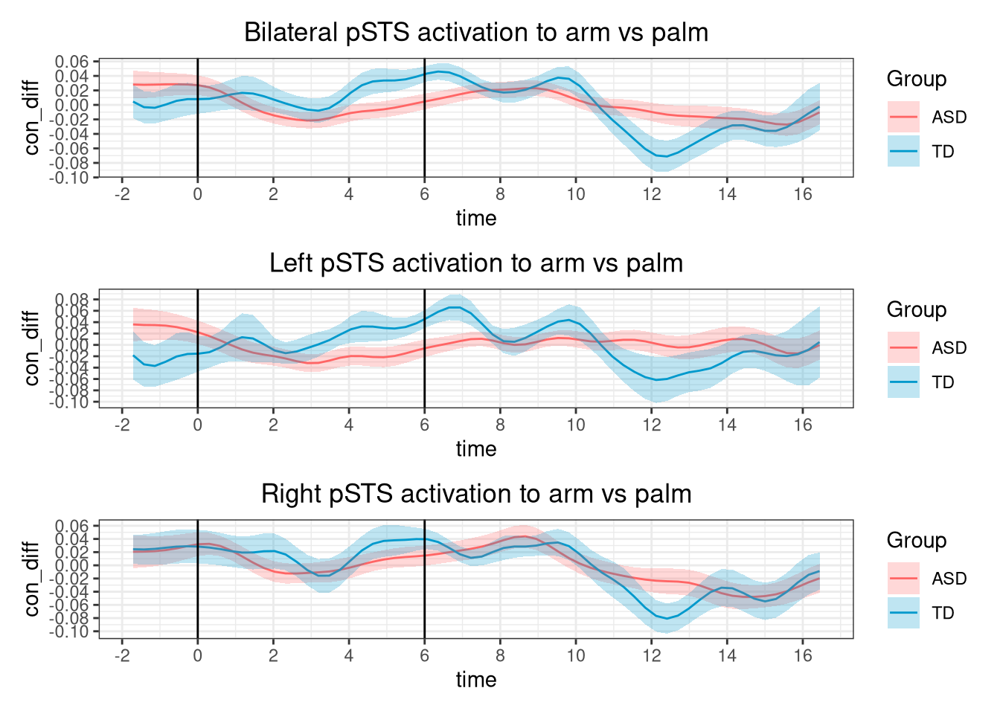

Last updated: 2021-11-25
Checks: 7 0
Knit directory: affective-touch/
This reproducible R Markdown analysis was created with workflowr (version 1.6.2). The Checks tab describes the reproducibility checks that were applied when the results were created. The Past versions tab lists the development history.
Great! Since the R Markdown file has been committed to the Git repository, you know the exact version of the code that produced these results.
Great job! The global environment was empty. Objects defined in the global environment can affect the analysis in your R Markdown file in unknown ways. For reproduciblity it’s best to always run the code in an empty environment.
The command set.seed(20211125) was run prior to running the code in the R Markdown file. Setting a seed ensures that any results that rely on randomness, e.g. subsampling or permutations, are reproducible.
Great job! Recording the operating system, R version, and package versions is critical for reproducibility.
Nice! There were no cached chunks for this analysis, so you can be confident that you successfully produced the results during this run.
Great job! Using relative paths to the files within your workflowr project makes it easier to run your code on other machines.
Great! You are using Git for version control. Tracking code development and connecting the code version to the results is critical for reproducibility.
The results in this page were generated with repository version 7b4f36f. See the Past versions tab to see a history of the changes made to the R Markdown and HTML files.
Note that you need to be careful to ensure that all relevant files for the analysis have been committed to Git prior to generating the results (you can use wflow_publish or wflow_git_commit). workflowr only checks the R Markdown file, but you know if there are other scripts or data files that it depends on. Below is the status of the Git repository when the results were generated:
Ignored files:
Ignored: .Rhistory
Ignored: .Rproj.user/
Untracked files:
Untracked: output/run_hbr.Rdata
Unstaged changes:
Modified: code/statistical analysis.R
Modified: code/temporal_analysis.R
Modified: output/run_hbo.Rdata
Deleted: wflow/analysis/_site.yml
Deleted: wflow/analysis/about.Rmd
Deleted: wflow/analysis/index.Rmd
Deleted: wflow/analysis/license.Rmd
Deleted: wflow/docs/.nojekyll
Deleted: wflow/docs/about.html
Deleted: wflow/docs/index.html
Deleted: wflow/docs/license.html
Deleted: wflow/docs/site_libs/bootstrap-3.3.5/css/bootstrap-theme.css
Deleted: wflow/docs/site_libs/bootstrap-3.3.5/css/bootstrap-theme.css.map
Deleted: wflow/docs/site_libs/bootstrap-3.3.5/css/bootstrap-theme.min.css
Deleted: wflow/docs/site_libs/bootstrap-3.3.5/css/bootstrap.css
Deleted: wflow/docs/site_libs/bootstrap-3.3.5/css/bootstrap.css.map
Deleted: wflow/docs/site_libs/bootstrap-3.3.5/css/bootstrap.min.css
Deleted: wflow/docs/site_libs/bootstrap-3.3.5/css/cerulean.min.css
Deleted: wflow/docs/site_libs/bootstrap-3.3.5/css/cosmo.min.css
Deleted: wflow/docs/site_libs/bootstrap-3.3.5/css/darkly.min.css
Deleted: wflow/docs/site_libs/bootstrap-3.3.5/css/flatly.min.css
Deleted: wflow/docs/site_libs/bootstrap-3.3.5/css/fonts/Lato.ttf
Deleted: wflow/docs/site_libs/bootstrap-3.3.5/css/fonts/LatoBold.ttf
Deleted: wflow/docs/site_libs/bootstrap-3.3.5/css/fonts/LatoItalic.ttf
Deleted: wflow/docs/site_libs/bootstrap-3.3.5/css/fonts/NewsCycle.ttf
Deleted: wflow/docs/site_libs/bootstrap-3.3.5/css/fonts/NewsCycleBold.ttf
Deleted: wflow/docs/site_libs/bootstrap-3.3.5/css/fonts/OpenSans.ttf
Deleted: wflow/docs/site_libs/bootstrap-3.3.5/css/fonts/OpenSansBold.ttf
Deleted: wflow/docs/site_libs/bootstrap-3.3.5/css/fonts/OpenSansBoldItalic.ttf
Deleted: wflow/docs/site_libs/bootstrap-3.3.5/css/fonts/OpenSansItalic.ttf
Deleted: wflow/docs/site_libs/bootstrap-3.3.5/css/fonts/OpenSansLight.ttf
Deleted: wflow/docs/site_libs/bootstrap-3.3.5/css/fonts/OpenSansLightItalic.ttf
Deleted: wflow/docs/site_libs/bootstrap-3.3.5/css/fonts/Raleway.ttf
Deleted: wflow/docs/site_libs/bootstrap-3.3.5/css/fonts/RalewayBold.ttf
Deleted: wflow/docs/site_libs/bootstrap-3.3.5/css/fonts/Roboto.ttf
Deleted: wflow/docs/site_libs/bootstrap-3.3.5/css/fonts/RobotoBold.ttf
Deleted: wflow/docs/site_libs/bootstrap-3.3.5/css/fonts/RobotoLight.ttf
Deleted: wflow/docs/site_libs/bootstrap-3.3.5/css/fonts/RobotoMedium.ttf
Deleted: wflow/docs/site_libs/bootstrap-3.3.5/css/fonts/SourceSansPro.ttf
Deleted: wflow/docs/site_libs/bootstrap-3.3.5/css/fonts/SourceSansProBold.ttf
Deleted: wflow/docs/site_libs/bootstrap-3.3.5/css/fonts/SourceSansProItalic.ttf
Deleted: wflow/docs/site_libs/bootstrap-3.3.5/css/fonts/SourceSansProLight.ttf
Deleted: wflow/docs/site_libs/bootstrap-3.3.5/css/fonts/Ubuntu.ttf
Deleted: wflow/docs/site_libs/bootstrap-3.3.5/css/journal.min.css
Deleted: wflow/docs/site_libs/bootstrap-3.3.5/css/lumen.min.css
Deleted: wflow/docs/site_libs/bootstrap-3.3.5/css/paper.min.css
Deleted: wflow/docs/site_libs/bootstrap-3.3.5/css/readable.min.css
Deleted: wflow/docs/site_libs/bootstrap-3.3.5/css/sandstone.min.css
Deleted: wflow/docs/site_libs/bootstrap-3.3.5/css/simplex.min.css
Deleted: wflow/docs/site_libs/bootstrap-3.3.5/css/spacelab.min.css
Deleted: wflow/docs/site_libs/bootstrap-3.3.5/css/united.min.css
Deleted: wflow/docs/site_libs/bootstrap-3.3.5/css/yeti.min.css
Deleted: wflow/docs/site_libs/bootstrap-3.3.5/fonts/glyphicons-halflings-regular.eot
Deleted: wflow/docs/site_libs/bootstrap-3.3.5/fonts/glyphicons-halflings-regular.svg
Deleted: wflow/docs/site_libs/bootstrap-3.3.5/fonts/glyphicons-halflings-regular.ttf
Deleted: wflow/docs/site_libs/bootstrap-3.3.5/fonts/glyphicons-halflings-regular.woff
Deleted: wflow/docs/site_libs/bootstrap-3.3.5/fonts/glyphicons-halflings-regular.woff2
Deleted: wflow/docs/site_libs/bootstrap-3.3.5/js/bootstrap.js
Deleted: wflow/docs/site_libs/bootstrap-3.3.5/js/bootstrap.min.js
Deleted: wflow/docs/site_libs/bootstrap-3.3.5/js/npm.js
Deleted: wflow/docs/site_libs/bootstrap-3.3.5/shim/html5shiv.min.js
Deleted: wflow/docs/site_libs/bootstrap-3.3.5/shim/respond.min.js
Deleted: wflow/docs/site_libs/font-awesome-5.1.0/css/all.css
Deleted: wflow/docs/site_libs/font-awesome-5.1.0/css/v4-shims.css
Deleted: wflow/docs/site_libs/font-awesome-5.1.0/webfonts/fa-brands-400.eot
Deleted: wflow/docs/site_libs/font-awesome-5.1.0/webfonts/fa-brands-400.svg
Deleted: wflow/docs/site_libs/font-awesome-5.1.0/webfonts/fa-brands-400.ttf
Deleted: wflow/docs/site_libs/font-awesome-5.1.0/webfonts/fa-brands-400.woff
Deleted: wflow/docs/site_libs/font-awesome-5.1.0/webfonts/fa-brands-400.woff2
Deleted: wflow/docs/site_libs/font-awesome-5.1.0/webfonts/fa-regular-400.eot
Deleted: wflow/docs/site_libs/font-awesome-5.1.0/webfonts/fa-regular-400.svg
Deleted: wflow/docs/site_libs/font-awesome-5.1.0/webfonts/fa-regular-400.ttf
Deleted: wflow/docs/site_libs/font-awesome-5.1.0/webfonts/fa-regular-400.woff
Deleted: wflow/docs/site_libs/font-awesome-5.1.0/webfonts/fa-regular-400.woff2
Deleted: wflow/docs/site_libs/font-awesome-5.1.0/webfonts/fa-solid-900.eot
Deleted: wflow/docs/site_libs/font-awesome-5.1.0/webfonts/fa-solid-900.svg
Deleted: wflow/docs/site_libs/font-awesome-5.1.0/webfonts/fa-solid-900.ttf
Deleted: wflow/docs/site_libs/font-awesome-5.1.0/webfonts/fa-solid-900.woff
Deleted: wflow/docs/site_libs/font-awesome-5.1.0/webfonts/fa-solid-900.woff2
Deleted: wflow/docs/site_libs/header-attrs-2.11/header-attrs.js
Deleted: wflow/docs/site_libs/highlightjs-9.12.0/default.css
Deleted: wflow/docs/site_libs/highlightjs-9.12.0/highlight.js
Deleted: wflow/docs/site_libs/highlightjs-9.12.0/textmate.css
Deleted: wflow/docs/site_libs/jquery-3.6.0/jquery-3.6.0.js
Deleted: wflow/docs/site_libs/jquery-3.6.0/jquery-3.6.0.min.js
Deleted: wflow/docs/site_libs/jquery-3.6.0/jquery-3.6.0.min.map
Deleted: wflow/docs/site_libs/navigation-1.1/codefolding.js
Deleted: wflow/docs/site_libs/navigation-1.1/sourceembed.js
Deleted: wflow/docs/site_libs/navigation-1.1/tabsets.js
Note that any generated files, e.g. HTML, png, CSS, etc., are not included in this status report because it is ok for generated content to have uncommitted changes.
These are the previous versions of the repository in which changes were made to the R Markdown (analysis/temporal-analysis.Rmd) and HTML (docs/temporal-analysis.html) files. If you’ve configured a remote Git repository (see ?wflow_git_remote), click on the hyperlinks in the table below to view the files as they were in that past version.
| File | Version | Author | Date | Message |
|---|---|---|---|---|
| Rmd | 7b4f36f | niwei@ccl | 2021-11-25 | wflow_publish("analysis/temporal-analysis.Rmd") |
Introduction
Analysis of hbo and hbr data.
library(tidyverse)── Attaching packages ─────────────────────────────────────── tidyverse 1.3.1 ──✓ ggplot2 3.3.5 ✓ purrr 0.3.4
✓ tibble 3.1.6 ✓ dplyr 1.0.7
✓ tidyr 1.1.4 ✓ stringr 1.4.0
✓ readr 2.1.0 ✓ forcats 0.5.1── Conflicts ────────────────────────────────────────── tidyverse_conflicts() ──
x dplyr::filter() masks stats::filter()
x dplyr::lag() masks stats::lag()library(data.table)
载入程辑包：'data.table'The following objects are masked from 'package:dplyr':
between, first, lastThe following object is masked from 'package:purrr':
transposelibrary(dplyr)
library(ggplot2)
library(readxl)load data and filter subjects
- load questionnaire data, hbo, and hbr data
- filter subjects from ASD and TD group to match IQ
- exclude 5 subjects without nirs data and 2 subjects without SPSRC data
- ASD IQ: [103,max], TD IQ: [min,137]
- final sample: 33 TD, 33 ASD
q_total <- read_xlsx("./data/score_total.xlsx",sheet = 1,col_types = c("numeric","numeric","text","numeric","text",rep("numeric",41)))Warning in read_fun(path = enc2native(normalizePath(path)), sheet_i = sheet, :
Expecting numeric in A2 / R2C1: got a dateWarning in read_fun(path = enc2native(normalizePath(path)), sheet_i = sheet, :
Expecting numeric in D2 / R2C4: got a dateWarning in read_fun(path = enc2native(normalizePath(path)), sheet_i = sheet, :
Expecting numeric in F2 / R2C6: got a dateWarning in read_fun(path = enc2native(normalizePath(path)), sheet_i = sheet, :
Expecting numeric in G2 / R2C7: got a dateWarning in read_fun(path = enc2native(normalizePath(path)), sheet_i = sheet, :
Expecting numeric in H2 / R2C8: got a dateWarning in read_fun(path = enc2native(normalizePath(path)), sheet_i = sheet, :
Expecting numeric in I2 / R2C9: got a dateWarning in read_fun(path = enc2native(normalizePath(path)), sheet_i = sheet, :
Expecting numeric in J2 / R2C10: got a dateWarning in read_fun(path = enc2native(normalizePath(path)), sheet_i = sheet, :
Expecting numeric in K2 / R2C11: got a dateWarning in read_fun(path = enc2native(normalizePath(path)), sheet_i = sheet, :
Expecting numeric in L2 / R2C12: got a dateWarning in read_fun(path = enc2native(normalizePath(path)), sheet_i = sheet, :
Expecting numeric in M2 / R2C13: got a dateWarning in read_fun(path = enc2native(normalizePath(path)), sheet_i = sheet, :
Expecting numeric in N2 / R2C14: got a dateWarning in read_fun(path = enc2native(normalizePath(path)), sheet_i = sheet, :
Expecting numeric in O2 / R2C15: got a dateWarning in read_fun(path = enc2native(normalizePath(path)), sheet_i = sheet, :
Expecting numeric in P2 / R2C16: got a dateWarning in read_fun(path = enc2native(normalizePath(path)), sheet_i = sheet, :
Expecting numeric in Q2 / R2C17: got a dateWarning in read_fun(path = enc2native(normalizePath(path)), sheet_i = sheet, :
Expecting numeric in R2 / R2C18: got a dateWarning in read_fun(path = enc2native(normalizePath(path)), sheet_i = sheet, :
Expecting numeric in S2 / R2C19: got a dateWarning in read_fun(path = enc2native(normalizePath(path)), sheet_i = sheet, :
Expecting numeric in A3 / R3C1: got a dateWarning in read_fun(path = enc2native(normalizePath(path)), sheet_i = sheet, :
Expecting numeric in D3 / R3C4: got a dateWarning in read_fun(path = enc2native(normalizePath(path)), sheet_i = sheet, :
Expecting numeric in F3 / R3C6: got a dateWarning in read_fun(path = enc2native(normalizePath(path)), sheet_i = sheet, :
Expecting numeric in H3 / R3C8: got a dateWarning in read_fun(path = enc2native(normalizePath(path)), sheet_i = sheet, :
Expecting numeric in I3 / R3C9: got a dateWarning in read_fun(path = enc2native(normalizePath(path)), sheet_i = sheet, :
Expecting numeric in J3 / R3C10: got a dateWarning in read_fun(path = enc2native(normalizePath(path)), sheet_i = sheet, :
Expecting numeric in K3 / R3C11: got a dateWarning in read_fun(path = enc2native(normalizePath(path)), sheet_i = sheet, :
Expecting numeric in L3 / R3C12: got a dateWarning in read_fun(path = enc2native(normalizePath(path)), sheet_i = sheet, :
Expecting numeric in M3 / R3C13: got a dateWarning in read_fun(path = enc2native(normalizePath(path)), sheet_i = sheet, :
Expecting numeric in N3 / R3C14: got a dateWarning in read_fun(path = enc2native(normalizePath(path)), sheet_i = sheet, :
Expecting numeric in O3 / R3C15: got a dateWarning in read_fun(path = enc2native(normalizePath(path)), sheet_i = sheet, :
Expecting numeric in P3 / R3C16: got a dateWarning in read_fun(path = enc2native(normalizePath(path)), sheet_i = sheet, :
Expecting numeric in Q3 / R3C17: got a dateWarning in read_fun(path = enc2native(normalizePath(path)), sheet_i = sheet, :
Expecting numeric in R3 / R3C18: got a dateWarning in read_fun(path = enc2native(normalizePath(path)), sheet_i = sheet, :
Expecting numeric in S3 / R3C19: got a dateWarning in read_fun(path = enc2native(normalizePath(path)), sheet_i = sheet, :
Expecting numeric in A4 / R4C1: got a dateWarning in read_fun(path = enc2native(normalizePath(path)), sheet_i = sheet, :
Expecting numeric in D4 / R4C4: got a dateWarning in read_fun(path = enc2native(normalizePath(path)), sheet_i = sheet, :
Expecting numeric in F4 / R4C6: got a dateWarning in read_fun(path = enc2native(normalizePath(path)), sheet_i = sheet, :
Expecting numeric in H4 / R4C8: got a dateWarning in read_fun(path = enc2native(normalizePath(path)), sheet_i = sheet, :
Expecting numeric in I4 / R4C9: got a dateWarning in read_fun(path = enc2native(normalizePath(path)), sheet_i = sheet, :
Expecting numeric in J4 / R4C10: got a dateWarning in read_fun(path = enc2native(normalizePath(path)), sheet_i = sheet, :
Expecting numeric in K4 / R4C11: got a dateWarning in read_fun(path = enc2native(normalizePath(path)), sheet_i = sheet, :
Expecting numeric in L4 / R4C12: got a dateWarning in read_fun(path = enc2native(normalizePath(path)), sheet_i = sheet, :
Expecting numeric in M4 / R4C13: got a dateWarning in read_fun(path = enc2native(normalizePath(path)), sheet_i = sheet, :
Expecting numeric in N4 / R4C14: got a dateWarning in read_fun(path = enc2native(normalizePath(path)), sheet_i = sheet, :
Expecting numeric in O4 / R4C15: got a dateWarning in read_fun(path = enc2native(normalizePath(path)), sheet_i = sheet, :
Expecting numeric in P4 / R4C16: got a dateWarning in read_fun(path = enc2native(normalizePath(path)), sheet_i = sheet, :
Expecting numeric in Q4 / R4C17: got a dateWarning in read_fun(path = enc2native(normalizePath(path)), sheet_i = sheet, :
Expecting numeric in R4 / R4C18: got a dateWarning in read_fun(path = enc2native(normalizePath(path)), sheet_i = sheet, :
Expecting numeric in S4 / R4C19: got a dateWarning in read_fun(path = enc2native(normalizePath(path)), sheet_i = sheet, :
Expecting numeric in A5 / R5C1: got a dateWarning in read_fun(path = enc2native(normalizePath(path)), sheet_i = sheet, :
Expecting numeric in D5 / R5C4: got a dateWarning in read_fun(path = enc2native(normalizePath(path)), sheet_i = sheet, :
Expecting numeric in F5 / R5C6: got a dateWarning in read_fun(path = enc2native(normalizePath(path)), sheet_i = sheet, :
Expecting numeric in G5 / R5C7: got a dateWarning in read_fun(path = enc2native(normalizePath(path)), sheet_i = sheet, :
Expecting numeric in H5 / R5C8: got a dateWarning in read_fun(path = enc2native(normalizePath(path)), sheet_i = sheet, :
Expecting numeric in I5 / R5C9: got a dateWarning in read_fun(path = enc2native(normalizePath(path)), sheet_i = sheet, :
Expecting numeric in J5 / R5C10: got a dateWarning in read_fun(path = enc2native(normalizePath(path)), sheet_i = sheet, :
Expecting numeric in K5 / R5C11: got a dateWarning in read_fun(path = enc2native(normalizePath(path)), sheet_i = sheet, :
Expecting numeric in L5 / R5C12: got a dateWarning in read_fun(path = enc2native(normalizePath(path)), sheet_i = sheet, :
Expecting numeric in M5 / R5C13: got a dateWarning in read_fun(path = enc2native(normalizePath(path)), sheet_i = sheet, :
Expecting numeric in N5 / R5C14: got a dateWarning in read_fun(path = enc2native(normalizePath(path)), sheet_i = sheet, :
Expecting numeric in O5 / R5C15: got a dateWarning in read_fun(path = enc2native(normalizePath(path)), sheet_i = sheet, :
Expecting numeric in P5 / R5C16: got a dateWarning in read_fun(path = enc2native(normalizePath(path)), sheet_i = sheet, :
Expecting numeric in Q5 / R5C17: got a dateWarning in read_fun(path = enc2native(normalizePath(path)), sheet_i = sheet, :
Expecting numeric in R5 / R5C18: got a dateWarning in read_fun(path = enc2native(normalizePath(path)), sheet_i = sheet, :
Expecting numeric in S5 / R5C19: got a dateWarning in read_fun(path = enc2native(normalizePath(path)), sheet_i = sheet, :
Expecting numeric in A6 / R6C1: got a dateWarning in read_fun(path = enc2native(normalizePath(path)), sheet_i = sheet, :
Expecting numeric in D6 / R6C4: got a dateWarning in read_fun(path = enc2native(normalizePath(path)), sheet_i = sheet, :
Expecting numeric in F6 / R6C6: got a dateWarning in read_fun(path = enc2native(normalizePath(path)), sheet_i = sheet, :
Expecting numeric in H6 / R6C8: got a dateWarning in read_fun(path = enc2native(normalizePath(path)), sheet_i = sheet, :
Expecting numeric in I6 / R6C9: got a dateWarning in read_fun(path = enc2native(normalizePath(path)), sheet_i = sheet, :
Expecting numeric in J6 / R6C10: got a dateWarning in read_fun(path = enc2native(normalizePath(path)), sheet_i = sheet, :
Expecting numeric in K6 / R6C11: got a dateWarning in read_fun(path = enc2native(normalizePath(path)), sheet_i = sheet, :
Expecting numeric in L6 / R6C12: got a dateWarning in read_fun(path = enc2native(normalizePath(path)), sheet_i = sheet, :
Expecting numeric in M6 / R6C13: got a dateWarning in read_fun(path = enc2native(normalizePath(path)), sheet_i = sheet, :
Expecting numeric in N6 / R6C14: got a dateWarning in read_fun(path = enc2native(normalizePath(path)), sheet_i = sheet, :
Expecting numeric in O6 / R6C15: got a dateWarning in read_fun(path = enc2native(normalizePath(path)), sheet_i = sheet, :
Expecting numeric in P6 / R6C16: got a dateWarning in read_fun(path = enc2native(normalizePath(path)), sheet_i = sheet, :
Expecting numeric in Q6 / R6C17: got a dateWarning in read_fun(path = enc2native(normalizePath(path)), sheet_i = sheet, :
Expecting numeric in R6 / R6C18: got a dateWarning in read_fun(path = enc2native(normalizePath(path)), sheet_i = sheet, :
Expecting numeric in S6 / R6C19: got a dateWarning in read_fun(path = enc2native(normalizePath(path)), sheet_i = sheet, :
Expecting numeric in A7 / R7C1: got a dateWarning in read_fun(path = enc2native(normalizePath(path)), sheet_i = sheet, :
Expecting numeric in D7 / R7C4: got a dateWarning in read_fun(path = enc2native(normalizePath(path)), sheet_i = sheet, :
Expecting numeric in F7 / R7C6: got a dateWarning in read_fun(path = enc2native(normalizePath(path)), sheet_i = sheet, :
Expecting numeric in H7 / R7C8: got a dateWarning in read_fun(path = enc2native(normalizePath(path)), sheet_i = sheet, :
Expecting numeric in I7 / R7C9: got a dateWarning in read_fun(path = enc2native(normalizePath(path)), sheet_i = sheet, :
Expecting numeric in J7 / R7C10: got a dateWarning in read_fun(path = enc2native(normalizePath(path)), sheet_i = sheet, :
Expecting numeric in K7 / R7C11: got a dateWarning in read_fun(path = enc2native(normalizePath(path)), sheet_i = sheet, :
Expecting numeric in L7 / R7C12: got a dateWarning in read_fun(path = enc2native(normalizePath(path)), sheet_i = sheet, :
Expecting numeric in M7 / R7C13: got a dateWarning in read_fun(path = enc2native(normalizePath(path)), sheet_i = sheet, :
Expecting numeric in N7 / R7C14: got a dateWarning in read_fun(path = enc2native(normalizePath(path)), sheet_i = sheet, :
Expecting numeric in O7 / R7C15: got a dateWarning in read_fun(path = enc2native(normalizePath(path)), sheet_i = sheet, :
Expecting numeric in P7 / R7C16: got a dateWarning in read_fun(path = enc2native(normalizePath(path)), sheet_i = sheet, :
Expecting numeric in Q7 / R7C17: got a dateWarning in read_fun(path = enc2native(normalizePath(path)), sheet_i = sheet, :
Expecting numeric in R7 / R7C18: got a dateWarning in read_fun(path = enc2native(normalizePath(path)), sheet_i = sheet, :
Expecting numeric in S7 / R7C19: got a dateWarning in read_fun(path = enc2native(normalizePath(path)), sheet_i = sheet, :
Expecting numeric in A8 / R8C1: got a dateWarning in read_fun(path = enc2native(normalizePath(path)), sheet_i = sheet, :
Expecting numeric in D8 / R8C4: got a dateWarning in read_fun(path = enc2native(normalizePath(path)), sheet_i = sheet, :
Expecting numeric in F8 / R8C6: got a dateWarning in read_fun(path = enc2native(normalizePath(path)), sheet_i = sheet, :
Expecting numeric in G8 / R8C7: got a dateWarning in read_fun(path = enc2native(normalizePath(path)), sheet_i = sheet, :
Expecting numeric in H8 / R8C8: got a dateWarning in read_fun(path = enc2native(normalizePath(path)), sheet_i = sheet, :
Expecting numeric in I8 / R8C9: got a dateWarning in read_fun(path = enc2native(normalizePath(path)), sheet_i = sheet, :
Expecting numeric in J8 / R8C10: got a dateWarning in read_fun(path = enc2native(normalizePath(path)), sheet_i = sheet, :
Expecting numeric in K8 / R8C11: got a dateWarning in read_fun(path = enc2native(normalizePath(path)), sheet_i = sheet, :
Expecting numeric in L8 / R8C12: got a dateWarning in read_fun(path = enc2native(normalizePath(path)), sheet_i = sheet, :
Expecting numeric in M8 / R8C13: got a dateWarning in read_fun(path = enc2native(normalizePath(path)), sheet_i = sheet, :
Expecting numeric in N8 / R8C14: got a dateWarning in read_fun(path = enc2native(normalizePath(path)), sheet_i = sheet, :
Expecting numeric in O8 / R8C15: got a dateWarning in read_fun(path = enc2native(normalizePath(path)), sheet_i = sheet, :
Expecting numeric in P8 / R8C16: got a dateWarning in read_fun(path = enc2native(normalizePath(path)), sheet_i = sheet, :
Expecting numeric in Q8 / R8C17: got a dateWarning in read_fun(path = enc2native(normalizePath(path)), sheet_i = sheet, :
Expecting numeric in R8 / R8C18: got a dateWarning in read_fun(path = enc2native(normalizePath(path)), sheet_i = sheet, :
Expecting numeric in S8 / R8C19: got a dateWarning in read_fun(path = enc2native(normalizePath(path)), sheet_i = sheet, :
Expecting numeric in A9 / R9C1: got a dateWarning in read_fun(path = enc2native(normalizePath(path)), sheet_i = sheet, :
Expecting numeric in D9 / R9C4: got a dateWarning in read_fun(path = enc2native(normalizePath(path)), sheet_i = sheet, :
Expecting numeric in F9 / R9C6: got a dateWarning in read_fun(path = enc2native(normalizePath(path)), sheet_i = sheet, :
Expecting numeric in G9 / R9C7: got a dateWarning in read_fun(path = enc2native(normalizePath(path)), sheet_i = sheet, :
Expecting numeric in H9 / R9C8: got a dateWarning in read_fun(path = enc2native(normalizePath(path)), sheet_i = sheet, :
Expecting numeric in I9 / R9C9: got a dateWarning in read_fun(path = enc2native(normalizePath(path)), sheet_i = sheet, :
Expecting numeric in J9 / R9C10: got a dateWarning in read_fun(path = enc2native(normalizePath(path)), sheet_i = sheet, :
Expecting numeric in K9 / R9C11: got a dateWarning in read_fun(path = enc2native(normalizePath(path)), sheet_i = sheet, :
Expecting numeric in L9 / R9C12: got a dateWarning in read_fun(path = enc2native(normalizePath(path)), sheet_i = sheet, :
Expecting numeric in M9 / R9C13: got a dateWarning in read_fun(path = enc2native(normalizePath(path)), sheet_i = sheet, :
Expecting numeric in N9 / R9C14: got a dateWarning in read_fun(path = enc2native(normalizePath(path)), sheet_i = sheet, :
Expecting numeric in O9 / R9C15: got a dateWarning in read_fun(path = enc2native(normalizePath(path)), sheet_i = sheet, :
Expecting numeric in P9 / R9C16: got a dateWarning in read_fun(path = enc2native(normalizePath(path)), sheet_i = sheet, :
Expecting numeric in Q9 / R9C17: got a dateWarning in read_fun(path = enc2native(normalizePath(path)), sheet_i = sheet, :
Expecting numeric in R9 / R9C18: got a dateWarning in read_fun(path = enc2native(normalizePath(path)), sheet_i = sheet, :
Expecting numeric in S9 / R9C19: got a dateWarning in read_fun(path = enc2native(normalizePath(path)), sheet_i = sheet, :
Expecting numeric in A10 / R10C1: got a dateWarning in read_fun(path = enc2native(normalizePath(path)), sheet_i = sheet, :
Expecting numeric in D10 / R10C4: got a dateWarning in read_fun(path = enc2native(normalizePath(path)), sheet_i = sheet, :
Expecting numeric in F10 / R10C6: got a dateWarning in read_fun(path = enc2native(normalizePath(path)), sheet_i = sheet, :
Expecting numeric in H10 / R10C8: got a dateWarning in read_fun(path = enc2native(normalizePath(path)), sheet_i = sheet, :
Expecting numeric in I10 / R10C9: got a dateWarning in read_fun(path = enc2native(normalizePath(path)), sheet_i = sheet, :
Expecting numeric in J10 / R10C10: got a dateWarning in read_fun(path = enc2native(normalizePath(path)), sheet_i = sheet, :
Expecting numeric in K10 / R10C11: got a dateWarning in read_fun(path = enc2native(normalizePath(path)), sheet_i = sheet, :
Expecting numeric in L10 / R10C12: got a dateWarning in read_fun(path = enc2native(normalizePath(path)), sheet_i = sheet, :
Expecting numeric in M10 / R10C13: got a dateWarning in read_fun(path = enc2native(normalizePath(path)), sheet_i = sheet, :
Expecting numeric in N10 / R10C14: got a dateWarning in read_fun(path = enc2native(normalizePath(path)), sheet_i = sheet, :
Expecting numeric in O10 / R10C15: got a dateWarning in read_fun(path = enc2native(normalizePath(path)), sheet_i = sheet, :
Expecting numeric in P10 / R10C16: got a dateWarning in read_fun(path = enc2native(normalizePath(path)), sheet_i = sheet, :
Expecting numeric in Q10 / R10C17: got a dateWarning in read_fun(path = enc2native(normalizePath(path)), sheet_i = sheet, :
Expecting numeric in R10 / R10C18: got a dateWarning in read_fun(path = enc2native(normalizePath(path)), sheet_i = sheet, :
Expecting numeric in S10 / R10C19: got a dateWarning in read_fun(path = enc2native(normalizePath(path)), sheet_i = sheet, :
Expecting numeric in A11 / R11C1: got a dateWarning in read_fun(path = enc2native(normalizePath(path)), sheet_i = sheet, :
Expecting numeric in D11 / R11C4: got a dateWarning in read_fun(path = enc2native(normalizePath(path)), sheet_i = sheet, :
Expecting numeric in F11 / R11C6: got a dateWarning in read_fun(path = enc2native(normalizePath(path)), sheet_i = sheet, :
Expecting numeric in H11 / R11C8: got a dateWarning in read_fun(path = enc2native(normalizePath(path)), sheet_i = sheet, :
Expecting numeric in I11 / R11C9: got a dateWarning in read_fun(path = enc2native(normalizePath(path)), sheet_i = sheet, :
Expecting numeric in J11 / R11C10: got a dateWarning in read_fun(path = enc2native(normalizePath(path)), sheet_i = sheet, :
Expecting numeric in K11 / R11C11: got a dateWarning in read_fun(path = enc2native(normalizePath(path)), sheet_i = sheet, :
Expecting numeric in L11 / R11C12: got a dateWarning in read_fun(path = enc2native(normalizePath(path)), sheet_i = sheet, :
Expecting numeric in M11 / R11C13: got a dateWarning in read_fun(path = enc2native(normalizePath(path)), sheet_i = sheet, :
Expecting numeric in N11 / R11C14: got a dateWarning in read_fun(path = enc2native(normalizePath(path)), sheet_i = sheet, :
Expecting numeric in O11 / R11C15: got a dateWarning in read_fun(path = enc2native(normalizePath(path)), sheet_i = sheet, :
Expecting numeric in P11 / R11C16: got a dateWarning in read_fun(path = enc2native(normalizePath(path)), sheet_i = sheet, :
Expecting numeric in Q11 / R11C17: got a dateWarning in read_fun(path = enc2native(normalizePath(path)), sheet_i = sheet, :
Expecting numeric in R11 / R11C18: got a dateWarning in read_fun(path = enc2native(normalizePath(path)), sheet_i = sheet, :
Expecting numeric in S11 / R11C19: got a dateWarning in read_fun(path = enc2native(normalizePath(path)), sheet_i = sheet, :
Expecting numeric in A12 / R12C1: got a dateWarning in read_fun(path = enc2native(normalizePath(path)), sheet_i = sheet, :
Expecting numeric in D12 / R12C4: got a dateWarning in read_fun(path = enc2native(normalizePath(path)), sheet_i = sheet, :
Expecting numeric in F12 / R12C6: got a dateWarning in read_fun(path = enc2native(normalizePath(path)), sheet_i = sheet, :
Expecting numeric in H12 / R12C8: got a dateWarning in read_fun(path = enc2native(normalizePath(path)), sheet_i = sheet, :
Expecting numeric in I12 / R12C9: got a dateWarning in read_fun(path = enc2native(normalizePath(path)), sheet_i = sheet, :
Expecting numeric in J12 / R12C10: got a dateWarning in read_fun(path = enc2native(normalizePath(path)), sheet_i = sheet, :
Expecting numeric in K12 / R12C11: got a dateWarning in read_fun(path = enc2native(normalizePath(path)), sheet_i = sheet, :
Expecting numeric in L12 / R12C12: got a dateWarning in read_fun(path = enc2native(normalizePath(path)), sheet_i = sheet, :
Expecting numeric in M12 / R12C13: got a dateWarning in read_fun(path = enc2native(normalizePath(path)), sheet_i = sheet, :
Expecting numeric in N12 / R12C14: got a dateWarning in read_fun(path = enc2native(normalizePath(path)), sheet_i = sheet, :
Expecting numeric in O12 / R12C15: got a dateWarning in read_fun(path = enc2native(normalizePath(path)), sheet_i = sheet, :
Expecting numeric in P12 / R12C16: got a dateWarning in read_fun(path = enc2native(normalizePath(path)), sheet_i = sheet, :
Expecting numeric in Q12 / R12C17: got a dateWarning in read_fun(path = enc2native(normalizePath(path)), sheet_i = sheet, :
Expecting numeric in R12 / R12C18: got a dateWarning in read_fun(path = enc2native(normalizePath(path)), sheet_i = sheet, :
Expecting numeric in S12 / R12C19: got a dateWarning in read_fun(path = enc2native(normalizePath(path)), sheet_i = sheet, :
Expecting numeric in A13 / R13C1: got a dateWarning in read_fun(path = enc2native(normalizePath(path)), sheet_i = sheet, :
Expecting numeric in D13 / R13C4: got a dateWarning in read_fun(path = enc2native(normalizePath(path)), sheet_i = sheet, :
Expecting numeric in F13 / R13C6: got a dateWarning in read_fun(path = enc2native(normalizePath(path)), sheet_i = sheet, :
Expecting numeric in H13 / R13C8: got a dateWarning in read_fun(path = enc2native(normalizePath(path)), sheet_i = sheet, :
Expecting numeric in I13 / R13C9: got a dateWarning in read_fun(path = enc2native(normalizePath(path)), sheet_i = sheet, :
Expecting numeric in J13 / R13C10: got a dateWarning in read_fun(path = enc2native(normalizePath(path)), sheet_i = sheet, :
Expecting numeric in K13 / R13C11: got a dateWarning in read_fun(path = enc2native(normalizePath(path)), sheet_i = sheet, :
Expecting numeric in L13 / R13C12: got a dateWarning in read_fun(path = enc2native(normalizePath(path)), sheet_i = sheet, :
Expecting numeric in M13 / R13C13: got a dateWarning in read_fun(path = enc2native(normalizePath(path)), sheet_i = sheet, :
Expecting numeric in N13 / R13C14: got a dateWarning in read_fun(path = enc2native(normalizePath(path)), sheet_i = sheet, :
Expecting numeric in O13 / R13C15: got a dateWarning in read_fun(path = enc2native(normalizePath(path)), sheet_i = sheet, :
Expecting numeric in P13 / R13C16: got a dateWarning in read_fun(path = enc2native(normalizePath(path)), sheet_i = sheet, :
Expecting numeric in Q13 / R13C17: got a dateWarning in read_fun(path = enc2native(normalizePath(path)), sheet_i = sheet, :
Expecting numeric in R13 / R13C18: got a dateWarning in read_fun(path = enc2native(normalizePath(path)), sheet_i = sheet, :
Expecting numeric in S13 / R13C19: got a dateWarning in read_fun(path = enc2native(normalizePath(path)), sheet_i = sheet, :
Expecting numeric in A14 / R14C1: got a dateWarning in read_fun(path = enc2native(normalizePath(path)), sheet_i = sheet, :
Expecting numeric in D14 / R14C4: got a dateWarning in read_fun(path = enc2native(normalizePath(path)), sheet_i = sheet, :
Expecting numeric in F14 / R14C6: got a dateWarning in read_fun(path = enc2native(normalizePath(path)), sheet_i = sheet, :
Expecting numeric in H14 / R14C8: got a dateWarning in read_fun(path = enc2native(normalizePath(path)), sheet_i = sheet, :
Expecting numeric in I14 / R14C9: got a dateWarning in read_fun(path = enc2native(normalizePath(path)), sheet_i = sheet, :
Expecting numeric in J14 / R14C10: got a dateWarning in read_fun(path = enc2native(normalizePath(path)), sheet_i = sheet, :
Expecting numeric in K14 / R14C11: got a dateWarning in read_fun(path = enc2native(normalizePath(path)), sheet_i = sheet, :
Expecting numeric in L14 / R14C12: got a dateWarning in read_fun(path = enc2native(normalizePath(path)), sheet_i = sheet, :
Expecting numeric in M14 / R14C13: got a dateWarning in read_fun(path = enc2native(normalizePath(path)), sheet_i = sheet, :
Expecting numeric in N14 / R14C14: got a dateWarning in read_fun(path = enc2native(normalizePath(path)), sheet_i = sheet, :
Expecting numeric in O14 / R14C15: got a dateWarning in read_fun(path = enc2native(normalizePath(path)), sheet_i = sheet, :
Expecting numeric in P14 / R14C16: got a dateWarning in read_fun(path = enc2native(normalizePath(path)), sheet_i = sheet, :
Expecting numeric in Q14 / R14C17: got a dateWarning in read_fun(path = enc2native(normalizePath(path)), sheet_i = sheet, :
Expecting numeric in R14 / R14C18: got a dateWarning in read_fun(path = enc2native(normalizePath(path)), sheet_i = sheet, :
Expecting numeric in S14 / R14C19: got a dateWarning in read_fun(path = enc2native(normalizePath(path)), sheet_i = sheet, :
Expecting numeric in A15 / R15C1: got a dateWarning in read_fun(path = enc2native(normalizePath(path)), sheet_i = sheet, :
Expecting numeric in D15 / R15C4: got a dateWarning in read_fun(path = enc2native(normalizePath(path)), sheet_i = sheet, :
Expecting numeric in F15 / R15C6: got a dateWarning in read_fun(path = enc2native(normalizePath(path)), sheet_i = sheet, :
Expecting numeric in H15 / R15C8: got a dateWarning in read_fun(path = enc2native(normalizePath(path)), sheet_i = sheet, :
Expecting numeric in I15 / R15C9: got a dateWarning in read_fun(path = enc2native(normalizePath(path)), sheet_i = sheet, :
Expecting numeric in J15 / R15C10: got a dateWarning in read_fun(path = enc2native(normalizePath(path)), sheet_i = sheet, :
Expecting numeric in K15 / R15C11: got a dateWarning in read_fun(path = enc2native(normalizePath(path)), sheet_i = sheet, :
Expecting numeric in L15 / R15C12: got a dateWarning in read_fun(path = enc2native(normalizePath(path)), sheet_i = sheet, :
Expecting numeric in M15 / R15C13: got a dateWarning in read_fun(path = enc2native(normalizePath(path)), sheet_i = sheet, :
Expecting numeric in N15 / R15C14: got a dateWarning in read_fun(path = enc2native(normalizePath(path)), sheet_i = sheet, :
Expecting numeric in O15 / R15C15: got a dateWarning in read_fun(path = enc2native(normalizePath(path)), sheet_i = sheet, :
Expecting numeric in P15 / R15C16: got a dateWarning in read_fun(path = enc2native(normalizePath(path)), sheet_i = sheet, :
Expecting numeric in Q15 / R15C17: got a dateWarning in read_fun(path = enc2native(normalizePath(path)), sheet_i = sheet, :
Expecting numeric in R15 / R15C18: got a dateWarning in read_fun(path = enc2native(normalizePath(path)), sheet_i = sheet, :
Expecting numeric in S15 / R15C19: got a dateWarning in read_fun(path = enc2native(normalizePath(path)), sheet_i = sheet, :
Expecting numeric in A16 / R16C1: got a dateWarning in read_fun(path = enc2native(normalizePath(path)), sheet_i = sheet, :
Expecting numeric in D16 / R16C4: got a dateWarning in read_fun(path = enc2native(normalizePath(path)), sheet_i = sheet, :
Expecting numeric in F16 / R16C6: got a dateWarning in read_fun(path = enc2native(normalizePath(path)), sheet_i = sheet, :
Expecting numeric in H16 / R16C8: got a dateWarning in read_fun(path = enc2native(normalizePath(path)), sheet_i = sheet, :
Expecting numeric in I16 / R16C9: got a dateWarning in read_fun(path = enc2native(normalizePath(path)), sheet_i = sheet, :
Expecting numeric in J16 / R16C10: got a dateWarning in read_fun(path = enc2native(normalizePath(path)), sheet_i = sheet, :
Expecting numeric in K16 / R16C11: got a dateWarning in read_fun(path = enc2native(normalizePath(path)), sheet_i = sheet, :
Expecting numeric in L16 / R16C12: got a dateWarning in read_fun(path = enc2native(normalizePath(path)), sheet_i = sheet, :
Expecting numeric in M16 / R16C13: got a dateWarning in read_fun(path = enc2native(normalizePath(path)), sheet_i = sheet, :
Expecting numeric in N16 / R16C14: got a dateWarning in read_fun(path = enc2native(normalizePath(path)), sheet_i = sheet, :
Expecting numeric in O16 / R16C15: got a dateWarning in read_fun(path = enc2native(normalizePath(path)), sheet_i = sheet, :
Expecting numeric in P16 / R16C16: got a dateWarning in read_fun(path = enc2native(normalizePath(path)), sheet_i = sheet, :
Expecting numeric in Q16 / R16C17: got a dateWarning in read_fun(path = enc2native(normalizePath(path)), sheet_i = sheet, :
Expecting numeric in R16 / R16C18: got a dateWarning in read_fun(path = enc2native(normalizePath(path)), sheet_i = sheet, :
Expecting numeric in S16 / R16C19: got a dateWarning in read_fun(path = enc2native(normalizePath(path)), sheet_i = sheet, :
Expecting numeric in A17 / R17C1: got a dateWarning in read_fun(path = enc2native(normalizePath(path)), sheet_i = sheet, :
Expecting numeric in D17 / R17C4: got a dateWarning in read_fun(path = enc2native(normalizePath(path)), sheet_i = sheet, :
Expecting numeric in F17 / R17C6: got a dateWarning in read_fun(path = enc2native(normalizePath(path)), sheet_i = sheet, :
Expecting numeric in H17 / R17C8: got a dateWarning in read_fun(path = enc2native(normalizePath(path)), sheet_i = sheet, :
Expecting numeric in I17 / R17C9: got a dateWarning in read_fun(path = enc2native(normalizePath(path)), sheet_i = sheet, :
Expecting numeric in J17 / R17C10: got a dateWarning in read_fun(path = enc2native(normalizePath(path)), sheet_i = sheet, :
Expecting numeric in K17 / R17C11: got a dateWarning in read_fun(path = enc2native(normalizePath(path)), sheet_i = sheet, :
Expecting numeric in L17 / R17C12: got a dateWarning in read_fun(path = enc2native(normalizePath(path)), sheet_i = sheet, :
Expecting numeric in M17 / R17C13: got a dateWarning in read_fun(path = enc2native(normalizePath(path)), sheet_i = sheet, :
Expecting numeric in N17 / R17C14: got a dateWarning in read_fun(path = enc2native(normalizePath(path)), sheet_i = sheet, :
Expecting numeric in O17 / R17C15: got a dateWarning in read_fun(path = enc2native(normalizePath(path)), sheet_i = sheet, :
Expecting numeric in P17 / R17C16: got a dateWarning in read_fun(path = enc2native(normalizePath(path)), sheet_i = sheet, :
Expecting numeric in Q17 / R17C17: got a dateWarning in read_fun(path = enc2native(normalizePath(path)), sheet_i = sheet, :
Expecting numeric in R17 / R17C18: got a dateWarning in read_fun(path = enc2native(normalizePath(path)), sheet_i = sheet, :
Expecting numeric in S17 / R17C19: got a dateWarning in read_fun(path = enc2native(normalizePath(path)), sheet_i = sheet, :
Expecting numeric in A18 / R18C1: got a dateWarning in read_fun(path = enc2native(normalizePath(path)), sheet_i = sheet, :
Expecting numeric in D18 / R18C4: got a dateWarning in read_fun(path = enc2native(normalizePath(path)), sheet_i = sheet, :
Expecting numeric in F18 / R18C6: got a dateWarning in read_fun(path = enc2native(normalizePath(path)), sheet_i = sheet, :
Expecting numeric in H18 / R18C8: got a dateWarning in read_fun(path = enc2native(normalizePath(path)), sheet_i = sheet, :
Expecting numeric in I18 / R18C9: got a dateWarning in read_fun(path = enc2native(normalizePath(path)), sheet_i = sheet, :
Expecting numeric in J18 / R18C10: got a dateWarning in read_fun(path = enc2native(normalizePath(path)), sheet_i = sheet, :
Expecting numeric in K18 / R18C11: got a dateWarning in read_fun(path = enc2native(normalizePath(path)), sheet_i = sheet, :
Expecting numeric in L18 / R18C12: got a dateWarning in read_fun(path = enc2native(normalizePath(path)), sheet_i = sheet, :
Expecting numeric in M18 / R18C13: got a dateWarning in read_fun(path = enc2native(normalizePath(path)), sheet_i = sheet, :
Expecting numeric in N18 / R18C14: got a dateWarning in read_fun(path = enc2native(normalizePath(path)), sheet_i = sheet, :
Expecting numeric in O18 / R18C15: got a dateWarning in read_fun(path = enc2native(normalizePath(path)), sheet_i = sheet, :
Expecting numeric in P18 / R18C16: got a dateWarning in read_fun(path = enc2native(normalizePath(path)), sheet_i = sheet, :
Expecting numeric in Q18 / R18C17: got a dateWarning in read_fun(path = enc2native(normalizePath(path)), sheet_i = sheet, :
Expecting numeric in R18 / R18C18: got a dateWarning in read_fun(path = enc2native(normalizePath(path)), sheet_i = sheet, :
Expecting numeric in S18 / R18C19: got a dateWarning in read_fun(path = enc2native(normalizePath(path)), sheet_i = sheet, :
Expecting numeric in A19 / R19C1: got a dateWarning in read_fun(path = enc2native(normalizePath(path)), sheet_i = sheet, :
Expecting numeric in D19 / R19C4: got a dateWarning in read_fun(path = enc2native(normalizePath(path)), sheet_i = sheet, :
Expecting numeric in F19 / R19C6: got a dateWarning in read_fun(path = enc2native(normalizePath(path)), sheet_i = sheet, :
Expecting numeric in H19 / R19C8: got a dateWarning in read_fun(path = enc2native(normalizePath(path)), sheet_i = sheet, :
Expecting numeric in I19 / R19C9: got a dateWarning in read_fun(path = enc2native(normalizePath(path)), sheet_i = sheet, :
Expecting numeric in J19 / R19C10: got a dateWarning in read_fun(path = enc2native(normalizePath(path)), sheet_i = sheet, :
Expecting numeric in K19 / R19C11: got a dateWarning in read_fun(path = enc2native(normalizePath(path)), sheet_i = sheet, :
Expecting numeric in L19 / R19C12: got a dateWarning in read_fun(path = enc2native(normalizePath(path)), sheet_i = sheet, :
Expecting numeric in M19 / R19C13: got a dateWarning in read_fun(path = enc2native(normalizePath(path)), sheet_i = sheet, :
Expecting numeric in N19 / R19C14: got a dateWarning in read_fun(path = enc2native(normalizePath(path)), sheet_i = sheet, :
Expecting numeric in O19 / R19C15: got a dateWarning in read_fun(path = enc2native(normalizePath(path)), sheet_i = sheet, :
Expecting numeric in P19 / R19C16: got a dateWarning in read_fun(path = enc2native(normalizePath(path)), sheet_i = sheet, :
Expecting numeric in Q19 / R19C17: got a dateWarning in read_fun(path = enc2native(normalizePath(path)), sheet_i = sheet, :
Expecting numeric in R19 / R19C18: got a dateWarning in read_fun(path = enc2native(normalizePath(path)), sheet_i = sheet, :
Expecting numeric in S19 / R19C19: got a dateWarning in read_fun(path = enc2native(normalizePath(path)), sheet_i = sheet, :
Expecting numeric in A20 / R20C1: got a dateWarning in read_fun(path = enc2native(normalizePath(path)), sheet_i = sheet, :
Expecting numeric in D20 / R20C4: got a dateWarning in read_fun(path = enc2native(normalizePath(path)), sheet_i = sheet, :
Expecting numeric in F20 / R20C6: got a dateWarning in read_fun(path = enc2native(normalizePath(path)), sheet_i = sheet, :
Expecting numeric in H20 / R20C8: got a dateWarning in read_fun(path = enc2native(normalizePath(path)), sheet_i = sheet, :
Expecting numeric in I20 / R20C9: got a dateWarning in read_fun(path = enc2native(normalizePath(path)), sheet_i = sheet, :
Expecting numeric in J20 / R20C10: got a dateWarning in read_fun(path = enc2native(normalizePath(path)), sheet_i = sheet, :
Expecting numeric in K20 / R20C11: got a dateWarning in read_fun(path = enc2native(normalizePath(path)), sheet_i = sheet, :
Expecting numeric in L20 / R20C12: got a dateWarning in read_fun(path = enc2native(normalizePath(path)), sheet_i = sheet, :
Expecting numeric in M20 / R20C13: got a dateWarning in read_fun(path = enc2native(normalizePath(path)), sheet_i = sheet, :
Expecting numeric in N20 / R20C14: got a dateWarning in read_fun(path = enc2native(normalizePath(path)), sheet_i = sheet, :
Expecting numeric in O20 / R20C15: got a dateWarning in read_fun(path = enc2native(normalizePath(path)), sheet_i = sheet, :
Expecting numeric in P20 / R20C16: got a dateWarning in read_fun(path = enc2native(normalizePath(path)), sheet_i = sheet, :
Expecting numeric in Q20 / R20C17: got a dateWarning in read_fun(path = enc2native(normalizePath(path)), sheet_i = sheet, :
Expecting numeric in R20 / R20C18: got a dateWarning in read_fun(path = enc2native(normalizePath(path)), sheet_i = sheet, :
Expecting numeric in S20 / R20C19: got a dateWarning in read_fun(path = enc2native(normalizePath(path)), sheet_i = sheet, :
Expecting numeric in A21 / R21C1: got a dateWarning in read_fun(path = enc2native(normalizePath(path)), sheet_i = sheet, :
Expecting numeric in D21 / R21C4: got a dateWarning in read_fun(path = enc2native(normalizePath(path)), sheet_i = sheet, :
Expecting numeric in F21 / R21C6: got a dateWarning in read_fun(path = enc2native(normalizePath(path)), sheet_i = sheet, :
Expecting numeric in H21 / R21C8: got a dateWarning in read_fun(path = enc2native(normalizePath(path)), sheet_i = sheet, :
Expecting numeric in I21 / R21C9: got a dateWarning in read_fun(path = enc2native(normalizePath(path)), sheet_i = sheet, :
Expecting numeric in J21 / R21C10: got a dateWarning in read_fun(path = enc2native(normalizePath(path)), sheet_i = sheet, :
Expecting numeric in K21 / R21C11: got a dateWarning in read_fun(path = enc2native(normalizePath(path)), sheet_i = sheet, :
Expecting numeric in L21 / R21C12: got a dateWarning in read_fun(path = enc2native(normalizePath(path)), sheet_i = sheet, :
Expecting numeric in M21 / R21C13: got a dateWarning in read_fun(path = enc2native(normalizePath(path)), sheet_i = sheet, :
Expecting numeric in N21 / R21C14: got a dateWarning in read_fun(path = enc2native(normalizePath(path)), sheet_i = sheet, :
Expecting numeric in O21 / R21C15: got a dateWarning in read_fun(path = enc2native(normalizePath(path)), sheet_i = sheet, :
Expecting numeric in P21 / R21C16: got a dateWarning in read_fun(path = enc2native(normalizePath(path)), sheet_i = sheet, :
Expecting numeric in Q21 / R21C17: got a dateWarning in read_fun(path = enc2native(normalizePath(path)), sheet_i = sheet, :
Expecting numeric in R21 / R21C18: got a dateWarning in read_fun(path = enc2native(normalizePath(path)), sheet_i = sheet, :
Expecting numeric in S21 / R21C19: got a dateWarning in read_fun(path = enc2native(normalizePath(path)), sheet_i = sheet, :
Expecting numeric in A22 / R22C1: got a dateWarning in read_fun(path = enc2native(normalizePath(path)), sheet_i = sheet, :
Expecting numeric in D22 / R22C4: got a dateWarning in read_fun(path = enc2native(normalizePath(path)), sheet_i = sheet, :
Expecting numeric in F22 / R22C6: got a dateWarning in read_fun(path = enc2native(normalizePath(path)), sheet_i = sheet, :
Expecting numeric in H22 / R22C8: got a dateWarning in read_fun(path = enc2native(normalizePath(path)), sheet_i = sheet, :
Expecting numeric in I22 / R22C9: got a dateWarning in read_fun(path = enc2native(normalizePath(path)), sheet_i = sheet, :
Expecting numeric in J22 / R22C10: got a dateWarning in read_fun(path = enc2native(normalizePath(path)), sheet_i = sheet, :
Expecting numeric in K22 / R22C11: got a dateWarning in read_fun(path = enc2native(normalizePath(path)), sheet_i = sheet, :
Expecting numeric in L22 / R22C12: got a dateWarning in read_fun(path = enc2native(normalizePath(path)), sheet_i = sheet, :
Expecting numeric in M22 / R22C13: got a dateWarning in read_fun(path = enc2native(normalizePath(path)), sheet_i = sheet, :
Expecting numeric in N22 / R22C14: got a dateWarning in read_fun(path = enc2native(normalizePath(path)), sheet_i = sheet, :
Expecting numeric in O22 / R22C15: got a dateWarning in read_fun(path = enc2native(normalizePath(path)), sheet_i = sheet, :
Expecting numeric in P22 / R22C16: got a dateWarning in read_fun(path = enc2native(normalizePath(path)), sheet_i = sheet, :
Expecting numeric in Q22 / R22C17: got a dateWarning in read_fun(path = enc2native(normalizePath(path)), sheet_i = sheet, :
Expecting numeric in R22 / R22C18: got a dateWarning in read_fun(path = enc2native(normalizePath(path)), sheet_i = sheet, :
Expecting numeric in S22 / R22C19: got a dateWarning in read_fun(path = enc2native(normalizePath(path)), sheet_i = sheet, :
Expecting numeric in A23 / R23C1: got a dateWarning in read_fun(path = enc2native(normalizePath(path)), sheet_i = sheet, :
Expecting numeric in D23 / R23C4: got a dateWarning in read_fun(path = enc2native(normalizePath(path)), sheet_i = sheet, :
Expecting numeric in F23 / R23C6: got a dateWarning in read_fun(path = enc2native(normalizePath(path)), sheet_i = sheet, :
Expecting numeric in H23 / R23C8: got a dateWarning in read_fun(path = enc2native(normalizePath(path)), sheet_i = sheet, :
Expecting numeric in I23 / R23C9: got a dateWarning in read_fun(path = enc2native(normalizePath(path)), sheet_i = sheet, :
Expecting numeric in J23 / R23C10: got a dateWarning in read_fun(path = enc2native(normalizePath(path)), sheet_i = sheet, :
Expecting numeric in K23 / R23C11: got a dateWarning in read_fun(path = enc2native(normalizePath(path)), sheet_i = sheet, :
Expecting numeric in L23 / R23C12: got a dateWarning in read_fun(path = enc2native(normalizePath(path)), sheet_i = sheet, :
Expecting numeric in M23 / R23C13: got a dateWarning in read_fun(path = enc2native(normalizePath(path)), sheet_i = sheet, :
Expecting numeric in N23 / R23C14: got a dateWarning in read_fun(path = enc2native(normalizePath(path)), sheet_i = sheet, :
Expecting numeric in O23 / R23C15: got a dateWarning in read_fun(path = enc2native(normalizePath(path)), sheet_i = sheet, :
Expecting numeric in P23 / R23C16: got a dateWarning in read_fun(path = enc2native(normalizePath(path)), sheet_i = sheet, :
Expecting numeric in Q23 / R23C17: got a dateWarning in read_fun(path = enc2native(normalizePath(path)), sheet_i = sheet, :
Expecting numeric in R23 / R23C18: got a dateWarning in read_fun(path = enc2native(normalizePath(path)), sheet_i = sheet, :
Expecting numeric in S23 / R23C19: got a dateWarning in read_fun(path = enc2native(normalizePath(path)), sheet_i = sheet, :
Expecting numeric in A24 / R24C1: got a dateWarning in read_fun(path = enc2native(normalizePath(path)), sheet_i = sheet, :
Expecting numeric in D24 / R24C4: got a dateWarning in read_fun(path = enc2native(normalizePath(path)), sheet_i = sheet, :
Expecting numeric in F24 / R24C6: got a dateWarning in read_fun(path = enc2native(normalizePath(path)), sheet_i = sheet, :
Expecting numeric in H24 / R24C8: got a dateWarning in read_fun(path = enc2native(normalizePath(path)), sheet_i = sheet, :
Expecting numeric in I24 / R24C9: got a dateWarning in read_fun(path = enc2native(normalizePath(path)), sheet_i = sheet, :
Expecting numeric in J24 / R24C10: got a dateWarning in read_fun(path = enc2native(normalizePath(path)), sheet_i = sheet, :
Expecting numeric in K24 / R24C11: got a dateWarning in read_fun(path = enc2native(normalizePath(path)), sheet_i = sheet, :
Expecting numeric in L24 / R24C12: got a dateWarning in read_fun(path = enc2native(normalizePath(path)), sheet_i = sheet, :
Expecting numeric in M24 / R24C13: got a dateWarning in read_fun(path = enc2native(normalizePath(path)), sheet_i = sheet, :
Expecting numeric in N24 / R24C14: got a dateWarning in read_fun(path = enc2native(normalizePath(path)), sheet_i = sheet, :
Expecting numeric in O24 / R24C15: got a dateWarning in read_fun(path = enc2native(normalizePath(path)), sheet_i = sheet, :
Expecting numeric in P24 / R24C16: got a dateWarning in read_fun(path = enc2native(normalizePath(path)), sheet_i = sheet, :
Expecting numeric in Q24 / R24C17: got a dateWarning in read_fun(path = enc2native(normalizePath(path)), sheet_i = sheet, :
Expecting numeric in R24 / R24C18: got a dateWarning in read_fun(path = enc2native(normalizePath(path)), sheet_i = sheet, :
Expecting numeric in S24 / R24C19: got a dateWarning in read_fun(path = enc2native(normalizePath(path)), sheet_i = sheet, :
Expecting numeric in A25 / R25C1: got a dateWarning in read_fun(path = enc2native(normalizePath(path)), sheet_i = sheet, :
Expecting numeric in D25 / R25C4: got a dateWarning in read_fun(path = enc2native(normalizePath(path)), sheet_i = sheet, :
Expecting numeric in F25 / R25C6: got a dateWarning in read_fun(path = enc2native(normalizePath(path)), sheet_i = sheet, :
Expecting numeric in H25 / R25C8: got a dateWarning in read_fun(path = enc2native(normalizePath(path)), sheet_i = sheet, :
Expecting numeric in I25 / R25C9: got a dateWarning in read_fun(path = enc2native(normalizePath(path)), sheet_i = sheet, :
Expecting numeric in J25 / R25C10: got a dateWarning in read_fun(path = enc2native(normalizePath(path)), sheet_i = sheet, :
Expecting numeric in K25 / R25C11: got a dateWarning in read_fun(path = enc2native(normalizePath(path)), sheet_i = sheet, :
Expecting numeric in L25 / R25C12: got a dateWarning in read_fun(path = enc2native(normalizePath(path)), sheet_i = sheet, :
Expecting numeric in M25 / R25C13: got a dateWarning in read_fun(path = enc2native(normalizePath(path)), sheet_i = sheet, :
Expecting numeric in N25 / R25C14: got a dateWarning in read_fun(path = enc2native(normalizePath(path)), sheet_i = sheet, :
Expecting numeric in O25 / R25C15: got a dateWarning in read_fun(path = enc2native(normalizePath(path)), sheet_i = sheet, :
Expecting numeric in P25 / R25C16: got a dateWarning in read_fun(path = enc2native(normalizePath(path)), sheet_i = sheet, :
Expecting numeric in Q25 / R25C17: got a dateWarning in read_fun(path = enc2native(normalizePath(path)), sheet_i = sheet, :
Expecting numeric in R25 / R25C18: got a dateWarning in read_fun(path = enc2native(normalizePath(path)), sheet_i = sheet, :
Expecting numeric in S25 / R25C19: got a dateWarning in read_fun(path = enc2native(normalizePath(path)), sheet_i = sheet, :
Expecting numeric in A26 / R26C1: got a dateWarning in read_fun(path = enc2native(normalizePath(path)), sheet_i = sheet, :
Expecting numeric in D26 / R26C4: got a dateWarning in read_fun(path = enc2native(normalizePath(path)), sheet_i = sheet, :
Expecting numeric in F26 / R26C6: got a dateWarning in read_fun(path = enc2native(normalizePath(path)), sheet_i = sheet, :
Expecting numeric in H26 / R26C8: got a dateWarning in read_fun(path = enc2native(normalizePath(path)), sheet_i = sheet, :
Expecting numeric in I26 / R26C9: got a dateWarning in read_fun(path = enc2native(normalizePath(path)), sheet_i = sheet, :
Expecting numeric in J26 / R26C10: got a dateWarning in read_fun(path = enc2native(normalizePath(path)), sheet_i = sheet, :
Expecting numeric in K26 / R26C11: got a dateWarning in read_fun(path = enc2native(normalizePath(path)), sheet_i = sheet, :
Expecting numeric in L26 / R26C12: got a dateWarning in read_fun(path = enc2native(normalizePath(path)), sheet_i = sheet, :
Expecting numeric in M26 / R26C13: got a dateWarning in read_fun(path = enc2native(normalizePath(path)), sheet_i = sheet, :
Expecting numeric in N26 / R26C14: got a dateWarning in read_fun(path = enc2native(normalizePath(path)), sheet_i = sheet, :
Expecting numeric in O26 / R26C15: got a dateWarning in read_fun(path = enc2native(normalizePath(path)), sheet_i = sheet, :
Expecting numeric in P26 / R26C16: got a dateWarning in read_fun(path = enc2native(normalizePath(path)), sheet_i = sheet, :
Expecting numeric in Q26 / R26C17: got a dateWarning in read_fun(path = enc2native(normalizePath(path)), sheet_i = sheet, :
Expecting numeric in R26 / R26C18: got a dateWarning in read_fun(path = enc2native(normalizePath(path)), sheet_i = sheet, :
Expecting numeric in S26 / R26C19: got a dateWarning in read_fun(path = enc2native(normalizePath(path)), sheet_i = sheet, :
Expecting numeric in A27 / R27C1: got a dateWarning in read_fun(path = enc2native(normalizePath(path)), sheet_i = sheet, :
Expecting numeric in D27 / R27C4: got a dateWarning in read_fun(path = enc2native(normalizePath(path)), sheet_i = sheet, :
Expecting numeric in F27 / R27C6: got a dateWarning in read_fun(path = enc2native(normalizePath(path)), sheet_i = sheet, :
Expecting numeric in H27 / R27C8: got a dateWarning in read_fun(path = enc2native(normalizePath(path)), sheet_i = sheet, :
Expecting numeric in I27 / R27C9: got a dateWarning in read_fun(path = enc2native(normalizePath(path)), sheet_i = sheet, :
Expecting numeric in J27 / R27C10: got a dateWarning in read_fun(path = enc2native(normalizePath(path)), sheet_i = sheet, :
Expecting numeric in K27 / R27C11: got a dateWarning in read_fun(path = enc2native(normalizePath(path)), sheet_i = sheet, :
Expecting numeric in L27 / R27C12: got a dateWarning in read_fun(path = enc2native(normalizePath(path)), sheet_i = sheet, :
Expecting numeric in M27 / R27C13: got a dateWarning in read_fun(path = enc2native(normalizePath(path)), sheet_i = sheet, :
Expecting numeric in N27 / R27C14: got a dateWarning in read_fun(path = enc2native(normalizePath(path)), sheet_i = sheet, :
Expecting numeric in O27 / R27C15: got a dateWarning in read_fun(path = enc2native(normalizePath(path)), sheet_i = sheet, :
Expecting numeric in P27 / R27C16: got a dateWarning in read_fun(path = enc2native(normalizePath(path)), sheet_i = sheet, :
Expecting numeric in Q27 / R27C17: got a dateWarning in read_fun(path = enc2native(normalizePath(path)), sheet_i = sheet, :
Expecting numeric in R27 / R27C18: got a dateWarning in read_fun(path = enc2native(normalizePath(path)), sheet_i = sheet, :
Expecting numeric in S27 / R27C19: got a dateWarning in read_fun(path = enc2native(normalizePath(path)), sheet_i = sheet, :
Expecting numeric in A28 / R28C1: got a dateWarning in read_fun(path = enc2native(normalizePath(path)), sheet_i = sheet, :
Expecting numeric in D28 / R28C4: got a dateWarning in read_fun(path = enc2native(normalizePath(path)), sheet_i = sheet, :
Expecting numeric in F28 / R28C6: got a dateWarning in read_fun(path = enc2native(normalizePath(path)), sheet_i = sheet, :
Expecting numeric in H28 / R28C8: got a dateWarning in read_fun(path = enc2native(normalizePath(path)), sheet_i = sheet, :
Expecting numeric in I28 / R28C9: got a dateWarning in read_fun(path = enc2native(normalizePath(path)), sheet_i = sheet, :
Expecting numeric in J28 / R28C10: got a dateWarning in read_fun(path = enc2native(normalizePath(path)), sheet_i = sheet, :
Expecting numeric in K28 / R28C11: got a dateWarning in read_fun(path = enc2native(normalizePath(path)), sheet_i = sheet, :
Expecting numeric in L28 / R28C12: got a dateWarning in read_fun(path = enc2native(normalizePath(path)), sheet_i = sheet, :
Expecting numeric in M28 / R28C13: got a dateWarning in read_fun(path = enc2native(normalizePath(path)), sheet_i = sheet, :
Expecting numeric in N28 / R28C14: got a dateWarning in read_fun(path = enc2native(normalizePath(path)), sheet_i = sheet, :
Expecting numeric in O28 / R28C15: got a dateWarning in read_fun(path = enc2native(normalizePath(path)), sheet_i = sheet, :
Expecting numeric in P28 / R28C16: got a dateWarning in read_fun(path = enc2native(normalizePath(path)), sheet_i = sheet, :
Expecting numeric in Q28 / R28C17: got a dateWarning in read_fun(path = enc2native(normalizePath(path)), sheet_i = sheet, :
Expecting numeric in R28 / R28C18: got a dateWarning in read_fun(path = enc2native(normalizePath(path)), sheet_i = sheet, :
Expecting numeric in S28 / R28C19: got a dateWarning in read_fun(path = enc2native(normalizePath(path)), sheet_i = sheet, :
Expecting numeric in A29 / R29C1: got a dateWarning in read_fun(path = enc2native(normalizePath(path)), sheet_i = sheet, :
Expecting numeric in D29 / R29C4: got a dateWarning in read_fun(path = enc2native(normalizePath(path)), sheet_i = sheet, :
Expecting numeric in F29 / R29C6: got a dateWarning in read_fun(path = enc2native(normalizePath(path)), sheet_i = sheet, :
Expecting numeric in H29 / R29C8: got a dateWarning in read_fun(path = enc2native(normalizePath(path)), sheet_i = sheet, :
Expecting numeric in I29 / R29C9: got a dateWarning in read_fun(path = enc2native(normalizePath(path)), sheet_i = sheet, :
Expecting numeric in J29 / R29C10: got a dateWarning in read_fun(path = enc2native(normalizePath(path)), sheet_i = sheet, :
Expecting numeric in K29 / R29C11: got a dateWarning in read_fun(path = enc2native(normalizePath(path)), sheet_i = sheet, :
Expecting numeric in L29 / R29C12: got a dateWarning in read_fun(path = enc2native(normalizePath(path)), sheet_i = sheet, :
Expecting numeric in M29 / R29C13: got a dateWarning in read_fun(path = enc2native(normalizePath(path)), sheet_i = sheet, :
Expecting numeric in N29 / R29C14: got a dateWarning in read_fun(path = enc2native(normalizePath(path)), sheet_i = sheet, :
Expecting numeric in O29 / R29C15: got a dateWarning in read_fun(path = enc2native(normalizePath(path)), sheet_i = sheet, :
Expecting numeric in P29 / R29C16: got a dateWarning in read_fun(path = enc2native(normalizePath(path)), sheet_i = sheet, :
Expecting numeric in Q29 / R29C17: got a dateWarning in read_fun(path = enc2native(normalizePath(path)), sheet_i = sheet, :
Expecting numeric in R29 / R29C18: got a dateWarning in read_fun(path = enc2native(normalizePath(path)), sheet_i = sheet, :
Expecting numeric in S29 / R29C19: got a dateWarning in read_fun(path = enc2native(normalizePath(path)), sheet_i = sheet, :
Expecting numeric in A30 / R30C1: got a dateWarning in read_fun(path = enc2native(normalizePath(path)), sheet_i = sheet, :
Expecting numeric in D30 / R30C4: got a dateWarning in read_fun(path = enc2native(normalizePath(path)), sheet_i = sheet, :
Expecting numeric in F30 / R30C6: got a dateWarning in read_fun(path = enc2native(normalizePath(path)), sheet_i = sheet, :
Expecting numeric in H30 / R30C8: got a dateWarning in read_fun(path = enc2native(normalizePath(path)), sheet_i = sheet, :
Expecting numeric in I30 / R30C9: got a dateWarning in read_fun(path = enc2native(normalizePath(path)), sheet_i = sheet, :
Expecting numeric in J30 / R30C10: got a dateWarning in read_fun(path = enc2native(normalizePath(path)), sheet_i = sheet, :
Expecting numeric in K30 / R30C11: got a dateWarning in read_fun(path = enc2native(normalizePath(path)), sheet_i = sheet, :
Expecting numeric in L30 / R30C12: got a dateWarning in read_fun(path = enc2native(normalizePath(path)), sheet_i = sheet, :
Expecting numeric in M30 / R30C13: got a dateWarning in read_fun(path = enc2native(normalizePath(path)), sheet_i = sheet, :
Expecting numeric in N30 / R30C14: got a dateWarning in read_fun(path = enc2native(normalizePath(path)), sheet_i = sheet, :
Expecting numeric in O30 / R30C15: got a dateWarning in read_fun(path = enc2native(normalizePath(path)), sheet_i = sheet, :
Expecting numeric in P30 / R30C16: got a dateWarning in read_fun(path = enc2native(normalizePath(path)), sheet_i = sheet, :
Expecting numeric in Q30 / R30C17: got a dateWarning in read_fun(path = enc2native(normalizePath(path)), sheet_i = sheet, :
Expecting numeric in R30 / R30C18: got a dateWarning in read_fun(path = enc2native(normalizePath(path)), sheet_i = sheet, :
Expecting numeric in S30 / R30C19: got a dateWarning in read_fun(path = enc2native(normalizePath(path)), sheet_i = sheet, :
Expecting numeric in A31 / R31C1: got a dateWarning in read_fun(path = enc2native(normalizePath(path)), sheet_i = sheet, :
Expecting numeric in D31 / R31C4: got a dateWarning in read_fun(path = enc2native(normalizePath(path)), sheet_i = sheet, :
Expecting numeric in F31 / R31C6: got a dateWarning in read_fun(path = enc2native(normalizePath(path)), sheet_i = sheet, :
Expecting numeric in H31 / R31C8: got a dateWarning in read_fun(path = enc2native(normalizePath(path)), sheet_i = sheet, :
Expecting numeric in I31 / R31C9: got a dateWarning in read_fun(path = enc2native(normalizePath(path)), sheet_i = sheet, :
Expecting numeric in J31 / R31C10: got a dateWarning in read_fun(path = enc2native(normalizePath(path)), sheet_i = sheet, :
Expecting numeric in K31 / R31C11: got a dateWarning in read_fun(path = enc2native(normalizePath(path)), sheet_i = sheet, :
Expecting numeric in L31 / R31C12: got a dateWarning in read_fun(path = enc2native(normalizePath(path)), sheet_i = sheet, :
Expecting numeric in M31 / R31C13: got a dateWarning in read_fun(path = enc2native(normalizePath(path)), sheet_i = sheet, :
Expecting numeric in N31 / R31C14: got a dateWarning in read_fun(path = enc2native(normalizePath(path)), sheet_i = sheet, :
Expecting numeric in O31 / R31C15: got a dateWarning in read_fun(path = enc2native(normalizePath(path)), sheet_i = sheet, :
Expecting numeric in P31 / R31C16: got a dateWarning in read_fun(path = enc2native(normalizePath(path)), sheet_i = sheet, :
Expecting numeric in Q31 / R31C17: got a dateWarning in read_fun(path = enc2native(normalizePath(path)), sheet_i = sheet, :
Expecting numeric in R31 / R31C18: got a dateWarning in read_fun(path = enc2native(normalizePath(path)), sheet_i = sheet, :
Expecting numeric in S31 / R31C19: got a dateWarning in read_fun(path = enc2native(normalizePath(path)), sheet_i = sheet, :
Expecting numeric in A32 / R32C1: got a dateWarning in read_fun(path = enc2native(normalizePath(path)), sheet_i = sheet, :
Expecting numeric in D32 / R32C4: got a dateWarning in read_fun(path = enc2native(normalizePath(path)), sheet_i = sheet, :
Expecting numeric in F32 / R32C6: got a dateWarning in read_fun(path = enc2native(normalizePath(path)), sheet_i = sheet, :
Expecting numeric in H32 / R32C8: got a dateWarning in read_fun(path = enc2native(normalizePath(path)), sheet_i = sheet, :
Expecting numeric in I32 / R32C9: got a dateWarning in read_fun(path = enc2native(normalizePath(path)), sheet_i = sheet, :
Expecting numeric in J32 / R32C10: got a dateWarning in read_fun(path = enc2native(normalizePath(path)), sheet_i = sheet, :
Expecting numeric in K32 / R32C11: got a dateWarning in read_fun(path = enc2native(normalizePath(path)), sheet_i = sheet, :
Expecting numeric in L32 / R32C12: got a dateWarning in read_fun(path = enc2native(normalizePath(path)), sheet_i = sheet, :
Expecting numeric in M32 / R32C13: got a dateWarning in read_fun(path = enc2native(normalizePath(path)), sheet_i = sheet, :
Expecting numeric in N32 / R32C14: got a dateWarning in read_fun(path = enc2native(normalizePath(path)), sheet_i = sheet, :
Expecting numeric in O32 / R32C15: got a dateWarning in read_fun(path = enc2native(normalizePath(path)), sheet_i = sheet, :
Expecting numeric in P32 / R32C16: got a dateWarning in read_fun(path = enc2native(normalizePath(path)), sheet_i = sheet, :
Expecting numeric in Q32 / R32C17: got a dateWarning in read_fun(path = enc2native(normalizePath(path)), sheet_i = sheet, :
Expecting numeric in R32 / R32C18: got a dateWarning in read_fun(path = enc2native(normalizePath(path)), sheet_i = sheet, :
Expecting numeric in S32 / R32C19: got a dateWarning in read_fun(path = enc2native(normalizePath(path)), sheet_i = sheet, :
Expecting numeric in A33 / R33C1: got a dateWarning in read_fun(path = enc2native(normalizePath(path)), sheet_i = sheet, :
Expecting numeric in D33 / R33C4: got a dateWarning in read_fun(path = enc2native(normalizePath(path)), sheet_i = sheet, :
Expecting numeric in F33 / R33C6: got a dateWarning in read_fun(path = enc2native(normalizePath(path)), sheet_i = sheet, :
Expecting numeric in H33 / R33C8: got a dateWarning in read_fun(path = enc2native(normalizePath(path)), sheet_i = sheet, :
Expecting numeric in I33 / R33C9: got a dateWarning in read_fun(path = enc2native(normalizePath(path)), sheet_i = sheet, :
Expecting numeric in J33 / R33C10: got a dateWarning in read_fun(path = enc2native(normalizePath(path)), sheet_i = sheet, :
Expecting numeric in K33 / R33C11: got a dateWarning in read_fun(path = enc2native(normalizePath(path)), sheet_i = sheet, :
Expecting numeric in L33 / R33C12: got a dateWarning in read_fun(path = enc2native(normalizePath(path)), sheet_i = sheet, :
Expecting numeric in M33 / R33C13: got a dateWarning in read_fun(path = enc2native(normalizePath(path)), sheet_i = sheet, :
Expecting numeric in N33 / R33C14: got a dateWarning in read_fun(path = enc2native(normalizePath(path)), sheet_i = sheet, :
Expecting numeric in O33 / R33C15: got a dateWarning in read_fun(path = enc2native(normalizePath(path)), sheet_i = sheet, :
Expecting numeric in P33 / R33C16: got a dateWarning in read_fun(path = enc2native(normalizePath(path)), sheet_i = sheet, :
Expecting numeric in Q33 / R33C17: got a dateWarning in read_fun(path = enc2native(normalizePath(path)), sheet_i = sheet, :
Expecting numeric in R33 / R33C18: got a dateWarning in read_fun(path = enc2native(normalizePath(path)), sheet_i = sheet, :
Expecting numeric in S33 / R33C19: got a dateWarning in read_fun(path = enc2native(normalizePath(path)), sheet_i = sheet, :
Expecting numeric in A34 / R34C1: got a dateWarning in read_fun(path = enc2native(normalizePath(path)), sheet_i = sheet, :
Expecting numeric in D34 / R34C4: got a dateWarning in read_fun(path = enc2native(normalizePath(path)), sheet_i = sheet, :
Expecting numeric in F34 / R34C6: got a dateWarning in read_fun(path = enc2native(normalizePath(path)), sheet_i = sheet, :
Expecting numeric in H34 / R34C8: got a dateWarning in read_fun(path = enc2native(normalizePath(path)), sheet_i = sheet, :
Expecting numeric in I34 / R34C9: got a dateWarning in read_fun(path = enc2native(normalizePath(path)), sheet_i = sheet, :
Expecting numeric in J34 / R34C10: got a dateWarning in read_fun(path = enc2native(normalizePath(path)), sheet_i = sheet, :
Expecting numeric in K34 / R34C11: got a dateWarning in read_fun(path = enc2native(normalizePath(path)), sheet_i = sheet, :
Expecting numeric in L34 / R34C12: got a dateWarning in read_fun(path = enc2native(normalizePath(path)), sheet_i = sheet, :
Expecting numeric in M34 / R34C13: got a dateWarning in read_fun(path = enc2native(normalizePath(path)), sheet_i = sheet, :
Expecting numeric in N34 / R34C14: got a dateWarning in read_fun(path = enc2native(normalizePath(path)), sheet_i = sheet, :
Expecting numeric in O34 / R34C15: got a dateWarning in read_fun(path = enc2native(normalizePath(path)), sheet_i = sheet, :
Expecting numeric in P34 / R34C16: got a dateWarning in read_fun(path = enc2native(normalizePath(path)), sheet_i = sheet, :
Expecting numeric in Q34 / R34C17: got a dateWarning in read_fun(path = enc2native(normalizePath(path)), sheet_i = sheet, :
Expecting numeric in R34 / R34C18: got a dateWarning in read_fun(path = enc2native(normalizePath(path)), sheet_i = sheet, :
Expecting numeric in S34 / R34C19: got a dateWarning in read_fun(path = enc2native(normalizePath(path)), sheet_i = sheet, :
Expecting numeric in A35 / R35C1: got a dateWarning in read_fun(path = enc2native(normalizePath(path)), sheet_i = sheet, :
Expecting numeric in D35 / R35C4: got a dateWarning in read_fun(path = enc2native(normalizePath(path)), sheet_i = sheet, :
Expecting numeric in F35 / R35C6: got a dateWarning in read_fun(path = enc2native(normalizePath(path)), sheet_i = sheet, :
Expecting numeric in H35 / R35C8: got a dateWarning in read_fun(path = enc2native(normalizePath(path)), sheet_i = sheet, :
Expecting numeric in I35 / R35C9: got a dateWarning in read_fun(path = enc2native(normalizePath(path)), sheet_i = sheet, :
Expecting numeric in J35 / R35C10: got a dateWarning in read_fun(path = enc2native(normalizePath(path)), sheet_i = sheet, :
Expecting numeric in K35 / R35C11: got a dateWarning in read_fun(path = enc2native(normalizePath(path)), sheet_i = sheet, :
Expecting numeric in L35 / R35C12: got a dateWarning in read_fun(path = enc2native(normalizePath(path)), sheet_i = sheet, :
Expecting numeric in M35 / R35C13: got a dateWarning in read_fun(path = enc2native(normalizePath(path)), sheet_i = sheet, :
Expecting numeric in N35 / R35C14: got a dateWarning in read_fun(path = enc2native(normalizePath(path)), sheet_i = sheet, :
Expecting numeric in O35 / R35C15: got a dateWarning in read_fun(path = enc2native(normalizePath(path)), sheet_i = sheet, :
Expecting numeric in P35 / R35C16: got a dateWarning in read_fun(path = enc2native(normalizePath(path)), sheet_i = sheet, :
Expecting numeric in Q35 / R35C17: got a dateWarning in read_fun(path = enc2native(normalizePath(path)), sheet_i = sheet, :
Expecting numeric in R35 / R35C18: got a dateWarning in read_fun(path = enc2native(normalizePath(path)), sheet_i = sheet, :
Expecting numeric in S35 / R35C19: got a dateWarning in read_fun(path = enc2native(normalizePath(path)), sheet_i = sheet, :
Expecting numeric in A36 / R36C1: got a dateWarning in read_fun(path = enc2native(normalizePath(path)), sheet_i = sheet, :
Expecting numeric in D36 / R36C4: got a dateWarning in read_fun(path = enc2native(normalizePath(path)), sheet_i = sheet, :
Expecting numeric in F36 / R36C6: got a dateWarning in read_fun(path = enc2native(normalizePath(path)), sheet_i = sheet, :
Expecting numeric in H36 / R36C8: got a dateWarning in read_fun(path = enc2native(normalizePath(path)), sheet_i = sheet, :
Expecting numeric in I36 / R36C9: got a dateWarning in read_fun(path = enc2native(normalizePath(path)), sheet_i = sheet, :
Expecting numeric in J36 / R36C10: got a dateWarning in read_fun(path = enc2native(normalizePath(path)), sheet_i = sheet, :
Expecting numeric in K36 / R36C11: got a dateWarning in read_fun(path = enc2native(normalizePath(path)), sheet_i = sheet, :
Expecting numeric in L36 / R36C12: got a dateWarning in read_fun(path = enc2native(normalizePath(path)), sheet_i = sheet, :
Expecting numeric in M36 / R36C13: got a dateWarning in read_fun(path = enc2native(normalizePath(path)), sheet_i = sheet, :
Expecting numeric in N36 / R36C14: got a dateWarning in read_fun(path = enc2native(normalizePath(path)), sheet_i = sheet, :
Expecting numeric in O36 / R36C15: got a dateWarning in read_fun(path = enc2native(normalizePath(path)), sheet_i = sheet, :
Expecting numeric in P36 / R36C16: got a dateWarning in read_fun(path = enc2native(normalizePath(path)), sheet_i = sheet, :
Expecting numeric in Q36 / R36C17: got a dateWarning in read_fun(path = enc2native(normalizePath(path)), sheet_i = sheet, :
Expecting numeric in R36 / R36C18: got a dateWarning in read_fun(path = enc2native(normalizePath(path)), sheet_i = sheet, :
Expecting numeric in S36 / R36C19: got a dateWarning in read_fun(path = enc2native(normalizePath(path)), sheet_i = sheet, :
Expecting numeric in A37 / R37C1: got a dateWarning in read_fun(path = enc2native(normalizePath(path)), sheet_i = sheet, :
Expecting numeric in D37 / R37C4: got a dateWarning in read_fun(path = enc2native(normalizePath(path)), sheet_i = sheet, :
Expecting numeric in F37 / R37C6: got a dateWarning in read_fun(path = enc2native(normalizePath(path)), sheet_i = sheet, :
Expecting numeric in H37 / R37C8: got a dateWarning in read_fun(path = enc2native(normalizePath(path)), sheet_i = sheet, :
Expecting numeric in I37 / R37C9: got a dateWarning in read_fun(path = enc2native(normalizePath(path)), sheet_i = sheet, :
Expecting numeric in J37 / R37C10: got a dateWarning in read_fun(path = enc2native(normalizePath(path)), sheet_i = sheet, :
Expecting numeric in K37 / R37C11: got a dateWarning in read_fun(path = enc2native(normalizePath(path)), sheet_i = sheet, :
Expecting numeric in L37 / R37C12: got a dateWarning in read_fun(path = enc2native(normalizePath(path)), sheet_i = sheet, :
Expecting numeric in M37 / R37C13: got a dateWarning in read_fun(path = enc2native(normalizePath(path)), sheet_i = sheet, :
Expecting numeric in N37 / R37C14: got a dateWarning in read_fun(path = enc2native(normalizePath(path)), sheet_i = sheet, :
Expecting numeric in O37 / R37C15: got a dateWarning in read_fun(path = enc2native(normalizePath(path)), sheet_i = sheet, :
Expecting numeric in P37 / R37C16: got a dateWarning in read_fun(path = enc2native(normalizePath(path)), sheet_i = sheet, :
Expecting numeric in Q37 / R37C17: got a dateWarning in read_fun(path = enc2native(normalizePath(path)), sheet_i = sheet, :
Expecting numeric in R37 / R37C18: got a dateWarning in read_fun(path = enc2native(normalizePath(path)), sheet_i = sheet, :
Expecting numeric in S37 / R37C19: got a dateWarning in read_fun(path = enc2native(normalizePath(path)), sheet_i = sheet, :
Expecting numeric in A38 / R38C1: got a dateWarning in read_fun(path = enc2native(normalizePath(path)), sheet_i = sheet, :
Expecting numeric in D38 / R38C4: got a dateWarning in read_fun(path = enc2native(normalizePath(path)), sheet_i = sheet, :
Expecting numeric in F38 / R38C6: got a dateWarning in read_fun(path = enc2native(normalizePath(path)), sheet_i = sheet, :
Expecting numeric in H38 / R38C8: got a dateWarning in read_fun(path = enc2native(normalizePath(path)), sheet_i = sheet, :
Expecting numeric in I38 / R38C9: got a dateWarning in read_fun(path = enc2native(normalizePath(path)), sheet_i = sheet, :
Expecting numeric in J38 / R38C10: got a dateWarning in read_fun(path = enc2native(normalizePath(path)), sheet_i = sheet, :
Expecting numeric in K38 / R38C11: got a dateWarning in read_fun(path = enc2native(normalizePath(path)), sheet_i = sheet, :
Expecting numeric in L38 / R38C12: got a dateWarning in read_fun(path = enc2native(normalizePath(path)), sheet_i = sheet, :
Expecting numeric in M38 / R38C13: got a dateWarning in read_fun(path = enc2native(normalizePath(path)), sheet_i = sheet, :
Expecting numeric in N38 / R38C14: got a dateWarning in read_fun(path = enc2native(normalizePath(path)), sheet_i = sheet, :
Expecting numeric in O38 / R38C15: got a dateWarning in read_fun(path = enc2native(normalizePath(path)), sheet_i = sheet, :
Expecting numeric in P38 / R38C16: got a dateWarning in read_fun(path = enc2native(normalizePath(path)), sheet_i = sheet, :
Expecting numeric in Q38 / R38C17: got a dateWarning in read_fun(path = enc2native(normalizePath(path)), sheet_i = sheet, :
Expecting numeric in R38 / R38C18: got a dateWarning in read_fun(path = enc2native(normalizePath(path)), sheet_i = sheet, :
Expecting numeric in S38 / R38C19: got a dateWarning in read_fun(path = enc2native(normalizePath(path)), sheet_i = sheet, :
Expecting numeric in A39 / R39C1: got a dateWarning in read_fun(path = enc2native(normalizePath(path)), sheet_i = sheet, :
Expecting numeric in D39 / R39C4: got a dateWarning in read_fun(path = enc2native(normalizePath(path)), sheet_i = sheet, :
Expecting numeric in F39 / R39C6: got a dateWarning in read_fun(path = enc2native(normalizePath(path)), sheet_i = sheet, :
Expecting numeric in H39 / R39C8: got a dateWarning in read_fun(path = enc2native(normalizePath(path)), sheet_i = sheet, :
Expecting numeric in I39 / R39C9: got a dateWarning in read_fun(path = enc2native(normalizePath(path)), sheet_i = sheet, :
Expecting numeric in J39 / R39C10: got a dateWarning in read_fun(path = enc2native(normalizePath(path)), sheet_i = sheet, :
Expecting numeric in K39 / R39C11: got a dateWarning in read_fun(path = enc2native(normalizePath(path)), sheet_i = sheet, :
Expecting numeric in L39 / R39C12: got a dateWarning in read_fun(path = enc2native(normalizePath(path)), sheet_i = sheet, :
Expecting numeric in M39 / R39C13: got a dateWarning in read_fun(path = enc2native(normalizePath(path)), sheet_i = sheet, :
Expecting numeric in N39 / R39C14: got a dateWarning in read_fun(path = enc2native(normalizePath(path)), sheet_i = sheet, :
Expecting numeric in O39 / R39C15: got a dateWarning in read_fun(path = enc2native(normalizePath(path)), sheet_i = sheet, :
Expecting numeric in P39 / R39C16: got a dateWarning in read_fun(path = enc2native(normalizePath(path)), sheet_i = sheet, :
Expecting numeric in Q39 / R39C17: got a dateWarning in read_fun(path = enc2native(normalizePath(path)), sheet_i = sheet, :
Expecting numeric in R39 / R39C18: got a dateWarning in read_fun(path = enc2native(normalizePath(path)), sheet_i = sheet, :
Expecting numeric in S39 / R39C19: got a dateWarning in read_fun(path = enc2native(normalizePath(path)), sheet_i = sheet, :
Expecting numeric in A40 / R40C1: got a dateWarning in read_fun(path = enc2native(normalizePath(path)), sheet_i = sheet, :
Expecting numeric in D40 / R40C4: got a dateWarning in read_fun(path = enc2native(normalizePath(path)), sheet_i = sheet, :
Expecting numeric in F40 / R40C6: got a dateWarning in read_fun(path = enc2native(normalizePath(path)), sheet_i = sheet, :
Expecting numeric in H40 / R40C8: got a dateWarning in read_fun(path = enc2native(normalizePath(path)), sheet_i = sheet, :
Expecting numeric in I40 / R40C9: got a dateWarning in read_fun(path = enc2native(normalizePath(path)), sheet_i = sheet, :
Expecting numeric in J40 / R40C10: got a dateWarning in read_fun(path = enc2native(normalizePath(path)), sheet_i = sheet, :
Expecting numeric in K40 / R40C11: got a dateWarning in read_fun(path = enc2native(normalizePath(path)), sheet_i = sheet, :
Expecting numeric in L40 / R40C12: got a dateWarning in read_fun(path = enc2native(normalizePath(path)), sheet_i = sheet, :
Expecting numeric in M40 / R40C13: got a dateWarning in read_fun(path = enc2native(normalizePath(path)), sheet_i = sheet, :
Expecting numeric in N40 / R40C14: got a dateWarning in read_fun(path = enc2native(normalizePath(path)), sheet_i = sheet, :
Expecting numeric in O40 / R40C15: got a dateWarning in read_fun(path = enc2native(normalizePath(path)), sheet_i = sheet, :
Expecting numeric in P40 / R40C16: got a dateWarning in read_fun(path = enc2native(normalizePath(path)), sheet_i = sheet, :
Expecting numeric in Q40 / R40C17: got a dateWarning in read_fun(path = enc2native(normalizePath(path)), sheet_i = sheet, :
Expecting numeric in R40 / R40C18: got a dateWarning in read_fun(path = enc2native(normalizePath(path)), sheet_i = sheet, :
Expecting numeric in S40 / R40C19: got a dateWarning in read_fun(path = enc2native(normalizePath(path)), sheet_i = sheet, :
Expecting numeric in A41 / R41C1: got a dateWarning in read_fun(path = enc2native(normalizePath(path)), sheet_i = sheet, :
Expecting numeric in D41 / R41C4: got a dateWarning in read_fun(path = enc2native(normalizePath(path)), sheet_i = sheet, :
Expecting numeric in F41 / R41C6: got a dateWarning in read_fun(path = enc2native(normalizePath(path)), sheet_i = sheet, :
Expecting numeric in H41 / R41C8: got a dateWarning in read_fun(path = enc2native(normalizePath(path)), sheet_i = sheet, :
Expecting numeric in I41 / R41C9: got a dateWarning in read_fun(path = enc2native(normalizePath(path)), sheet_i = sheet, :
Expecting numeric in J41 / R41C10: got a dateWarning in read_fun(path = enc2native(normalizePath(path)), sheet_i = sheet, :
Expecting numeric in K41 / R41C11: got a dateWarning in read_fun(path = enc2native(normalizePath(path)), sheet_i = sheet, :
Expecting numeric in L41 / R41C12: got a dateWarning in read_fun(path = enc2native(normalizePath(path)), sheet_i = sheet, :
Expecting numeric in M41 / R41C13: got a dateWarning in read_fun(path = enc2native(normalizePath(path)), sheet_i = sheet, :
Expecting numeric in N41 / R41C14: got a dateWarning in read_fun(path = enc2native(normalizePath(path)), sheet_i = sheet, :
Expecting numeric in O41 / R41C15: got a dateWarning in read_fun(path = enc2native(normalizePath(path)), sheet_i = sheet, :
Expecting numeric in P41 / R41C16: got a dateWarning in read_fun(path = enc2native(normalizePath(path)), sheet_i = sheet, :
Expecting numeric in Q41 / R41C17: got a dateWarning in read_fun(path = enc2native(normalizePath(path)), sheet_i = sheet, :
Expecting numeric in R41 / R41C18: got a dateWarning in read_fun(path = enc2native(normalizePath(path)), sheet_i = sheet, :
Expecting numeric in S41 / R41C19: got a dateWarning in read_fun(path = enc2native(normalizePath(path)), sheet_i = sheet, :
Expecting numeric in A42 / R42C1: got a dateWarning in read_fun(path = enc2native(normalizePath(path)), sheet_i = sheet, :
Expecting numeric in D42 / R42C4: got a dateWarning in read_fun(path = enc2native(normalizePath(path)), sheet_i = sheet, :
Expecting numeric in F42 / R42C6: got a dateWarning in read_fun(path = enc2native(normalizePath(path)), sheet_i = sheet, :
Expecting numeric in H42 / R42C8: got a dateWarning in read_fun(path = enc2native(normalizePath(path)), sheet_i = sheet, :
Expecting numeric in I42 / R42C9: got a dateWarning in read_fun(path = enc2native(normalizePath(path)), sheet_i = sheet, :
Expecting numeric in J42 / R42C10: got a dateWarning in read_fun(path = enc2native(normalizePath(path)), sheet_i = sheet, :
Expecting numeric in K42 / R42C11: got a dateWarning in read_fun(path = enc2native(normalizePath(path)), sheet_i = sheet, :
Expecting numeric in L42 / R42C12: got a dateWarning in read_fun(path = enc2native(normalizePath(path)), sheet_i = sheet, :
Expecting numeric in M42 / R42C13: got a dateWarning in read_fun(path = enc2native(normalizePath(path)), sheet_i = sheet, :
Expecting numeric in N42 / R42C14: got a dateWarning in read_fun(path = enc2native(normalizePath(path)), sheet_i = sheet, :
Expecting numeric in O42 / R42C15: got a dateWarning in read_fun(path = enc2native(normalizePath(path)), sheet_i = sheet, :
Expecting numeric in P42 / R42C16: got a dateWarning in read_fun(path = enc2native(normalizePath(path)), sheet_i = sheet, :
Expecting numeric in Q42 / R42C17: got a dateWarning in read_fun(path = enc2native(normalizePath(path)), sheet_i = sheet, :
Expecting numeric in R42 / R42C18: got a dateWarning in read_fun(path = enc2native(normalizePath(path)), sheet_i = sheet, :
Expecting numeric in S42 / R42C19: got a dateWarning in read_fun(path = enc2native(normalizePath(path)), sheet_i = sheet, :
Expecting numeric in A43 / R43C1: got a dateWarning in read_fun(path = enc2native(normalizePath(path)), sheet_i = sheet, :
Expecting numeric in D43 / R43C4: got a dateWarning in read_fun(path = enc2native(normalizePath(path)), sheet_i = sheet, :
Expecting numeric in F43 / R43C6: got a dateWarning in read_fun(path = enc2native(normalizePath(path)), sheet_i = sheet, :
Expecting numeric in H43 / R43C8: got a dateWarning in read_fun(path = enc2native(normalizePath(path)), sheet_i = sheet, :
Expecting numeric in I43 / R43C9: got a dateWarning in read_fun(path = enc2native(normalizePath(path)), sheet_i = sheet, :
Expecting numeric in J43 / R43C10: got a dateWarning in read_fun(path = enc2native(normalizePath(path)), sheet_i = sheet, :
Expecting numeric in K43 / R43C11: got a dateWarning in read_fun(path = enc2native(normalizePath(path)), sheet_i = sheet, :
Expecting numeric in L43 / R43C12: got a dateWarning in read_fun(path = enc2native(normalizePath(path)), sheet_i = sheet, :
Expecting numeric in M43 / R43C13: got a dateWarning in read_fun(path = enc2native(normalizePath(path)), sheet_i = sheet, :
Expecting numeric in N43 / R43C14: got a dateWarning in read_fun(path = enc2native(normalizePath(path)), sheet_i = sheet, :
Expecting numeric in O43 / R43C15: got a dateWarning in read_fun(path = enc2native(normalizePath(path)), sheet_i = sheet, :
Expecting numeric in P43 / R43C16: got a dateWarning in read_fun(path = enc2native(normalizePath(path)), sheet_i = sheet, :
Expecting numeric in Q43 / R43C17: got a dateWarning in read_fun(path = enc2native(normalizePath(path)), sheet_i = sheet, :
Expecting numeric in R43 / R43C18: got a dateWarning in read_fun(path = enc2native(normalizePath(path)), sheet_i = sheet, :
Expecting numeric in S43 / R43C19: got a dateWarning in read_fun(path = enc2native(normalizePath(path)), sheet_i = sheet, :
Expecting numeric in A44 / R44C1: got a dateWarning in read_fun(path = enc2native(normalizePath(path)), sheet_i = sheet, :
Expecting numeric in D44 / R44C4: got a dateWarning in read_fun(path = enc2native(normalizePath(path)), sheet_i = sheet, :
Expecting numeric in F44 / R44C6: got a dateWarning in read_fun(path = enc2native(normalizePath(path)), sheet_i = sheet, :
Expecting numeric in H44 / R44C8: got a dateWarning in read_fun(path = enc2native(normalizePath(path)), sheet_i = sheet, :
Expecting numeric in I44 / R44C9: got a dateWarning in read_fun(path = enc2native(normalizePath(path)), sheet_i = sheet, :
Expecting numeric in J44 / R44C10: got a dateWarning in read_fun(path = enc2native(normalizePath(path)), sheet_i = sheet, :
Expecting numeric in K44 / R44C11: got a dateWarning in read_fun(path = enc2native(normalizePath(path)), sheet_i = sheet, :
Expecting numeric in L44 / R44C12: got a dateWarning in read_fun(path = enc2native(normalizePath(path)), sheet_i = sheet, :
Expecting numeric in M44 / R44C13: got a dateWarning in read_fun(path = enc2native(normalizePath(path)), sheet_i = sheet, :
Expecting numeric in N44 / R44C14: got a dateWarning in read_fun(path = enc2native(normalizePath(path)), sheet_i = sheet, :
Expecting numeric in O44 / R44C15: got a dateWarning in read_fun(path = enc2native(normalizePath(path)), sheet_i = sheet, :
Expecting numeric in P44 / R44C16: got a dateWarning in read_fun(path = enc2native(normalizePath(path)), sheet_i = sheet, :
Expecting numeric in Q44 / R44C17: got a dateWarning in read_fun(path = enc2native(normalizePath(path)), sheet_i = sheet, :
Expecting numeric in R44 / R44C18: got a dateWarning in read_fun(path = enc2native(normalizePath(path)), sheet_i = sheet, :
Expecting numeric in S44 / R44C19: got a dateWarning in read_fun(path = enc2native(normalizePath(path)), sheet_i = sheet, :
Expecting numeric in A45 / R45C1: got a dateWarning in read_fun(path = enc2native(normalizePath(path)), sheet_i = sheet, :
Expecting numeric in D45 / R45C4: got a dateWarning in read_fun(path = enc2native(normalizePath(path)), sheet_i = sheet, :
Expecting numeric in F45 / R45C6: got a dateWarning in read_fun(path = enc2native(normalizePath(path)), sheet_i = sheet, :
Expecting numeric in H45 / R45C8: got a dateWarning in read_fun(path = enc2native(normalizePath(path)), sheet_i = sheet, :
Expecting numeric in I45 / R45C9: got a dateWarning in read_fun(path = enc2native(normalizePath(path)), sheet_i = sheet, :
Expecting numeric in J45 / R45C10: got a dateWarning in read_fun(path = enc2native(normalizePath(path)), sheet_i = sheet, :
Expecting numeric in K45 / R45C11: got a dateWarning in read_fun(path = enc2native(normalizePath(path)), sheet_i = sheet, :
Expecting numeric in L45 / R45C12: got a dateWarning in read_fun(path = enc2native(normalizePath(path)), sheet_i = sheet, :
Expecting numeric in M45 / R45C13: got a dateWarning in read_fun(path = enc2native(normalizePath(path)), sheet_i = sheet, :
Expecting numeric in N45 / R45C14: got a dateWarning in read_fun(path = enc2native(normalizePath(path)), sheet_i = sheet, :
Expecting numeric in O45 / R45C15: got a dateWarning in read_fun(path = enc2native(normalizePath(path)), sheet_i = sheet, :
Expecting numeric in P45 / R45C16: got a dateWarning in read_fun(path = enc2native(normalizePath(path)), sheet_i = sheet, :
Expecting numeric in Q45 / R45C17: got a dateWarning in read_fun(path = enc2native(normalizePath(path)), sheet_i = sheet, :
Expecting numeric in R45 / R45C18: got a dateWarning in read_fun(path = enc2native(normalizePath(path)), sheet_i = sheet, :
Expecting numeric in S45 / R45C19: got a dateWarning in read_fun(path = enc2native(normalizePath(path)), sheet_i = sheet, :
Expecting numeric in A46 / R46C1: got a dateWarning in read_fun(path = enc2native(normalizePath(path)), sheet_i = sheet, :
Expecting numeric in D46 / R46C4: got a dateWarning in read_fun(path = enc2native(normalizePath(path)), sheet_i = sheet, :
Expecting numeric in F46 / R46C6: got a dateWarning in read_fun(path = enc2native(normalizePath(path)), sheet_i = sheet, :
Expecting numeric in H46 / R46C8: got a dateWarning in read_fun(path = enc2native(normalizePath(path)), sheet_i = sheet, :
Expecting numeric in I46 / R46C9: got a dateWarning in read_fun(path = enc2native(normalizePath(path)), sheet_i = sheet, :
Expecting numeric in J46 / R46C10: got a dateWarning in read_fun(path = enc2native(normalizePath(path)), sheet_i = sheet, :
Expecting numeric in K46 / R46C11: got a dateWarning in read_fun(path = enc2native(normalizePath(path)), sheet_i = sheet, :
Expecting numeric in L46 / R46C12: got a dateWarning in read_fun(path = enc2native(normalizePath(path)), sheet_i = sheet, :
Expecting numeric in M46 / R46C13: got a dateWarning in read_fun(path = enc2native(normalizePath(path)), sheet_i = sheet, :
Expecting numeric in N46 / R46C14: got a dateWarning in read_fun(path = enc2native(normalizePath(path)), sheet_i = sheet, :
Expecting numeric in O46 / R46C15: got a dateWarning in read_fun(path = enc2native(normalizePath(path)), sheet_i = sheet, :
Expecting numeric in P46 / R46C16: got a dateWarning in read_fun(path = enc2native(normalizePath(path)), sheet_i = sheet, :
Expecting numeric in Q46 / R46C17: got a dateWarning in read_fun(path = enc2native(normalizePath(path)), sheet_i = sheet, :
Expecting numeric in R46 / R46C18: got a dateWarning in read_fun(path = enc2native(normalizePath(path)), sheet_i = sheet, :
Expecting numeric in S46 / R46C19: got a dateWarning in read_fun(path = enc2native(normalizePath(path)), sheet_i = sheet, :
Expecting numeric in A47 / R47C1: got a dateWarning in read_fun(path = enc2native(normalizePath(path)), sheet_i = sheet, :
Expecting numeric in D47 / R47C4: got a dateWarning in read_fun(path = enc2native(normalizePath(path)), sheet_i = sheet, :
Expecting numeric in F47 / R47C6: got a dateWarning in read_fun(path = enc2native(normalizePath(path)), sheet_i = sheet, :
Expecting numeric in H47 / R47C8: got a dateWarning in read_fun(path = enc2native(normalizePath(path)), sheet_i = sheet, :
Expecting numeric in I47 / R47C9: got a dateWarning in read_fun(path = enc2native(normalizePath(path)), sheet_i = sheet, :
Expecting numeric in J47 / R47C10: got a dateWarning in read_fun(path = enc2native(normalizePath(path)), sheet_i = sheet, :
Expecting numeric in K47 / R47C11: got a dateWarning in read_fun(path = enc2native(normalizePath(path)), sheet_i = sheet, :
Expecting numeric in L47 / R47C12: got a dateWarning in read_fun(path = enc2native(normalizePath(path)), sheet_i = sheet, :
Expecting numeric in M47 / R47C13: got a dateWarning in read_fun(path = enc2native(normalizePath(path)), sheet_i = sheet, :
Expecting numeric in N47 / R47C14: got a dateWarning in read_fun(path = enc2native(normalizePath(path)), sheet_i = sheet, :
Expecting numeric in O47 / R47C15: got a dateWarning in read_fun(path = enc2native(normalizePath(path)), sheet_i = sheet, :
Expecting numeric in P47 / R47C16: got a dateWarning in read_fun(path = enc2native(normalizePath(path)), sheet_i = sheet, :
Expecting numeric in Q47 / R47C17: got a dateWarning in read_fun(path = enc2native(normalizePath(path)), sheet_i = sheet, :
Expecting numeric in R47 / R47C18: got a dateWarning in read_fun(path = enc2native(normalizePath(path)), sheet_i = sheet, :
Expecting numeric in S47 / R47C19: got a dateWarning in read_fun(path = enc2native(normalizePath(path)), sheet_i = sheet, :
Expecting numeric in A48 / R48C1: got a dateWarning in read_fun(path = enc2native(normalizePath(path)), sheet_i = sheet, :
Expecting numeric in D48 / R48C4: got a dateWarning in read_fun(path = enc2native(normalizePath(path)), sheet_i = sheet, :
Expecting numeric in F48 / R48C6: got a dateWarning in read_fun(path = enc2native(normalizePath(path)), sheet_i = sheet, :
Expecting numeric in H48 / R48C8: got a dateWarning in read_fun(path = enc2native(normalizePath(path)), sheet_i = sheet, :
Expecting numeric in I48 / R48C9: got a dateWarning in read_fun(path = enc2native(normalizePath(path)), sheet_i = sheet, :
Expecting numeric in J48 / R48C10: got a dateWarning in read_fun(path = enc2native(normalizePath(path)), sheet_i = sheet, :
Expecting numeric in K48 / R48C11: got a dateWarning in read_fun(path = enc2native(normalizePath(path)), sheet_i = sheet, :
Expecting numeric in L48 / R48C12: got a dateWarning in read_fun(path = enc2native(normalizePath(path)), sheet_i = sheet, :
Expecting numeric in M48 / R48C13: got a dateWarning in read_fun(path = enc2native(normalizePath(path)), sheet_i = sheet, :
Expecting numeric in N48 / R48C14: got a dateWarning in read_fun(path = enc2native(normalizePath(path)), sheet_i = sheet, :
Expecting numeric in O48 / R48C15: got a dateWarning in read_fun(path = enc2native(normalizePath(path)), sheet_i = sheet, :
Expecting numeric in P48 / R48C16: got a dateWarning in read_fun(path = enc2native(normalizePath(path)), sheet_i = sheet, :
Expecting numeric in Q48 / R48C17: got a dateWarning in read_fun(path = enc2native(normalizePath(path)), sheet_i = sheet, :
Expecting numeric in R48 / R48C18: got a dateWarning in read_fun(path = enc2native(normalizePath(path)), sheet_i = sheet, :
Expecting numeric in S48 / R48C19: got a dateWarning in read_fun(path = enc2native(normalizePath(path)), sheet_i = sheet, :
Expecting numeric in A49 / R49C1: got a dateWarning in read_fun(path = enc2native(normalizePath(path)), sheet_i = sheet, :
Expecting numeric in D49 / R49C4: got a dateWarning in read_fun(path = enc2native(normalizePath(path)), sheet_i = sheet, :
Expecting numeric in F49 / R49C6: got a dateWarning in read_fun(path = enc2native(normalizePath(path)), sheet_i = sheet, :
Expecting numeric in H49 / R49C8: got a dateWarning in read_fun(path = enc2native(normalizePath(path)), sheet_i = sheet, :
Expecting numeric in I49 / R49C9: got a dateWarning in read_fun(path = enc2native(normalizePath(path)), sheet_i = sheet, :
Expecting numeric in J49 / R49C10: got a dateWarning in read_fun(path = enc2native(normalizePath(path)), sheet_i = sheet, :
Expecting numeric in K49 / R49C11: got a dateWarning in read_fun(path = enc2native(normalizePath(path)), sheet_i = sheet, :
Expecting numeric in L49 / R49C12: got a dateWarning in read_fun(path = enc2native(normalizePath(path)), sheet_i = sheet, :
Expecting numeric in M49 / R49C13: got a dateWarning in read_fun(path = enc2native(normalizePath(path)), sheet_i = sheet, :
Expecting numeric in N49 / R49C14: got a dateWarning in read_fun(path = enc2native(normalizePath(path)), sheet_i = sheet, :
Expecting numeric in O49 / R49C15: got a dateWarning in read_fun(path = enc2native(normalizePath(path)), sheet_i = sheet, :
Expecting numeric in P49 / R49C16: got a dateWarning in read_fun(path = enc2native(normalizePath(path)), sheet_i = sheet, :
Expecting numeric in Q49 / R49C17: got a dateWarning in read_fun(path = enc2native(normalizePath(path)), sheet_i = sheet, :
Expecting numeric in R49 / R49C18: got a dateWarning in read_fun(path = enc2native(normalizePath(path)), sheet_i = sheet, :
Expecting numeric in S49 / R49C19: got a dateWarning in read_fun(path = enc2native(normalizePath(path)), sheet_i = sheet, :
Expecting numeric in A50 / R50C1: got a dateWarning in read_fun(path = enc2native(normalizePath(path)), sheet_i = sheet, :
Expecting numeric in F50 / R50C6: got a dateWarning in read_fun(path = enc2native(normalizePath(path)), sheet_i = sheet, :
Expecting numeric in H50 / R50C8: got a dateWarning in read_fun(path = enc2native(normalizePath(path)), sheet_i = sheet, :
Expecting numeric in I50 / R50C9: got a dateWarning in read_fun(path = enc2native(normalizePath(path)), sheet_i = sheet, :
Expecting numeric in J50 / R50C10: got a dateWarning in read_fun(path = enc2native(normalizePath(path)), sheet_i = sheet, :
Expecting numeric in K50 / R50C11: got a dateWarning in read_fun(path = enc2native(normalizePath(path)), sheet_i = sheet, :
Expecting numeric in L50 / R50C12: got a dateWarning in read_fun(path = enc2native(normalizePath(path)), sheet_i = sheet, :
Expecting numeric in M50 / R50C13: got a dateWarning in read_fun(path = enc2native(normalizePath(path)), sheet_i = sheet, :
Expecting numeric in N50 / R50C14: got a dateWarning in read_fun(path = enc2native(normalizePath(path)), sheet_i = sheet, :
Expecting numeric in O50 / R50C15: got a dateWarning in read_fun(path = enc2native(normalizePath(path)), sheet_i = sheet, :
Expecting numeric in P50 / R50C16: got a dateWarning in read_fun(path = enc2native(normalizePath(path)), sheet_i = sheet, :
Expecting numeric in Q50 / R50C17: got a dateWarning in read_fun(path = enc2native(normalizePath(path)), sheet_i = sheet, :
Expecting numeric in R50 / R50C18: got a dateWarning in read_fun(path = enc2native(normalizePath(path)), sheet_i = sheet, :
Expecting numeric in S50 / R50C19: got a dateWarning in read_fun(path = enc2native(normalizePath(path)), sheet_i = sheet, :
Expecting numeric in A51 / R51C1: got a dateWarning in read_fun(path = enc2native(normalizePath(path)), sheet_i = sheet, :
Expecting numeric in F51 / R51C6: got a dateWarning in read_fun(path = enc2native(normalizePath(path)), sheet_i = sheet, :
Expecting numeric in H51 / R51C8: got a dateWarning in read_fun(path = enc2native(normalizePath(path)), sheet_i = sheet, :
Expecting numeric in I51 / R51C9: got a dateWarning in read_fun(path = enc2native(normalizePath(path)), sheet_i = sheet, :
Expecting numeric in J51 / R51C10: got a dateWarning in read_fun(path = enc2native(normalizePath(path)), sheet_i = sheet, :
Expecting numeric in K51 / R51C11: got a dateWarning in read_fun(path = enc2native(normalizePath(path)), sheet_i = sheet, :
Expecting numeric in L51 / R51C12: got a dateWarning in read_fun(path = enc2native(normalizePath(path)), sheet_i = sheet, :
Expecting numeric in M51 / R51C13: got a dateWarning in read_fun(path = enc2native(normalizePath(path)), sheet_i = sheet, :
Expecting numeric in N51 / R51C14: got a dateWarning in read_fun(path = enc2native(normalizePath(path)), sheet_i = sheet, :
Expecting numeric in O51 / R51C15: got a dateWarning in read_fun(path = enc2native(normalizePath(path)), sheet_i = sheet, :
Expecting numeric in P51 / R51C16: got a dateWarning in read_fun(path = enc2native(normalizePath(path)), sheet_i = sheet, :
Expecting numeric in Q51 / R51C17: got a dateWarning in read_fun(path = enc2native(normalizePath(path)), sheet_i = sheet, :
Expecting numeric in R51 / R51C18: got a dateWarning in read_fun(path = enc2native(normalizePath(path)), sheet_i = sheet, :
Expecting numeric in S51 / R51C19: got a dateWarning in read_fun(path = enc2native(normalizePath(path)), sheet_i = sheet, :
Expecting numeric in A52 / R52C1: got a dateWarning in read_fun(path = enc2native(normalizePath(path)), sheet_i = sheet, :
Expecting numeric in F52 / R52C6: got a dateWarning in read_fun(path = enc2native(normalizePath(path)), sheet_i = sheet, :
Expecting numeric in H52 / R52C8: got a dateWarning in read_fun(path = enc2native(normalizePath(path)), sheet_i = sheet, :
Expecting numeric in I52 / R52C9: got a dateWarning in read_fun(path = enc2native(normalizePath(path)), sheet_i = sheet, :
Expecting numeric in J52 / R52C10: got a dateWarning in read_fun(path = enc2native(normalizePath(path)), sheet_i = sheet, :
Expecting numeric in K52 / R52C11: got a dateWarning in read_fun(path = enc2native(normalizePath(path)), sheet_i = sheet, :
Expecting numeric in L52 / R52C12: got a dateWarning in read_fun(path = enc2native(normalizePath(path)), sheet_i = sheet, :
Expecting numeric in M52 / R52C13: got a dateWarning in read_fun(path = enc2native(normalizePath(path)), sheet_i = sheet, :
Expecting numeric in N52 / R52C14: got a dateWarning in read_fun(path = enc2native(normalizePath(path)), sheet_i = sheet, :
Expecting numeric in O52 / R52C15: got a dateWarning in read_fun(path = enc2native(normalizePath(path)), sheet_i = sheet, :
Expecting numeric in P52 / R52C16: got a dateWarning in read_fun(path = enc2native(normalizePath(path)), sheet_i = sheet, :
Expecting numeric in Q52 / R52C17: got a dateWarning in read_fun(path = enc2native(normalizePath(path)), sheet_i = sheet, :
Expecting numeric in R52 / R52C18: got a dateWarning in read_fun(path = enc2native(normalizePath(path)), sheet_i = sheet, :
Expecting numeric in S52 / R52C19: got a dateWarning in read_fun(path = enc2native(normalizePath(path)), sheet_i = sheet, :
Expecting numeric in A53 / R53C1: got a dateWarning in read_fun(path = enc2native(normalizePath(path)), sheet_i = sheet, :
Expecting numeric in F53 / R53C6: got a dateWarning in read_fun(path = enc2native(normalizePath(path)), sheet_i = sheet, :
Expecting numeric in H53 / R53C8: got a dateWarning in read_fun(path = enc2native(normalizePath(path)), sheet_i = sheet, :
Expecting numeric in I53 / R53C9: got a dateWarning in read_fun(path = enc2native(normalizePath(path)), sheet_i = sheet, :
Expecting numeric in J53 / R53C10: got a dateWarning in read_fun(path = enc2native(normalizePath(path)), sheet_i = sheet, :
Expecting numeric in K53 / R53C11: got a dateWarning in read_fun(path = enc2native(normalizePath(path)), sheet_i = sheet, :
Expecting numeric in L53 / R53C12: got a dateWarning in read_fun(path = enc2native(normalizePath(path)), sheet_i = sheet, :
Expecting numeric in M53 / R53C13: got a dateWarning in read_fun(path = enc2native(normalizePath(path)), sheet_i = sheet, :
Expecting numeric in N53 / R53C14: got a dateWarning in read_fun(path = enc2native(normalizePath(path)), sheet_i = sheet, :
Expecting numeric in O53 / R53C15: got a dateWarning in read_fun(path = enc2native(normalizePath(path)), sheet_i = sheet, :
Expecting numeric in P53 / R53C16: got a dateWarning in read_fun(path = enc2native(normalizePath(path)), sheet_i = sheet, :
Expecting numeric in Q53 / R53C17: got a dateWarning in read_fun(path = enc2native(normalizePath(path)), sheet_i = sheet, :
Expecting numeric in R53 / R53C18: got a dateWarning in read_fun(path = enc2native(normalizePath(path)), sheet_i = sheet, :
Expecting numeric in S53 / R53C19: got a dateWarning in read_fun(path = enc2native(normalizePath(path)), sheet_i = sheet, :
Expecting numeric in A54 / R54C1: got a dateWarning in read_fun(path = enc2native(normalizePath(path)), sheet_i = sheet, :
Expecting numeric in F54 / R54C6: got a dateWarning in read_fun(path = enc2native(normalizePath(path)), sheet_i = sheet, :
Expecting numeric in H54 / R54C8: got a dateWarning in read_fun(path = enc2native(normalizePath(path)), sheet_i = sheet, :
Expecting numeric in I54 / R54C9: got a dateWarning in read_fun(path = enc2native(normalizePath(path)), sheet_i = sheet, :
Expecting numeric in J54 / R54C10: got a dateWarning in read_fun(path = enc2native(normalizePath(path)), sheet_i = sheet, :
Expecting numeric in K54 / R54C11: got a dateWarning in read_fun(path = enc2native(normalizePath(path)), sheet_i = sheet, :
Expecting numeric in L54 / R54C12: got a dateWarning in read_fun(path = enc2native(normalizePath(path)), sheet_i = sheet, :
Expecting numeric in M54 / R54C13: got a dateWarning in read_fun(path = enc2native(normalizePath(path)), sheet_i = sheet, :
Expecting numeric in N54 / R54C14: got a dateWarning in read_fun(path = enc2native(normalizePath(path)), sheet_i = sheet, :
Expecting numeric in O54 / R54C15: got a dateWarning in read_fun(path = enc2native(normalizePath(path)), sheet_i = sheet, :
Expecting numeric in P54 / R54C16: got a dateWarning in read_fun(path = enc2native(normalizePath(path)), sheet_i = sheet, :
Expecting numeric in Q54 / R54C17: got a dateWarning in read_fun(path = enc2native(normalizePath(path)), sheet_i = sheet, :
Expecting numeric in R54 / R54C18: got a dateWarning in read_fun(path = enc2native(normalizePath(path)), sheet_i = sheet, :
Expecting numeric in S54 / R54C19: got a dateWarning in read_fun(path = enc2native(normalizePath(path)), sheet_i = sheet, :
Expecting numeric in A55 / R55C1: got a dateWarning in read_fun(path = enc2native(normalizePath(path)), sheet_i = sheet, :
Expecting numeric in F55 / R55C6: got a dateWarning in read_fun(path = enc2native(normalizePath(path)), sheet_i = sheet, :
Expecting numeric in H55 / R55C8: got a dateWarning in read_fun(path = enc2native(normalizePath(path)), sheet_i = sheet, :
Expecting numeric in I55 / R55C9: got a dateWarning in read_fun(path = enc2native(normalizePath(path)), sheet_i = sheet, :
Expecting numeric in J55 / R55C10: got a dateWarning in read_fun(path = enc2native(normalizePath(path)), sheet_i = sheet, :
Expecting numeric in K55 / R55C11: got a dateWarning in read_fun(path = enc2native(normalizePath(path)), sheet_i = sheet, :
Expecting numeric in L55 / R55C12: got a dateWarning in read_fun(path = enc2native(normalizePath(path)), sheet_i = sheet, :
Expecting numeric in M55 / R55C13: got a dateWarning in read_fun(path = enc2native(normalizePath(path)), sheet_i = sheet, :
Expecting numeric in N55 / R55C14: got a dateWarning in read_fun(path = enc2native(normalizePath(path)), sheet_i = sheet, :
Expecting numeric in O55 / R55C15: got a dateWarning in read_fun(path = enc2native(normalizePath(path)), sheet_i = sheet, :
Expecting numeric in P55 / R55C16: got a dateWarning in read_fun(path = enc2native(normalizePath(path)), sheet_i = sheet, :
Expecting numeric in Q55 / R55C17: got a dateWarning in read_fun(path = enc2native(normalizePath(path)), sheet_i = sheet, :
Expecting numeric in R55 / R55C18: got a dateWarning in read_fun(path = enc2native(normalizePath(path)), sheet_i = sheet, :
Expecting numeric in S55 / R55C19: got a dateWarning in read_fun(path = enc2native(normalizePath(path)), sheet_i = sheet, :
Expecting numeric in A56 / R56C1: got a dateWarning in read_fun(path = enc2native(normalizePath(path)), sheet_i = sheet, :
Expecting numeric in F56 / R56C6: got a dateWarning in read_fun(path = enc2native(normalizePath(path)), sheet_i = sheet, :
Expecting numeric in H56 / R56C8: got a dateWarning in read_fun(path = enc2native(normalizePath(path)), sheet_i = sheet, :
Expecting numeric in I56 / R56C9: got a dateWarning in read_fun(path = enc2native(normalizePath(path)), sheet_i = sheet, :
Expecting numeric in J56 / R56C10: got a dateWarning in read_fun(path = enc2native(normalizePath(path)), sheet_i = sheet, :
Expecting numeric in K56 / R56C11: got a dateWarning in read_fun(path = enc2native(normalizePath(path)), sheet_i = sheet, :
Expecting numeric in L56 / R56C12: got a dateWarning in read_fun(path = enc2native(normalizePath(path)), sheet_i = sheet, :
Expecting numeric in M56 / R56C13: got a dateWarning in read_fun(path = enc2native(normalizePath(path)), sheet_i = sheet, :
Expecting numeric in N56 / R56C14: got a dateWarning in read_fun(path = enc2native(normalizePath(path)), sheet_i = sheet, :
Expecting numeric in O56 / R56C15: got a dateWarning in read_fun(path = enc2native(normalizePath(path)), sheet_i = sheet, :
Expecting numeric in P56 / R56C16: got a dateWarning in read_fun(path = enc2native(normalizePath(path)), sheet_i = sheet, :
Expecting numeric in Q56 / R56C17: got a dateWarning in read_fun(path = enc2native(normalizePath(path)), sheet_i = sheet, :
Expecting numeric in R56 / R56C18: got a dateWarning in read_fun(path = enc2native(normalizePath(path)), sheet_i = sheet, :
Expecting numeric in S56 / R56C19: got a dateWarning in read_fun(path = enc2native(normalizePath(path)), sheet_i = sheet, :
Expecting numeric in A57 / R57C1: got a dateWarning in read_fun(path = enc2native(normalizePath(path)), sheet_i = sheet, :
Expecting numeric in F57 / R57C6: got a dateWarning in read_fun(path = enc2native(normalizePath(path)), sheet_i = sheet, :
Expecting numeric in H57 / R57C8: got a dateWarning in read_fun(path = enc2native(normalizePath(path)), sheet_i = sheet, :
Expecting numeric in I57 / R57C9: got a dateWarning in read_fun(path = enc2native(normalizePath(path)), sheet_i = sheet, :
Expecting numeric in J57 / R57C10: got a dateWarning in read_fun(path = enc2native(normalizePath(path)), sheet_i = sheet, :
Expecting numeric in K57 / R57C11: got a dateWarning in read_fun(path = enc2native(normalizePath(path)), sheet_i = sheet, :
Expecting numeric in L57 / R57C12: got a dateWarning in read_fun(path = enc2native(normalizePath(path)), sheet_i = sheet, :
Expecting numeric in M57 / R57C13: got a dateWarning in read_fun(path = enc2native(normalizePath(path)), sheet_i = sheet, :
Expecting numeric in N57 / R57C14: got a dateWarning in read_fun(path = enc2native(normalizePath(path)), sheet_i = sheet, :
Expecting numeric in O57 / R57C15: got a dateWarning in read_fun(path = enc2native(normalizePath(path)), sheet_i = sheet, :
Expecting numeric in P57 / R57C16: got a dateWarning in read_fun(path = enc2native(normalizePath(path)), sheet_i = sheet, :
Expecting numeric in Q57 / R57C17: got a dateWarning in read_fun(path = enc2native(normalizePath(path)), sheet_i = sheet, :
Expecting numeric in R57 / R57C18: got a dateWarning in read_fun(path = enc2native(normalizePath(path)), sheet_i = sheet, :
Expecting numeric in S57 / R57C19: got a dateWarning in read_fun(path = enc2native(normalizePath(path)), sheet_i = sheet, :
Expecting numeric in A58 / R58C1: got a dateWarning in read_fun(path = enc2native(normalizePath(path)), sheet_i = sheet, :
Expecting numeric in F58 / R58C6: got a dateWarning in read_fun(path = enc2native(normalizePath(path)), sheet_i = sheet, :
Expecting numeric in H58 / R58C8: got a dateWarning in read_fun(path = enc2native(normalizePath(path)), sheet_i = sheet, :
Expecting numeric in I58 / R58C9: got a dateWarning in read_fun(path = enc2native(normalizePath(path)), sheet_i = sheet, :
Expecting numeric in J58 / R58C10: got a dateWarning in read_fun(path = enc2native(normalizePath(path)), sheet_i = sheet, :
Expecting numeric in K58 / R58C11: got a dateWarning in read_fun(path = enc2native(normalizePath(path)), sheet_i = sheet, :
Expecting numeric in L58 / R58C12: got a dateWarning in read_fun(path = enc2native(normalizePath(path)), sheet_i = sheet, :
Expecting numeric in M58 / R58C13: got a dateWarning in read_fun(path = enc2native(normalizePath(path)), sheet_i = sheet, :
Expecting numeric in N58 / R58C14: got a dateWarning in read_fun(path = enc2native(normalizePath(path)), sheet_i = sheet, :
Expecting numeric in O58 / R58C15: got a dateWarning in read_fun(path = enc2native(normalizePath(path)), sheet_i = sheet, :
Expecting numeric in P58 / R58C16: got a dateWarning in read_fun(path = enc2native(normalizePath(path)), sheet_i = sheet, :
Expecting numeric in Q58 / R58C17: got a dateWarning in read_fun(path = enc2native(normalizePath(path)), sheet_i = sheet, :
Expecting numeric in R58 / R58C18: got a dateWarning in read_fun(path = enc2native(normalizePath(path)), sheet_i = sheet, :
Expecting numeric in S58 / R58C19: got a dateWarning in read_fun(path = enc2native(normalizePath(path)), sheet_i = sheet, :
Expecting numeric in A59 / R59C1: got a dateWarning in read_fun(path = enc2native(normalizePath(path)), sheet_i = sheet, :
Expecting numeric in F59 / R59C6: got a dateWarning in read_fun(path = enc2native(normalizePath(path)), sheet_i = sheet, :
Expecting numeric in H59 / R59C8: got a dateWarning in read_fun(path = enc2native(normalizePath(path)), sheet_i = sheet, :
Expecting numeric in I59 / R59C9: got a dateWarning in read_fun(path = enc2native(normalizePath(path)), sheet_i = sheet, :
Expecting numeric in J59 / R59C10: got a dateWarning in read_fun(path = enc2native(normalizePath(path)), sheet_i = sheet, :
Expecting numeric in K59 / R59C11: got a dateWarning in read_fun(path = enc2native(normalizePath(path)), sheet_i = sheet, :
Expecting numeric in L59 / R59C12: got a dateWarning in read_fun(path = enc2native(normalizePath(path)), sheet_i = sheet, :
Expecting numeric in M59 / R59C13: got a dateWarning in read_fun(path = enc2native(normalizePath(path)), sheet_i = sheet, :
Expecting numeric in N59 / R59C14: got a dateWarning in read_fun(path = enc2native(normalizePath(path)), sheet_i = sheet, :
Expecting numeric in O59 / R59C15: got a dateWarning in read_fun(path = enc2native(normalizePath(path)), sheet_i = sheet, :
Expecting numeric in P59 / R59C16: got a dateWarning in read_fun(path = enc2native(normalizePath(path)), sheet_i = sheet, :
Expecting numeric in Q59 / R59C17: got a dateWarning in read_fun(path = enc2native(normalizePath(path)), sheet_i = sheet, :
Expecting numeric in R59 / R59C18: got a dateWarning in read_fun(path = enc2native(normalizePath(path)), sheet_i = sheet, :
Expecting numeric in S59 / R59C19: got a dateWarning in read_fun(path = enc2native(normalizePath(path)), sheet_i = sheet, :
Expecting numeric in A60 / R60C1: got a dateWarning in read_fun(path = enc2native(normalizePath(path)), sheet_i = sheet, :
Expecting numeric in F60 / R60C6: got a dateWarning in read_fun(path = enc2native(normalizePath(path)), sheet_i = sheet, :
Expecting numeric in H60 / R60C8: got a dateWarning in read_fun(path = enc2native(normalizePath(path)), sheet_i = sheet, :
Expecting numeric in I60 / R60C9: got a dateWarning in read_fun(path = enc2native(normalizePath(path)), sheet_i = sheet, :
Expecting numeric in J60 / R60C10: got a dateWarning in read_fun(path = enc2native(normalizePath(path)), sheet_i = sheet, :
Expecting numeric in K60 / R60C11: got a dateWarning in read_fun(path = enc2native(normalizePath(path)), sheet_i = sheet, :
Expecting numeric in L60 / R60C12: got a dateWarning in read_fun(path = enc2native(normalizePath(path)), sheet_i = sheet, :
Expecting numeric in M60 / R60C13: got a dateWarning in read_fun(path = enc2native(normalizePath(path)), sheet_i = sheet, :
Expecting numeric in N60 / R60C14: got a dateWarning in read_fun(path = enc2native(normalizePath(path)), sheet_i = sheet, :
Expecting numeric in O60 / R60C15: got a dateWarning in read_fun(path = enc2native(normalizePath(path)), sheet_i = sheet, :
Expecting numeric in P60 / R60C16: got a dateWarning in read_fun(path = enc2native(normalizePath(path)), sheet_i = sheet, :
Expecting numeric in Q60 / R60C17: got a dateWarning in read_fun(path = enc2native(normalizePath(path)), sheet_i = sheet, :
Expecting numeric in R60 / R60C18: got a dateWarning in read_fun(path = enc2native(normalizePath(path)), sheet_i = sheet, :
Expecting numeric in S60 / R60C19: got a dateWarning in read_fun(path = enc2native(normalizePath(path)), sheet_i = sheet, :
Expecting numeric in A61 / R61C1: got a dateWarning in read_fun(path = enc2native(normalizePath(path)), sheet_i = sheet, :
Expecting numeric in F61 / R61C6: got a dateWarning in read_fun(path = enc2native(normalizePath(path)), sheet_i = sheet, :
Expecting numeric in H61 / R61C8: got 'NA'Warning in read_fun(path = enc2native(normalizePath(path)), sheet_i = sheet, :
Expecting numeric in I61 / R61C9: got 'NA'Warning in read_fun(path = enc2native(normalizePath(path)), sheet_i = sheet, :
Expecting numeric in J61 / R61C10: got 'NA'Warning in read_fun(path = enc2native(normalizePath(path)), sheet_i = sheet, :
Expecting numeric in K61 / R61C11: got 'NA'Warning in read_fun(path = enc2native(normalizePath(path)), sheet_i = sheet, :
Expecting numeric in L61 / R61C12: got 'NA'Warning in read_fun(path = enc2native(normalizePath(path)), sheet_i = sheet, :
Expecting numeric in M61 / R61C13: got 'NA'Warning in read_fun(path = enc2native(normalizePath(path)), sheet_i = sheet, :
Expecting numeric in N61 / R61C14: got a dateWarning in read_fun(path = enc2native(normalizePath(path)), sheet_i = sheet, :
Expecting numeric in O61 / R61C15: got a dateWarning in read_fun(path = enc2native(normalizePath(path)), sheet_i = sheet, :
Expecting numeric in P61 / R61C16: got a dateWarning in read_fun(path = enc2native(normalizePath(path)), sheet_i = sheet, :
Expecting numeric in Q61 / R61C17: got a dateWarning in read_fun(path = enc2native(normalizePath(path)), sheet_i = sheet, :
Expecting numeric in R61 / R61C18: got a dateWarning in read_fun(path = enc2native(normalizePath(path)), sheet_i = sheet, :
Expecting numeric in S61 / R61C19: got a dateWarning in read_fun(path = enc2native(normalizePath(path)), sheet_i = sheet, :
Expecting numeric in A62 / R62C1: got a dateWarning in read_fun(path = enc2native(normalizePath(path)), sheet_i = sheet, :
Expecting numeric in F62 / R62C6: got a dateWarning in read_fun(path = enc2native(normalizePath(path)), sheet_i = sheet, :
Expecting numeric in H62 / R62C8: got a dateWarning in read_fun(path = enc2native(normalizePath(path)), sheet_i = sheet, :
Expecting numeric in I62 / R62C9: got a dateWarning in read_fun(path = enc2native(normalizePath(path)), sheet_i = sheet, :
Expecting numeric in J62 / R62C10: got a dateWarning in read_fun(path = enc2native(normalizePath(path)), sheet_i = sheet, :
Expecting numeric in K62 / R62C11: got a dateWarning in read_fun(path = enc2native(normalizePath(path)), sheet_i = sheet, :
Expecting numeric in L62 / R62C12: got a dateWarning in read_fun(path = enc2native(normalizePath(path)), sheet_i = sheet, :
Expecting numeric in M62 / R62C13: got a dateWarning in read_fun(path = enc2native(normalizePath(path)), sheet_i = sheet, :
Expecting numeric in N62 / R62C14: got 'NA'Warning in read_fun(path = enc2native(normalizePath(path)), sheet_i = sheet, :
Expecting numeric in O62 / R62C15: got 'NA'Warning in read_fun(path = enc2native(normalizePath(path)), sheet_i = sheet, :
Expecting numeric in P62 / R62C16: got 'NA'Warning in read_fun(path = enc2native(normalizePath(path)), sheet_i = sheet, :
Expecting numeric in Q62 / R62C17: got 'NA'Warning in read_fun(path = enc2native(normalizePath(path)), sheet_i = sheet, :
Expecting numeric in R62 / R62C18: got 'NA'Warning in read_fun(path = enc2native(normalizePath(path)), sheet_i = sheet, :
Expecting numeric in S62 / R62C19: got 'NA'Warning in read_fun(path = enc2native(normalizePath(path)), sheet_i = sheet, :
Expecting numeric in A63 / R63C1: got a dateWarning in read_fun(path = enc2native(normalizePath(path)), sheet_i = sheet, :
Expecting numeric in F63 / R63C6: got a dateWarning in read_fun(path = enc2native(normalizePath(path)), sheet_i = sheet, :
Expecting numeric in H63 / R63C8: got a dateWarning in read_fun(path = enc2native(normalizePath(path)), sheet_i = sheet, :
Expecting numeric in I63 / R63C9: got a dateWarning in read_fun(path = enc2native(normalizePath(path)), sheet_i = sheet, :
Expecting numeric in J63 / R63C10: got a dateWarning in read_fun(path = enc2native(normalizePath(path)), sheet_i = sheet, :
Expecting numeric in K63 / R63C11: got a dateWarning in read_fun(path = enc2native(normalizePath(path)), sheet_i = sheet, :
Expecting numeric in L63 / R63C12: got a dateWarning in read_fun(path = enc2native(normalizePath(path)), sheet_i = sheet, :
Expecting numeric in M63 / R63C13: got a dateWarning in read_fun(path = enc2native(normalizePath(path)), sheet_i = sheet, :
Expecting numeric in N63 / R63C14: got a dateWarning in read_fun(path = enc2native(normalizePath(path)), sheet_i = sheet, :
Expecting numeric in O63 / R63C15: got a dateWarning in read_fun(path = enc2native(normalizePath(path)), sheet_i = sheet, :
Expecting numeric in P63 / R63C16: got a dateWarning in read_fun(path = enc2native(normalizePath(path)), sheet_i = sheet, :
Expecting numeric in Q63 / R63C17: got a dateWarning in read_fun(path = enc2native(normalizePath(path)), sheet_i = sheet, :
Expecting numeric in R63 / R63C18: got a dateWarning in read_fun(path = enc2native(normalizePath(path)), sheet_i = sheet, :
Expecting numeric in S63 / R63C19: got a dateWarning in read_fun(path = enc2native(normalizePath(path)), sheet_i = sheet, :
Expecting numeric in A64 / R64C1: got a dateWarning in read_fun(path = enc2native(normalizePath(path)), sheet_i = sheet, :
Expecting numeric in F64 / R64C6: got a dateWarning in read_fun(path = enc2native(normalizePath(path)), sheet_i = sheet, :
Expecting numeric in H64 / R64C8: got a dateWarning in read_fun(path = enc2native(normalizePath(path)), sheet_i = sheet, :
Expecting numeric in I64 / R64C9: got a dateWarning in read_fun(path = enc2native(normalizePath(path)), sheet_i = sheet, :
Expecting numeric in J64 / R64C10: got a dateWarning in read_fun(path = enc2native(normalizePath(path)), sheet_i = sheet, :
Expecting numeric in K64 / R64C11: got a dateWarning in read_fun(path = enc2native(normalizePath(path)), sheet_i = sheet, :
Expecting numeric in L64 / R64C12: got a dateWarning in read_fun(path = enc2native(normalizePath(path)), sheet_i = sheet, :
Expecting numeric in M64 / R64C13: got a dateWarning in read_fun(path = enc2native(normalizePath(path)), sheet_i = sheet, :
Expecting numeric in N64 / R64C14: got a dateWarning in read_fun(path = enc2native(normalizePath(path)), sheet_i = sheet, :
Expecting numeric in O64 / R64C15: got a dateWarning in read_fun(path = enc2native(normalizePath(path)), sheet_i = sheet, :
Expecting numeric in P64 / R64C16: got a dateWarning in read_fun(path = enc2native(normalizePath(path)), sheet_i = sheet, :
Expecting numeric in Q64 / R64C17: got a dateWarning in read_fun(path = enc2native(normalizePath(path)), sheet_i = sheet, :
Expecting numeric in R64 / R64C18: got a dateWarning in read_fun(path = enc2native(normalizePath(path)), sheet_i = sheet, :
Expecting numeric in S64 / R64C19: got a dateWarning in read_fun(path = enc2native(normalizePath(path)), sheet_i = sheet, :
Expecting numeric in A65 / R65C1: got a dateWarning in read_fun(path = enc2native(normalizePath(path)), sheet_i = sheet, :
Expecting numeric in F65 / R65C6: got a dateWarning in read_fun(path = enc2native(normalizePath(path)), sheet_i = sheet, :
Expecting numeric in H65 / R65C8: got a dateWarning in read_fun(path = enc2native(normalizePath(path)), sheet_i = sheet, :
Expecting numeric in I65 / R65C9: got a dateWarning in read_fun(path = enc2native(normalizePath(path)), sheet_i = sheet, :
Expecting numeric in J65 / R65C10: got a dateWarning in read_fun(path = enc2native(normalizePath(path)), sheet_i = sheet, :
Expecting numeric in K65 / R65C11: got a dateWarning in read_fun(path = enc2native(normalizePath(path)), sheet_i = sheet, :
Expecting numeric in L65 / R65C12: got a dateWarning in read_fun(path = enc2native(normalizePath(path)), sheet_i = sheet, :
Expecting numeric in M65 / R65C13: got a dateWarning in read_fun(path = enc2native(normalizePath(path)), sheet_i = sheet, :
Expecting numeric in N65 / R65C14: got a dateWarning in read_fun(path = enc2native(normalizePath(path)), sheet_i = sheet, :
Expecting numeric in O65 / R65C15: got a dateWarning in read_fun(path = enc2native(normalizePath(path)), sheet_i = sheet, :
Expecting numeric in P65 / R65C16: got a dateWarning in read_fun(path = enc2native(normalizePath(path)), sheet_i = sheet, :
Expecting numeric in Q65 / R65C17: got a dateWarning in read_fun(path = enc2native(normalizePath(path)), sheet_i = sheet, :
Expecting numeric in R65 / R65C18: got a dateWarning in read_fun(path = enc2native(normalizePath(path)), sheet_i = sheet, :
Expecting numeric in S65 / R65C19: got a dateWarning in read_fun(path = enc2native(normalizePath(path)), sheet_i = sheet, :
Expecting numeric in A66 / R66C1: got a dateWarning in read_fun(path = enc2native(normalizePath(path)), sheet_i = sheet, :
Expecting numeric in F66 / R66C6: got a dateWarning in read_fun(path = enc2native(normalizePath(path)), sheet_i = sheet, :
Expecting numeric in H66 / R66C8: got a dateWarning in read_fun(path = enc2native(normalizePath(path)), sheet_i = sheet, :
Expecting numeric in I66 / R66C9: got a dateWarning in read_fun(path = enc2native(normalizePath(path)), sheet_i = sheet, :
Expecting numeric in J66 / R66C10: got a dateWarning in read_fun(path = enc2native(normalizePath(path)), sheet_i = sheet, :
Expecting numeric in K66 / R66C11: got a dateWarning in read_fun(path = enc2native(normalizePath(path)), sheet_i = sheet, :
Expecting numeric in L66 / R66C12: got a dateWarning in read_fun(path = enc2native(normalizePath(path)), sheet_i = sheet, :
Expecting numeric in M66 / R66C13: got a dateWarning in read_fun(path = enc2native(normalizePath(path)), sheet_i = sheet, :
Expecting numeric in N66 / R66C14: got a dateWarning in read_fun(path = enc2native(normalizePath(path)), sheet_i = sheet, :
Expecting numeric in O66 / R66C15: got a dateWarning in read_fun(path = enc2native(normalizePath(path)), sheet_i = sheet, :
Expecting numeric in P66 / R66C16: got a dateWarning in read_fun(path = enc2native(normalizePath(path)), sheet_i = sheet, :
Expecting numeric in Q66 / R66C17: got a dateWarning in read_fun(path = enc2native(normalizePath(path)), sheet_i = sheet, :
Expecting numeric in R66 / R66C18: got a dateWarning in read_fun(path = enc2native(normalizePath(path)), sheet_i = sheet, :
Expecting numeric in S66 / R66C19: got a dateWarning in read_fun(path = enc2native(normalizePath(path)), sheet_i = sheet, :
Expecting numeric in A67 / R67C1: got a dateWarning in read_fun(path = enc2native(normalizePath(path)), sheet_i = sheet, :
Expecting numeric in F67 / R67C6: got a dateWarning in read_fun(path = enc2native(normalizePath(path)), sheet_i = sheet, :
Expecting numeric in H67 / R67C8: got a dateWarning in read_fun(path = enc2native(normalizePath(path)), sheet_i = sheet, :
Expecting numeric in I67 / R67C9: got a dateWarning in read_fun(path = enc2native(normalizePath(path)), sheet_i = sheet, :
Expecting numeric in J67 / R67C10: got a dateWarning in read_fun(path = enc2native(normalizePath(path)), sheet_i = sheet, :
Expecting numeric in K67 / R67C11: got a dateWarning in read_fun(path = enc2native(normalizePath(path)), sheet_i = sheet, :
Expecting numeric in L67 / R67C12: got a dateWarning in read_fun(path = enc2native(normalizePath(path)), sheet_i = sheet, :
Expecting numeric in M67 / R67C13: got a dateWarning in read_fun(path = enc2native(normalizePath(path)), sheet_i = sheet, :
Expecting numeric in N67 / R67C14: got a dateWarning in read_fun(path = enc2native(normalizePath(path)), sheet_i = sheet, :
Expecting numeric in O67 / R67C15: got a dateWarning in read_fun(path = enc2native(normalizePath(path)), sheet_i = sheet, :
Expecting numeric in P67 / R67C16: got a dateWarning in read_fun(path = enc2native(normalizePath(path)), sheet_i = sheet, :
Expecting numeric in Q67 / R67C17: got a dateWarning in read_fun(path = enc2native(normalizePath(path)), sheet_i = sheet, :
Expecting numeric in R67 / R67C18: got a dateWarning in read_fun(path = enc2native(normalizePath(path)), sheet_i = sheet, :
Expecting numeric in S67 / R67C19: got a dateWarning in read_fun(path = enc2native(normalizePath(path)), sheet_i = sheet, :
Expecting numeric in A68 / R68C1: got a dateWarning in read_fun(path = enc2native(normalizePath(path)), sheet_i = sheet, :
Expecting numeric in F68 / R68C6: got a dateWarning in read_fun(path = enc2native(normalizePath(path)), sheet_i = sheet, :
Expecting numeric in H68 / R68C8: got a dateWarning in read_fun(path = enc2native(normalizePath(path)), sheet_i = sheet, :
Expecting numeric in I68 / R68C9: got a dateWarning in read_fun(path = enc2native(normalizePath(path)), sheet_i = sheet, :
Expecting numeric in J68 / R68C10: got a dateWarning in read_fun(path = enc2native(normalizePath(path)), sheet_i = sheet, :
Expecting numeric in K68 / R68C11: got a dateWarning in read_fun(path = enc2native(normalizePath(path)), sheet_i = sheet, :
Expecting numeric in L68 / R68C12: got a dateWarning in read_fun(path = enc2native(normalizePath(path)), sheet_i = sheet, :
Expecting numeric in M68 / R68C13: got a dateWarning in read_fun(path = enc2native(normalizePath(path)), sheet_i = sheet, :
Expecting numeric in N68 / R68C14: got a dateWarning in read_fun(path = enc2native(normalizePath(path)), sheet_i = sheet, :
Expecting numeric in O68 / R68C15: got a dateWarning in read_fun(path = enc2native(normalizePath(path)), sheet_i = sheet, :
Expecting numeric in P68 / R68C16: got a dateWarning in read_fun(path = enc2native(normalizePath(path)), sheet_i = sheet, :
Expecting numeric in Q68 / R68C17: got a dateWarning in read_fun(path = enc2native(normalizePath(path)), sheet_i = sheet, :
Expecting numeric in R68 / R68C18: got a dateWarning in read_fun(path = enc2native(normalizePath(path)), sheet_i = sheet, :
Expecting numeric in S68 / R68C19: got a dateWarning in read_fun(path = enc2native(normalizePath(path)), sheet_i = sheet, :
Expecting numeric in A69 / R69C1: got a dateWarning in read_fun(path = enc2native(normalizePath(path)), sheet_i = sheet, :
Expecting numeric in F69 / R69C6: got a dateWarning in read_fun(path = enc2native(normalizePath(path)), sheet_i = sheet, :
Expecting numeric in H69 / R69C8: got a dateWarning in read_fun(path = enc2native(normalizePath(path)), sheet_i = sheet, :
Expecting numeric in I69 / R69C9: got a dateWarning in read_fun(path = enc2native(normalizePath(path)), sheet_i = sheet, :
Expecting numeric in J69 / R69C10: got a dateWarning in read_fun(path = enc2native(normalizePath(path)), sheet_i = sheet, :
Expecting numeric in K69 / R69C11: got a dateWarning in read_fun(path = enc2native(normalizePath(path)), sheet_i = sheet, :
Expecting numeric in L69 / R69C12: got a dateWarning in read_fun(path = enc2native(normalizePath(path)), sheet_i = sheet, :
Expecting numeric in M69 / R69C13: got a dateWarning in read_fun(path = enc2native(normalizePath(path)), sheet_i = sheet, :
Expecting numeric in N69 / R69C14: got a dateWarning in read_fun(path = enc2native(normalizePath(path)), sheet_i = sheet, :
Expecting numeric in O69 / R69C15: got a dateWarning in read_fun(path = enc2native(normalizePath(path)), sheet_i = sheet, :
Expecting numeric in P69 / R69C16: got a dateWarning in read_fun(path = enc2native(normalizePath(path)), sheet_i = sheet, :
Expecting numeric in Q69 / R69C17: got a dateWarning in read_fun(path = enc2native(normalizePath(path)), sheet_i = sheet, :
Expecting numeric in R69 / R69C18: got a dateWarning in read_fun(path = enc2native(normalizePath(path)), sheet_i = sheet, :
Expecting numeric in S69 / R69C19: got a dateWarning in read_fun(path = enc2native(normalizePath(path)), sheet_i = sheet, :
Expecting numeric in A70 / R70C1: got a dateWarning in read_fun(path = enc2native(normalizePath(path)), sheet_i = sheet, :
Expecting numeric in F70 / R70C6: got a dateWarning in read_fun(path = enc2native(normalizePath(path)), sheet_i = sheet, :
Expecting numeric in H70 / R70C8: got a dateWarning in read_fun(path = enc2native(normalizePath(path)), sheet_i = sheet, :
Expecting numeric in I70 / R70C9: got a dateWarning in read_fun(path = enc2native(normalizePath(path)), sheet_i = sheet, :
Expecting numeric in J70 / R70C10: got a dateWarning in read_fun(path = enc2native(normalizePath(path)), sheet_i = sheet, :
Expecting numeric in K70 / R70C11: got a dateWarning in read_fun(path = enc2native(normalizePath(path)), sheet_i = sheet, :
Expecting numeric in L70 / R70C12: got a dateWarning in read_fun(path = enc2native(normalizePath(path)), sheet_i = sheet, :
Expecting numeric in M70 / R70C13: got a dateWarning in read_fun(path = enc2native(normalizePath(path)), sheet_i = sheet, :
Expecting numeric in N70 / R70C14: got a dateWarning in read_fun(path = enc2native(normalizePath(path)), sheet_i = sheet, :
Expecting numeric in O70 / R70C15: got a dateWarning in read_fun(path = enc2native(normalizePath(path)), sheet_i = sheet, :
Expecting numeric in P70 / R70C16: got a dateWarning in read_fun(path = enc2native(normalizePath(path)), sheet_i = sheet, :
Expecting numeric in Q70 / R70C17: got a dateWarning in read_fun(path = enc2native(normalizePath(path)), sheet_i = sheet, :
Expecting numeric in R70 / R70C18: got a dateWarning in read_fun(path = enc2native(normalizePath(path)), sheet_i = sheet, :
Expecting numeric in S70 / R70C19: got a dateWarning in read_fun(path = enc2native(normalizePath(path)), sheet_i = sheet, :
Expecting numeric in A71 / R71C1: got a dateWarning in read_fun(path = enc2native(normalizePath(path)), sheet_i = sheet, :
Expecting numeric in F71 / R71C6: got a dateWarning in read_fun(path = enc2native(normalizePath(path)), sheet_i = sheet, :
Expecting numeric in H71 / R71C8: got a dateWarning in read_fun(path = enc2native(normalizePath(path)), sheet_i = sheet, :
Expecting numeric in I71 / R71C9: got a dateWarning in read_fun(path = enc2native(normalizePath(path)), sheet_i = sheet, :
Expecting numeric in J71 / R71C10: got a dateWarning in read_fun(path = enc2native(normalizePath(path)), sheet_i = sheet, :
Expecting numeric in K71 / R71C11: got a dateWarning in read_fun(path = enc2native(normalizePath(path)), sheet_i = sheet, :
Expecting numeric in L71 / R71C12: got a dateWarning in read_fun(path = enc2native(normalizePath(path)), sheet_i = sheet, :
Expecting numeric in M71 / R71C13: got a dateWarning in read_fun(path = enc2native(normalizePath(path)), sheet_i = sheet, :
Expecting numeric in N71 / R71C14: got a dateWarning in read_fun(path = enc2native(normalizePath(path)), sheet_i = sheet, :
Expecting numeric in O71 / R71C15: got a dateWarning in read_fun(path = enc2native(normalizePath(path)), sheet_i = sheet, :
Expecting numeric in P71 / R71C16: got a dateWarning in read_fun(path = enc2native(normalizePath(path)), sheet_i = sheet, :
Expecting numeric in Q71 / R71C17: got a dateWarning in read_fun(path = enc2native(normalizePath(path)), sheet_i = sheet, :
Expecting numeric in R71 / R71C18: got a dateWarning in read_fun(path = enc2native(normalizePath(path)), sheet_i = sheet, :
Expecting numeric in S71 / R71C19: got a dateWarning in read_fun(path = enc2native(normalizePath(path)), sheet_i = sheet, :
Expecting numeric in A72 / R72C1: got a dateWarning in read_fun(path = enc2native(normalizePath(path)), sheet_i = sheet, :
Expecting numeric in F72 / R72C6: got a dateWarning in read_fun(path = enc2native(normalizePath(path)), sheet_i = sheet, :
Expecting numeric in H72 / R72C8: got a dateWarning in read_fun(path = enc2native(normalizePath(path)), sheet_i = sheet, :
Expecting numeric in I72 / R72C9: got a dateWarning in read_fun(path = enc2native(normalizePath(path)), sheet_i = sheet, :
Expecting numeric in J72 / R72C10: got a dateWarning in read_fun(path = enc2native(normalizePath(path)), sheet_i = sheet, :
Expecting numeric in K72 / R72C11: got a dateWarning in read_fun(path = enc2native(normalizePath(path)), sheet_i = sheet, :
Expecting numeric in L72 / R72C12: got a dateWarning in read_fun(path = enc2native(normalizePath(path)), sheet_i = sheet, :
Expecting numeric in M72 / R72C13: got a dateWarning in read_fun(path = enc2native(normalizePath(path)), sheet_i = sheet, :
Expecting numeric in N72 / R72C14: got a dateWarning in read_fun(path = enc2native(normalizePath(path)), sheet_i = sheet, :
Expecting numeric in O72 / R72C15: got a dateWarning in read_fun(path = enc2native(normalizePath(path)), sheet_i = sheet, :
Expecting numeric in P72 / R72C16: got a dateWarning in read_fun(path = enc2native(normalizePath(path)), sheet_i = sheet, :
Expecting numeric in Q72 / R72C17: got a dateWarning in read_fun(path = enc2native(normalizePath(path)), sheet_i = sheet, :
Expecting numeric in R72 / R72C18: got a dateWarning in read_fun(path = enc2native(normalizePath(path)), sheet_i = sheet, :
Expecting numeric in S72 / R72C19: got a dateWarning in read_fun(path = enc2native(normalizePath(path)), sheet_i = sheet, :
Expecting numeric in A73 / R73C1: got a dateWarning in read_fun(path = enc2native(normalizePath(path)), sheet_i = sheet, :
Expecting numeric in F73 / R73C6: got a dateWarning in read_fun(path = enc2native(normalizePath(path)), sheet_i = sheet, :
Expecting numeric in H73 / R73C8: got a dateWarning in read_fun(path = enc2native(normalizePath(path)), sheet_i = sheet, :
Expecting numeric in I73 / R73C9: got a dateWarning in read_fun(path = enc2native(normalizePath(path)), sheet_i = sheet, :
Expecting numeric in J73 / R73C10: got a dateWarning in read_fun(path = enc2native(normalizePath(path)), sheet_i = sheet, :
Expecting numeric in K73 / R73C11: got a dateWarning in read_fun(path = enc2native(normalizePath(path)), sheet_i = sheet, :
Expecting numeric in L73 / R73C12: got a dateWarning in read_fun(path = enc2native(normalizePath(path)), sheet_i = sheet, :
Expecting numeric in M73 / R73C13: got a dateWarning in read_fun(path = enc2native(normalizePath(path)), sheet_i = sheet, :
Expecting numeric in N73 / R73C14: got a dateWarning in read_fun(path = enc2native(normalizePath(path)), sheet_i = sheet, :
Expecting numeric in O73 / R73C15: got a dateWarning in read_fun(path = enc2native(normalizePath(path)), sheet_i = sheet, :
Expecting numeric in P73 / R73C16: got a dateWarning in read_fun(path = enc2native(normalizePath(path)), sheet_i = sheet, :
Expecting numeric in Q73 / R73C17: got a dateWarning in read_fun(path = enc2native(normalizePath(path)), sheet_i = sheet, :
Expecting numeric in R73 / R73C18: got a dateWarning in read_fun(path = enc2native(normalizePath(path)), sheet_i = sheet, :
Expecting numeric in S73 / R73C19: got a dateWarning in read_fun(path = enc2native(normalizePath(path)), sheet_i = sheet, :
Expecting numeric in A74 / R74C1: got a dateWarning in read_fun(path = enc2native(normalizePath(path)), sheet_i = sheet, :
Expecting numeric in F74 / R74C6: got a dateWarning in read_fun(path = enc2native(normalizePath(path)), sheet_i = sheet, :
Expecting numeric in H74 / R74C8: got a dateWarning in read_fun(path = enc2native(normalizePath(path)), sheet_i = sheet, :
Expecting numeric in I74 / R74C9: got a dateWarning in read_fun(path = enc2native(normalizePath(path)), sheet_i = sheet, :
Expecting numeric in J74 / R74C10: got a dateWarning in read_fun(path = enc2native(normalizePath(path)), sheet_i = sheet, :
Expecting numeric in K74 / R74C11: got a dateWarning in read_fun(path = enc2native(normalizePath(path)), sheet_i = sheet, :
Expecting numeric in L74 / R74C12: got a dateWarning in read_fun(path = enc2native(normalizePath(path)), sheet_i = sheet, :
Expecting numeric in M74 / R74C13: got a dateWarning in read_fun(path = enc2native(normalizePath(path)), sheet_i = sheet, :
Expecting numeric in N74 / R74C14: got a dateWarning in read_fun(path = enc2native(normalizePath(path)), sheet_i = sheet, :
Expecting numeric in O74 / R74C15: got a dateWarning in read_fun(path = enc2native(normalizePath(path)), sheet_i = sheet, :
Expecting numeric in P74 / R74C16: got a dateWarning in read_fun(path = enc2native(normalizePath(path)), sheet_i = sheet, :
Expecting numeric in Q74 / R74C17: got a dateWarning in read_fun(path = enc2native(normalizePath(path)), sheet_i = sheet, :
Expecting numeric in R74 / R74C18: got a dateWarning in read_fun(path = enc2native(normalizePath(path)), sheet_i = sheet, :
Expecting numeric in S74 / R74C19: got a dateWarning in read_fun(path = enc2native(normalizePath(path)), sheet_i = sheet, :
Expecting numeric in A75 / R75C1: got a dateWarning in read_fun(path = enc2native(normalizePath(path)), sheet_i = sheet, :
Expecting numeric in F75 / R75C6: got a dateWarning in read_fun(path = enc2native(normalizePath(path)), sheet_i = sheet, :
Expecting numeric in H75 / R75C8: got a dateWarning in read_fun(path = enc2native(normalizePath(path)), sheet_i = sheet, :
Expecting numeric in I75 / R75C9: got a dateWarning in read_fun(path = enc2native(normalizePath(path)), sheet_i = sheet, :
Expecting numeric in J75 / R75C10: got a dateWarning in read_fun(path = enc2native(normalizePath(path)), sheet_i = sheet, :
Expecting numeric in K75 / R75C11: got a dateWarning in read_fun(path = enc2native(normalizePath(path)), sheet_i = sheet, :
Expecting numeric in L75 / R75C12: got a dateWarning in read_fun(path = enc2native(normalizePath(path)), sheet_i = sheet, :
Expecting numeric in M75 / R75C13: got a dateWarning in read_fun(path = enc2native(normalizePath(path)), sheet_i = sheet, :
Expecting numeric in N75 / R75C14: got a dateWarning in read_fun(path = enc2native(normalizePath(path)), sheet_i = sheet, :
Expecting numeric in O75 / R75C15: got a dateWarning in read_fun(path = enc2native(normalizePath(path)), sheet_i = sheet, :
Expecting numeric in P75 / R75C16: got a dateWarning in read_fun(path = enc2native(normalizePath(path)), sheet_i = sheet, :
Expecting numeric in Q75 / R75C17: got a dateWarning in read_fun(path = enc2native(normalizePath(path)), sheet_i = sheet, :
Expecting numeric in R75 / R75C18: got a dateWarning in read_fun(path = enc2native(normalizePath(path)), sheet_i = sheet, :
Expecting numeric in S75 / R75C19: got a dateWarning in read_fun(path = enc2native(normalizePath(path)), sheet_i = sheet, :
Expecting numeric in A76 / R76C1: got a dateWarning in read_fun(path = enc2native(normalizePath(path)), sheet_i = sheet, :
Expecting numeric in F76 / R76C6: got a dateWarning in read_fun(path = enc2native(normalizePath(path)), sheet_i = sheet, :
Expecting numeric in H76 / R76C8: got a dateWarning in read_fun(path = enc2native(normalizePath(path)), sheet_i = sheet, :
Expecting numeric in I76 / R76C9: got a dateWarning in read_fun(path = enc2native(normalizePath(path)), sheet_i = sheet, :
Expecting numeric in J76 / R76C10: got a dateWarning in read_fun(path = enc2native(normalizePath(path)), sheet_i = sheet, :
Expecting numeric in K76 / R76C11: got a dateWarning in read_fun(path = enc2native(normalizePath(path)), sheet_i = sheet, :
Expecting numeric in L76 / R76C12: got a dateWarning in read_fun(path = enc2native(normalizePath(path)), sheet_i = sheet, :
Expecting numeric in M76 / R76C13: got a dateWarning in read_fun(path = enc2native(normalizePath(path)), sheet_i = sheet, :
Expecting numeric in N76 / R76C14: got a dateWarning in read_fun(path = enc2native(normalizePath(path)), sheet_i = sheet, :
Expecting numeric in O76 / R76C15: got a dateWarning in read_fun(path = enc2native(normalizePath(path)), sheet_i = sheet, :
Expecting numeric in P76 / R76C16: got a dateWarning in read_fun(path = enc2native(normalizePath(path)), sheet_i = sheet, :
Expecting numeric in Q76 / R76C17: got a dateWarning in read_fun(path = enc2native(normalizePath(path)), sheet_i = sheet, :
Expecting numeric in R76 / R76C18: got a dateWarning in read_fun(path = enc2native(normalizePath(path)), sheet_i = sheet, :
Expecting numeric in S76 / R76C19: got a dateWarning in read_fun(path = enc2native(normalizePath(path)), sheet_i = sheet, :
Expecting numeric in A77 / R77C1: got a dateWarning in read_fun(path = enc2native(normalizePath(path)), sheet_i = sheet, :
Expecting numeric in F77 / R77C6: got a dateWarning in read_fun(path = enc2native(normalizePath(path)), sheet_i = sheet, :
Expecting numeric in H77 / R77C8: got a dateWarning in read_fun(path = enc2native(normalizePath(path)), sheet_i = sheet, :
Expecting numeric in I77 / R77C9: got a dateWarning in read_fun(path = enc2native(normalizePath(path)), sheet_i = sheet, :
Expecting numeric in J77 / R77C10: got a dateWarning in read_fun(path = enc2native(normalizePath(path)), sheet_i = sheet, :
Expecting numeric in K77 / R77C11: got a dateWarning in read_fun(path = enc2native(normalizePath(path)), sheet_i = sheet, :
Expecting numeric in L77 / R77C12: got a dateWarning in read_fun(path = enc2native(normalizePath(path)), sheet_i = sheet, :
Expecting numeric in M77 / R77C13: got a dateWarning in read_fun(path = enc2native(normalizePath(path)), sheet_i = sheet, :
Expecting numeric in N77 / R77C14: got a dateWarning in read_fun(path = enc2native(normalizePath(path)), sheet_i = sheet, :
Expecting numeric in O77 / R77C15: got a dateWarning in read_fun(path = enc2native(normalizePath(path)), sheet_i = sheet, :
Expecting numeric in P77 / R77C16: got a dateWarning in read_fun(path = enc2native(normalizePath(path)), sheet_i = sheet, :
Expecting numeric in Q77 / R77C17: got a dateWarning in read_fun(path = enc2native(normalizePath(path)), sheet_i = sheet, :
Expecting numeric in R77 / R77C18: got a dateWarning in read_fun(path = enc2native(normalizePath(path)), sheet_i = sheet, :
Expecting numeric in S77 / R77C19: got a dateWarning in read_fun(path = enc2native(normalizePath(path)), sheet_i = sheet, :
Expecting numeric in A78 / R78C1: got a dateWarning in read_fun(path = enc2native(normalizePath(path)), sheet_i = sheet, :
Expecting numeric in F78 / R78C6: got a dateWarning in read_fun(path = enc2native(normalizePath(path)), sheet_i = sheet, :
Expecting numeric in H78 / R78C8: got a dateWarning in read_fun(path = enc2native(normalizePath(path)), sheet_i = sheet, :
Expecting numeric in I78 / R78C9: got a dateWarning in read_fun(path = enc2native(normalizePath(path)), sheet_i = sheet, :
Expecting numeric in J78 / R78C10: got a dateWarning in read_fun(path = enc2native(normalizePath(path)), sheet_i = sheet, :
Expecting numeric in K78 / R78C11: got a dateWarning in read_fun(path = enc2native(normalizePath(path)), sheet_i = sheet, :
Expecting numeric in L78 / R78C12: got a dateWarning in read_fun(path = enc2native(normalizePath(path)), sheet_i = sheet, :
Expecting numeric in M78 / R78C13: got a dateWarning in read_fun(path = enc2native(normalizePath(path)), sheet_i = sheet, :
Expecting numeric in N78 / R78C14: got a dateWarning in read_fun(path = enc2native(normalizePath(path)), sheet_i = sheet, :
Expecting numeric in O78 / R78C15: got a dateWarning in read_fun(path = enc2native(normalizePath(path)), sheet_i = sheet, :
Expecting numeric in P78 / R78C16: got a dateWarning in read_fun(path = enc2native(normalizePath(path)), sheet_i = sheet, :
Expecting numeric in Q78 / R78C17: got a dateWarning in read_fun(path = enc2native(normalizePath(path)), sheet_i = sheet, :
Expecting numeric in R78 / R78C18: got a dateWarning in read_fun(path = enc2native(normalizePath(path)), sheet_i = sheet, :
Expecting numeric in S78 / R78C19: got a dateWarning in read_fun(path = enc2native(normalizePath(path)), sheet_i = sheet, :
Expecting numeric in A79 / R79C1: got a dateWarning in read_fun(path = enc2native(normalizePath(path)), sheet_i = sheet, :
Expecting numeric in F79 / R79C6: got a dateWarning in read_fun(path = enc2native(normalizePath(path)), sheet_i = sheet, :
Expecting numeric in H79 / R79C8: got a dateWarning in read_fun(path = enc2native(normalizePath(path)), sheet_i = sheet, :
Expecting numeric in I79 / R79C9: got a dateWarning in read_fun(path = enc2native(normalizePath(path)), sheet_i = sheet, :
Expecting numeric in J79 / R79C10: got a dateWarning in read_fun(path = enc2native(normalizePath(path)), sheet_i = sheet, :
Expecting numeric in K79 / R79C11: got a dateWarning in read_fun(path = enc2native(normalizePath(path)), sheet_i = sheet, :
Expecting numeric in L79 / R79C12: got a dateWarning in read_fun(path = enc2native(normalizePath(path)), sheet_i = sheet, :
Expecting numeric in M79 / R79C13: got a dateWarning in read_fun(path = enc2native(normalizePath(path)), sheet_i = sheet, :
Expecting numeric in N79 / R79C14: got a dateWarning in read_fun(path = enc2native(normalizePath(path)), sheet_i = sheet, :
Expecting numeric in O79 / R79C15: got a dateWarning in read_fun(path = enc2native(normalizePath(path)), sheet_i = sheet, :
Expecting numeric in P79 / R79C16: got a dateWarning in read_fun(path = enc2native(normalizePath(path)), sheet_i = sheet, :
Expecting numeric in Q79 / R79C17: got a dateWarning in read_fun(path = enc2native(normalizePath(path)), sheet_i = sheet, :
Expecting numeric in R79 / R79C18: got a dateWarning in read_fun(path = enc2native(normalizePath(path)), sheet_i = sheet, :
Expecting numeric in S79 / R79C19: got a dateWarning in read_fun(path = enc2native(normalizePath(path)), sheet_i = sheet, :
Expecting numeric in A80 / R80C1: got a dateWarning in read_fun(path = enc2native(normalizePath(path)), sheet_i = sheet, :
Expecting numeric in F80 / R80C6: got a dateWarning in read_fun(path = enc2native(normalizePath(path)), sheet_i = sheet, :
Expecting numeric in H80 / R80C8: got a dateWarning in read_fun(path = enc2native(normalizePath(path)), sheet_i = sheet, :
Expecting numeric in I80 / R80C9: got a dateWarning in read_fun(path = enc2native(normalizePath(path)), sheet_i = sheet, :
Expecting numeric in J80 / R80C10: got a dateWarning in read_fun(path = enc2native(normalizePath(path)), sheet_i = sheet, :
Expecting numeric in K80 / R80C11: got a dateWarning in read_fun(path = enc2native(normalizePath(path)), sheet_i = sheet, :
Expecting numeric in L80 / R80C12: got a dateWarning in read_fun(path = enc2native(normalizePath(path)), sheet_i = sheet, :
Expecting numeric in M80 / R80C13: got a dateWarning in read_fun(path = enc2native(normalizePath(path)), sheet_i = sheet, :
Expecting numeric in N80 / R80C14: got a dateWarning in read_fun(path = enc2native(normalizePath(path)), sheet_i = sheet, :
Expecting numeric in O80 / R80C15: got a dateWarning in read_fun(path = enc2native(normalizePath(path)), sheet_i = sheet, :
Expecting numeric in P80 / R80C16: got a dateWarning in read_fun(path = enc2native(normalizePath(path)), sheet_i = sheet, :
Expecting numeric in Q80 / R80C17: got a dateWarning in read_fun(path = enc2native(normalizePath(path)), sheet_i = sheet, :
Expecting numeric in R80 / R80C18: got a dateWarning in read_fun(path = enc2native(normalizePath(path)), sheet_i = sheet, :
Expecting numeric in S80 / R80C19: got a dateWarning in read_fun(path = enc2native(normalizePath(path)), sheet_i = sheet, :
Expecting numeric in A81 / R81C1: got a dateWarning in read_fun(path = enc2native(normalizePath(path)), sheet_i = sheet, :
Expecting numeric in F81 / R81C6: got a dateWarning in read_fun(path = enc2native(normalizePath(path)), sheet_i = sheet, :
Expecting numeric in H81 / R81C8: got a dateWarning in read_fun(path = enc2native(normalizePath(path)), sheet_i = sheet, :
Expecting numeric in I81 / R81C9: got a dateWarning in read_fun(path = enc2native(normalizePath(path)), sheet_i = sheet, :
Expecting numeric in J81 / R81C10: got a dateWarning in read_fun(path = enc2native(normalizePath(path)), sheet_i = sheet, :
Expecting numeric in K81 / R81C11: got a dateWarning in read_fun(path = enc2native(normalizePath(path)), sheet_i = sheet, :
Expecting numeric in L81 / R81C12: got a dateWarning in read_fun(path = enc2native(normalizePath(path)), sheet_i = sheet, :
Expecting numeric in M81 / R81C13: got a dateWarning in read_fun(path = enc2native(normalizePath(path)), sheet_i = sheet, :
Expecting numeric in N81 / R81C14: got a dateWarning in read_fun(path = enc2native(normalizePath(path)), sheet_i = sheet, :
Expecting numeric in O81 / R81C15: got a dateWarning in read_fun(path = enc2native(normalizePath(path)), sheet_i = sheet, :
Expecting numeric in P81 / R81C16: got a dateWarning in read_fun(path = enc2native(normalizePath(path)), sheet_i = sheet, :
Expecting numeric in Q81 / R81C17: got a dateWarning in read_fun(path = enc2native(normalizePath(path)), sheet_i = sheet, :
Expecting numeric in R81 / R81C18: got a dateWarning in read_fun(path = enc2native(normalizePath(path)), sheet_i = sheet, :
Expecting numeric in S81 / R81C19: got a dateWarning in read_fun(path = enc2native(normalizePath(path)), sheet_i = sheet, :
Expecting numeric in A82 / R82C1: got a dateWarning in read_fun(path = enc2native(normalizePath(path)), sheet_i = sheet, :
Expecting numeric in F82 / R82C6: got a dateWarning in read_fun(path = enc2native(normalizePath(path)), sheet_i = sheet, :
Expecting numeric in H82 / R82C8: got a dateWarning in read_fun(path = enc2native(normalizePath(path)), sheet_i = sheet, :
Expecting numeric in I82 / R82C9: got a dateWarning in read_fun(path = enc2native(normalizePath(path)), sheet_i = sheet, :
Expecting numeric in J82 / R82C10: got a dateWarning in read_fun(path = enc2native(normalizePath(path)), sheet_i = sheet, :
Expecting numeric in K82 / R82C11: got a dateWarning in read_fun(path = enc2native(normalizePath(path)), sheet_i = sheet, :
Expecting numeric in L82 / R82C12: got a dateWarning in read_fun(path = enc2native(normalizePath(path)), sheet_i = sheet, :
Expecting numeric in M82 / R82C13: got a dateWarning in read_fun(path = enc2native(normalizePath(path)), sheet_i = sheet, :
Expecting numeric in N82 / R82C14: got a dateWarning in read_fun(path = enc2native(normalizePath(path)), sheet_i = sheet, :
Expecting numeric in O82 / R82C15: got a dateWarning in read_fun(path = enc2native(normalizePath(path)), sheet_i = sheet, :
Expecting numeric in P82 / R82C16: got a dateWarning in read_fun(path = enc2native(normalizePath(path)), sheet_i = sheet, :
Expecting numeric in Q82 / R82C17: got a dateWarning in read_fun(path = enc2native(normalizePath(path)), sheet_i = sheet, :
Expecting numeric in R82 / R82C18: got a dateWarning in read_fun(path = enc2native(normalizePath(path)), sheet_i = sheet, :
Expecting numeric in S82 / R82C19: got a dateWarning in read_fun(path = enc2native(normalizePath(path)), sheet_i = sheet, :
Expecting numeric in A83 / R83C1: got a dateWarning in read_fun(path = enc2native(normalizePath(path)), sheet_i = sheet, :
Expecting numeric in F83 / R83C6: got a dateWarning in read_fun(path = enc2native(normalizePath(path)), sheet_i = sheet, :
Expecting numeric in H83 / R83C8: got a dateWarning in read_fun(path = enc2native(normalizePath(path)), sheet_i = sheet, :
Expecting numeric in I83 / R83C9: got a dateWarning in read_fun(path = enc2native(normalizePath(path)), sheet_i = sheet, :
Expecting numeric in J83 / R83C10: got a dateWarning in read_fun(path = enc2native(normalizePath(path)), sheet_i = sheet, :
Expecting numeric in K83 / R83C11: got a dateWarning in read_fun(path = enc2native(normalizePath(path)), sheet_i = sheet, :
Expecting numeric in L83 / R83C12: got a dateWarning in read_fun(path = enc2native(normalizePath(path)), sheet_i = sheet, :
Expecting numeric in M83 / R83C13: got a dateWarning in read_fun(path = enc2native(normalizePath(path)), sheet_i = sheet, :
Expecting numeric in N83 / R83C14: got a dateWarning in read_fun(path = enc2native(normalizePath(path)), sheet_i = sheet, :
Expecting numeric in O83 / R83C15: got a dateWarning in read_fun(path = enc2native(normalizePath(path)), sheet_i = sheet, :
Expecting numeric in P83 / R83C16: got a dateWarning in read_fun(path = enc2native(normalizePath(path)), sheet_i = sheet, :
Expecting numeric in Q83 / R83C17: got a dateWarning in read_fun(path = enc2native(normalizePath(path)), sheet_i = sheet, :
Expecting numeric in R83 / R83C18: got a dateWarning in read_fun(path = enc2native(normalizePath(path)), sheet_i = sheet, :
Expecting numeric in S83 / R83C19: got a dateWarning in read_fun(path = enc2native(normalizePath(path)), sheet_i = sheet, :
Expecting numeric in A84 / R84C1: got a dateWarning in read_fun(path = enc2native(normalizePath(path)), sheet_i = sheet, :
Expecting numeric in F84 / R84C6: got a dateWarning in read_fun(path = enc2native(normalizePath(path)), sheet_i = sheet, :
Expecting numeric in H84 / R84C8: got a dateWarning in read_fun(path = enc2native(normalizePath(path)), sheet_i = sheet, :
Expecting numeric in I84 / R84C9: got a dateWarning in read_fun(path = enc2native(normalizePath(path)), sheet_i = sheet, :
Expecting numeric in J84 / R84C10: got a dateWarning in read_fun(path = enc2native(normalizePath(path)), sheet_i = sheet, :
Expecting numeric in K84 / R84C11: got a dateWarning in read_fun(path = enc2native(normalizePath(path)), sheet_i = sheet, :
Expecting numeric in L84 / R84C12: got a dateWarning in read_fun(path = enc2native(normalizePath(path)), sheet_i = sheet, :
Expecting numeric in M84 / R84C13: got a dateWarning in read_fun(path = enc2native(normalizePath(path)), sheet_i = sheet, :
Expecting numeric in N84 / R84C14: got a dateWarning in read_fun(path = enc2native(normalizePath(path)), sheet_i = sheet, :
Expecting numeric in O84 / R84C15: got a dateWarning in read_fun(path = enc2native(normalizePath(path)), sheet_i = sheet, :
Expecting numeric in P84 / R84C16: got a dateWarning in read_fun(path = enc2native(normalizePath(path)), sheet_i = sheet, :
Expecting numeric in Q84 / R84C17: got a dateWarning in read_fun(path = enc2native(normalizePath(path)), sheet_i = sheet, :
Expecting numeric in R84 / R84C18: got a dateWarning in read_fun(path = enc2native(normalizePath(path)), sheet_i = sheet, :
Expecting numeric in S84 / R84C19: got a dateWarning in read_fun(path = enc2native(normalizePath(path)), sheet_i = sheet, :
Expecting numeric in A85 / R85C1: got a dateWarning in read_fun(path = enc2native(normalizePath(path)), sheet_i = sheet, :
Expecting numeric in F85 / R85C6: got a dateWarning in read_fun(path = enc2native(normalizePath(path)), sheet_i = sheet, :
Expecting numeric in H85 / R85C8: got a dateWarning in read_fun(path = enc2native(normalizePath(path)), sheet_i = sheet, :
Expecting numeric in I85 / R85C9: got a dateWarning in read_fun(path = enc2native(normalizePath(path)), sheet_i = sheet, :
Expecting numeric in J85 / R85C10: got a dateWarning in read_fun(path = enc2native(normalizePath(path)), sheet_i = sheet, :
Expecting numeric in K85 / R85C11: got a dateWarning in read_fun(path = enc2native(normalizePath(path)), sheet_i = sheet, :
Expecting numeric in L85 / R85C12: got a dateWarning in read_fun(path = enc2native(normalizePath(path)), sheet_i = sheet, :
Expecting numeric in M85 / R85C13: got a dateWarning in read_fun(path = enc2native(normalizePath(path)), sheet_i = sheet, :
Expecting numeric in N85 / R85C14: got a dateWarning in read_fun(path = enc2native(normalizePath(path)), sheet_i = sheet, :
Expecting numeric in O85 / R85C15: got a dateWarning in read_fun(path = enc2native(normalizePath(path)), sheet_i = sheet, :
Expecting numeric in P85 / R85C16: got a dateWarning in read_fun(path = enc2native(normalizePath(path)), sheet_i = sheet, :
Expecting numeric in Q85 / R85C17: got a dateWarning in read_fun(path = enc2native(normalizePath(path)), sheet_i = sheet, :
Expecting numeric in R85 / R85C18: got a dateWarning in read_fun(path = enc2native(normalizePath(path)), sheet_i = sheet, :
Expecting numeric in S85 / R85C19: got a dateWarning in read_fun(path = enc2native(normalizePath(path)), sheet_i = sheet, :
Expecting numeric in A86 / R86C1: got a dateWarning in read_fun(path = enc2native(normalizePath(path)), sheet_i = sheet, :
Expecting numeric in F86 / R86C6: got a dateWarning in read_fun(path = enc2native(normalizePath(path)), sheet_i = sheet, :
Expecting numeric in H86 / R86C8: got a dateWarning in read_fun(path = enc2native(normalizePath(path)), sheet_i = sheet, :
Expecting numeric in I86 / R86C9: got a dateWarning in read_fun(path = enc2native(normalizePath(path)), sheet_i = sheet, :
Expecting numeric in J86 / R86C10: got a dateWarning in read_fun(path = enc2native(normalizePath(path)), sheet_i = sheet, :
Expecting numeric in K86 / R86C11: got a dateWarning in read_fun(path = enc2native(normalizePath(path)), sheet_i = sheet, :
Expecting numeric in L86 / R86C12: got a dateWarning in read_fun(path = enc2native(normalizePath(path)), sheet_i = sheet, :
Expecting numeric in M86 / R86C13: got a dateWarning in read_fun(path = enc2native(normalizePath(path)), sheet_i = sheet, :
Expecting numeric in N86 / R86C14: got a dateWarning in read_fun(path = enc2native(normalizePath(path)), sheet_i = sheet, :
Expecting numeric in O86 / R86C15: got a dateWarning in read_fun(path = enc2native(normalizePath(path)), sheet_i = sheet, :
Expecting numeric in P86 / R86C16: got a dateWarning in read_fun(path = enc2native(normalizePath(path)), sheet_i = sheet, :
Expecting numeric in Q86 / R86C17: got a dateWarning in read_fun(path = enc2native(normalizePath(path)), sheet_i = sheet, :
Expecting numeric in R86 / R86C18: got a dateWarning in read_fun(path = enc2native(normalizePath(path)), sheet_i = sheet, :
Expecting numeric in S86 / R86C19: got a dateWarning in read_fun(path = enc2native(normalizePath(path)), sheet_i = sheet, :
Expecting numeric in A87 / R87C1: got a dateWarning in read_fun(path = enc2native(normalizePath(path)), sheet_i = sheet, :
Expecting numeric in F87 / R87C6: got a dateWarning in read_fun(path = enc2native(normalizePath(path)), sheet_i = sheet, :
Expecting numeric in H87 / R87C8: got a dateWarning in read_fun(path = enc2native(normalizePath(path)), sheet_i = sheet, :
Expecting numeric in I87 / R87C9: got a dateWarning in read_fun(path = enc2native(normalizePath(path)), sheet_i = sheet, :
Expecting numeric in J87 / R87C10: got a dateWarning in read_fun(path = enc2native(normalizePath(path)), sheet_i = sheet, :
Expecting numeric in K87 / R87C11: got a dateWarning in read_fun(path = enc2native(normalizePath(path)), sheet_i = sheet, :
Expecting numeric in L87 / R87C12: got a dateWarning in read_fun(path = enc2native(normalizePath(path)), sheet_i = sheet, :
Expecting numeric in M87 / R87C13: got a dateWarning in read_fun(path = enc2native(normalizePath(path)), sheet_i = sheet, :
Expecting numeric in N87 / R87C14: got a dateWarning in read_fun(path = enc2native(normalizePath(path)), sheet_i = sheet, :
Expecting numeric in O87 / R87C15: got a dateWarning in read_fun(path = enc2native(normalizePath(path)), sheet_i = sheet, :
Expecting numeric in P87 / R87C16: got a dateWarning in read_fun(path = enc2native(normalizePath(path)), sheet_i = sheet, :
Expecting numeric in Q87 / R87C17: got a dateWarning in read_fun(path = enc2native(normalizePath(path)), sheet_i = sheet, :
Expecting numeric in R87 / R87C18: got a dateWarning in read_fun(path = enc2native(normalizePath(path)), sheet_i = sheet, :
Expecting numeric in S87 / R87C19: got a dateWarning in read_fun(path = enc2native(normalizePath(path)), sheet_i = sheet, :
Expecting numeric in A88 / R88C1: got a dateWarning in read_fun(path = enc2native(normalizePath(path)), sheet_i = sheet, :
Expecting numeric in F88 / R88C6: got a dateWarning in read_fun(path = enc2native(normalizePath(path)), sheet_i = sheet, :
Expecting numeric in H88 / R88C8: got a dateWarning in read_fun(path = enc2native(normalizePath(path)), sheet_i = sheet, :
Expecting numeric in I88 / R88C9: got a dateWarning in read_fun(path = enc2native(normalizePath(path)), sheet_i = sheet, :
Expecting numeric in J88 / R88C10: got a dateWarning in read_fun(path = enc2native(normalizePath(path)), sheet_i = sheet, :
Expecting numeric in K88 / R88C11: got a dateWarning in read_fun(path = enc2native(normalizePath(path)), sheet_i = sheet, :
Expecting numeric in L88 / R88C12: got a dateWarning in read_fun(path = enc2native(normalizePath(path)), sheet_i = sheet, :
Expecting numeric in M88 / R88C13: got a dateWarning in read_fun(path = enc2native(normalizePath(path)), sheet_i = sheet, :
Expecting numeric in N88 / R88C14: got a dateWarning in read_fun(path = enc2native(normalizePath(path)), sheet_i = sheet, :
Expecting numeric in O88 / R88C15: got a dateWarning in read_fun(path = enc2native(normalizePath(path)), sheet_i = sheet, :
Expecting numeric in P88 / R88C16: got a dateWarning in read_fun(path = enc2native(normalizePath(path)), sheet_i = sheet, :
Expecting numeric in Q88 / R88C17: got a dateWarning in read_fun(path = enc2native(normalizePath(path)), sheet_i = sheet, :
Expecting numeric in R88 / R88C18: got a dateWarning in read_fun(path = enc2native(normalizePath(path)), sheet_i = sheet, :
Expecting numeric in S88 / R88C19: got a dateWarning in read_fun(path = enc2native(normalizePath(path)), sheet_i = sheet, :
Expecting numeric in A89 / R89C1: got a dateWarning in read_fun(path = enc2native(normalizePath(path)), sheet_i = sheet, :
Expecting numeric in F89 / R89C6: got a dateWarning in read_fun(path = enc2native(normalizePath(path)), sheet_i = sheet, :
Expecting numeric in H89 / R89C8: got a dateWarning in read_fun(path = enc2native(normalizePath(path)), sheet_i = sheet, :
Expecting numeric in I89 / R89C9: got a dateWarning in read_fun(path = enc2native(normalizePath(path)), sheet_i = sheet, :
Expecting numeric in J89 / R89C10: got a dateWarning in read_fun(path = enc2native(normalizePath(path)), sheet_i = sheet, :
Expecting numeric in K89 / R89C11: got a dateWarning in read_fun(path = enc2native(normalizePath(path)), sheet_i = sheet, :
Expecting numeric in L89 / R89C12: got a dateWarning in read_fun(path = enc2native(normalizePath(path)), sheet_i = sheet, :
Expecting numeric in M89 / R89C13: got a dateWarning in read_fun(path = enc2native(normalizePath(path)), sheet_i = sheet, :
Expecting numeric in N89 / R89C14: got a dateWarning in read_fun(path = enc2native(normalizePath(path)), sheet_i = sheet, :
Expecting numeric in O89 / R89C15: got a dateWarning in read_fun(path = enc2native(normalizePath(path)), sheet_i = sheet, :
Expecting numeric in P89 / R89C16: got a dateWarning in read_fun(path = enc2native(normalizePath(path)), sheet_i = sheet, :
Expecting numeric in Q89 / R89C17: got a dateWarning in read_fun(path = enc2native(normalizePath(path)), sheet_i = sheet, :
Expecting numeric in R89 / R89C18: got a dateWarning in read_fun(path = enc2native(normalizePath(path)), sheet_i = sheet, :
Expecting numeric in S89 / R89C19: got a dateWarning in read_fun(path = enc2native(normalizePath(path)), sheet_i = sheet, :
Expecting numeric in A90 / R90C1: got a dateWarning in read_fun(path = enc2native(normalizePath(path)), sheet_i = sheet, :
Expecting numeric in F90 / R90C6: got a dateWarning in read_fun(path = enc2native(normalizePath(path)), sheet_i = sheet, :
Expecting numeric in H90 / R90C8: got a dateWarning in read_fun(path = enc2native(normalizePath(path)), sheet_i = sheet, :
Expecting numeric in I90 / R90C9: got a dateWarning in read_fun(path = enc2native(normalizePath(path)), sheet_i = sheet, :
Expecting numeric in J90 / R90C10: got a dateWarning in read_fun(path = enc2native(normalizePath(path)), sheet_i = sheet, :
Expecting numeric in K90 / R90C11: got a dateWarning in read_fun(path = enc2native(normalizePath(path)), sheet_i = sheet, :
Expecting numeric in L90 / R90C12: got a dateWarning in read_fun(path = enc2native(normalizePath(path)), sheet_i = sheet, :
Expecting numeric in M90 / R90C13: got a dateWarning in read_fun(path = enc2native(normalizePath(path)), sheet_i = sheet, :
Expecting numeric in N90 / R90C14: got a dateWarning in read_fun(path = enc2native(normalizePath(path)), sheet_i = sheet, :
Expecting numeric in O90 / R90C15: got a dateWarning in read_fun(path = enc2native(normalizePath(path)), sheet_i = sheet, :
Expecting numeric in P90 / R90C16: got a dateWarning in read_fun(path = enc2native(normalizePath(path)), sheet_i = sheet, :
Expecting numeric in Q90 / R90C17: got a dateWarning in read_fun(path = enc2native(normalizePath(path)), sheet_i = sheet, :
Expecting numeric in R90 / R90C18: got a dateWarning in read_fun(path = enc2native(normalizePath(path)), sheet_i = sheet, :
Expecting numeric in S90 / R90C19: got a dateWarning in read_fun(path = enc2native(normalizePath(path)), sheet_i = sheet, :
Expecting numeric in A91 / R91C1: got a dateWarning in read_fun(path = enc2native(normalizePath(path)), sheet_i = sheet, :
Expecting numeric in F91 / R91C6: got a dateWarning in read_fun(path = enc2native(normalizePath(path)), sheet_i = sheet, :
Expecting numeric in H91 / R91C8: got a dateWarning in read_fun(path = enc2native(normalizePath(path)), sheet_i = sheet, :
Expecting numeric in I91 / R91C9: got a dateWarning in read_fun(path = enc2native(normalizePath(path)), sheet_i = sheet, :
Expecting numeric in J91 / R91C10: got a dateWarning in read_fun(path = enc2native(normalizePath(path)), sheet_i = sheet, :
Expecting numeric in K91 / R91C11: got a dateWarning in read_fun(path = enc2native(normalizePath(path)), sheet_i = sheet, :
Expecting numeric in L91 / R91C12: got a dateWarning in read_fun(path = enc2native(normalizePath(path)), sheet_i = sheet, :
Expecting numeric in M91 / R91C13: got a dateWarning in read_fun(path = enc2native(normalizePath(path)), sheet_i = sheet, :
Expecting numeric in N91 / R91C14: got a dateWarning in read_fun(path = enc2native(normalizePath(path)), sheet_i = sheet, :
Expecting numeric in O91 / R91C15: got a dateWarning in read_fun(path = enc2native(normalizePath(path)), sheet_i = sheet, :
Expecting numeric in P91 / R91C16: got a dateWarning in read_fun(path = enc2native(normalizePath(path)), sheet_i = sheet, :
Expecting numeric in Q91 / R91C17: got a dateWarning in read_fun(path = enc2native(normalizePath(path)), sheet_i = sheet, :
Expecting numeric in R91 / R91C18: got a dateWarning in read_fun(path = enc2native(normalizePath(path)), sheet_i = sheet, :
Expecting numeric in S91 / R91C19: got a dateWarning in read_fun(path = enc2native(normalizePath(path)), sheet_i = sheet, :
Expecting numeric in A92 / R92C1: got a dateWarning in read_fun(path = enc2native(normalizePath(path)), sheet_i = sheet, :
Expecting numeric in F92 / R92C6: got a dateWarning in read_fun(path = enc2native(normalizePath(path)), sheet_i = sheet, :
Expecting numeric in H92 / R92C8: got a dateWarning in read_fun(path = enc2native(normalizePath(path)), sheet_i = sheet, :
Expecting numeric in I92 / R92C9: got a dateWarning in read_fun(path = enc2native(normalizePath(path)), sheet_i = sheet, :
Expecting numeric in J92 / R92C10: got a dateWarning in read_fun(path = enc2native(normalizePath(path)), sheet_i = sheet, :
Expecting numeric in K92 / R92C11: got a dateWarning in read_fun(path = enc2native(normalizePath(path)), sheet_i = sheet, :
Expecting numeric in L92 / R92C12: got a dateWarning in read_fun(path = enc2native(normalizePath(path)), sheet_i = sheet, :
Expecting numeric in M92 / R92C13: got a dateWarning in read_fun(path = enc2native(normalizePath(path)), sheet_i = sheet, :
Expecting numeric in N92 / R92C14: got a dateWarning in read_fun(path = enc2native(normalizePath(path)), sheet_i = sheet, :
Expecting numeric in O92 / R92C15: got a dateWarning in read_fun(path = enc2native(normalizePath(path)), sheet_i = sheet, :
Expecting numeric in P92 / R92C16: got a dateWarning in read_fun(path = enc2native(normalizePath(path)), sheet_i = sheet, :
Expecting numeric in Q92 / R92C17: got a dateWarning in read_fun(path = enc2native(normalizePath(path)), sheet_i = sheet, :
Expecting numeric in R92 / R92C18: got a dateWarning in read_fun(path = enc2native(normalizePath(path)), sheet_i = sheet, :
Expecting numeric in S92 / R92C19: got a dateWarning in read_fun(path = enc2native(normalizePath(path)), sheet_i = sheet, :
Expecting numeric in A93 / R93C1: got a dateWarning in read_fun(path = enc2native(normalizePath(path)), sheet_i = sheet, :
Expecting numeric in F93 / R93C6: got a dateWarning in read_fun(path = enc2native(normalizePath(path)), sheet_i = sheet, :
Expecting numeric in H93 / R93C8: got a dateWarning in read_fun(path = enc2native(normalizePath(path)), sheet_i = sheet, :
Expecting numeric in I93 / R93C9: got a dateWarning in read_fun(path = enc2native(normalizePath(path)), sheet_i = sheet, :
Expecting numeric in J93 / R93C10: got a dateWarning in read_fun(path = enc2native(normalizePath(path)), sheet_i = sheet, :
Expecting numeric in K93 / R93C11: got a dateWarning in read_fun(path = enc2native(normalizePath(path)), sheet_i = sheet, :
Expecting numeric in L93 / R93C12: got a dateWarning in read_fun(path = enc2native(normalizePath(path)), sheet_i = sheet, :
Expecting numeric in M93 / R93C13: got a dateWarning in read_fun(path = enc2native(normalizePath(path)), sheet_i = sheet, :
Expecting numeric in N93 / R93C14: got a dateWarning in read_fun(path = enc2native(normalizePath(path)), sheet_i = sheet, :
Expecting numeric in O93 / R93C15: got a dateWarning in read_fun(path = enc2native(normalizePath(path)), sheet_i = sheet, :
Expecting numeric in P93 / R93C16: got a dateWarning in read_fun(path = enc2native(normalizePath(path)), sheet_i = sheet, :
Expecting numeric in Q93 / R93C17: got a dateWarning in read_fun(path = enc2native(normalizePath(path)), sheet_i = sheet, :
Expecting numeric in R93 / R93C18: got a dateWarning in read_fun(path = enc2native(normalizePath(path)), sheet_i = sheet, :
Expecting numeric in S93 / R93C19: got a dateWarning in read_fun(path = enc2native(normalizePath(path)), sheet_i = sheet, :
Expecting numeric in A94 / R94C1: got a dateWarning in read_fun(path = enc2native(normalizePath(path)), sheet_i = sheet, :
Expecting numeric in F94 / R94C6: got a dateWarning in read_fun(path = enc2native(normalizePath(path)), sheet_i = sheet, :
Expecting numeric in H94 / R94C8: got a dateWarning in read_fun(path = enc2native(normalizePath(path)), sheet_i = sheet, :
Expecting numeric in I94 / R94C9: got a dateWarning in read_fun(path = enc2native(normalizePath(path)), sheet_i = sheet, :
Expecting numeric in J94 / R94C10: got a dateWarning in read_fun(path = enc2native(normalizePath(path)), sheet_i = sheet, :
Expecting numeric in K94 / R94C11: got a dateWarning in read_fun(path = enc2native(normalizePath(path)), sheet_i = sheet, :
Expecting numeric in L94 / R94C12: got a dateWarning in read_fun(path = enc2native(normalizePath(path)), sheet_i = sheet, :
Expecting numeric in M94 / R94C13: got a dateWarning in read_fun(path = enc2native(normalizePath(path)), sheet_i = sheet, :
Expecting numeric in N94 / R94C14: got a dateWarning in read_fun(path = enc2native(normalizePath(path)), sheet_i = sheet, :
Expecting numeric in O94 / R94C15: got a dateWarning in read_fun(path = enc2native(normalizePath(path)), sheet_i = sheet, :
Expecting numeric in P94 / R94C16: got a dateWarning in read_fun(path = enc2native(normalizePath(path)), sheet_i = sheet, :
Expecting numeric in Q94 / R94C17: got a dateWarning in read_fun(path = enc2native(normalizePath(path)), sheet_i = sheet, :
Expecting numeric in R94 / R94C18: got a dateWarning in read_fun(path = enc2native(normalizePath(path)), sheet_i = sheet, :
Expecting numeric in S94 / R94C19: got a dateWarning in read_fun(path = enc2native(normalizePath(path)), sheet_i = sheet, :
Expecting numeric in A95 / R95C1: got a dateWarning in read_fun(path = enc2native(normalizePath(path)), sheet_i = sheet, :
Expecting numeric in F95 / R95C6: got a dateWarning in read_fun(path = enc2native(normalizePath(path)), sheet_i = sheet, :
Expecting numeric in H95 / R95C8: got a dateWarning in read_fun(path = enc2native(normalizePath(path)), sheet_i = sheet, :
Expecting numeric in I95 / R95C9: got a dateWarning in read_fun(path = enc2native(normalizePath(path)), sheet_i = sheet, :
Expecting numeric in J95 / R95C10: got a dateWarning in read_fun(path = enc2native(normalizePath(path)), sheet_i = sheet, :
Expecting numeric in K95 / R95C11: got a dateWarning in read_fun(path = enc2native(normalizePath(path)), sheet_i = sheet, :
Expecting numeric in L95 / R95C12: got a dateWarning in read_fun(path = enc2native(normalizePath(path)), sheet_i = sheet, :
Expecting numeric in M95 / R95C13: got a dateWarning in read_fun(path = enc2native(normalizePath(path)), sheet_i = sheet, :
Expecting numeric in N95 / R95C14: got a dateWarning in read_fun(path = enc2native(normalizePath(path)), sheet_i = sheet, :
Expecting numeric in O95 / R95C15: got a dateWarning in read_fun(path = enc2native(normalizePath(path)), sheet_i = sheet, :
Expecting numeric in P95 / R95C16: got a dateWarning in read_fun(path = enc2native(normalizePath(path)), sheet_i = sheet, :
Expecting numeric in Q95 / R95C17: got a dateWarning in read_fun(path = enc2native(normalizePath(path)), sheet_i = sheet, :
Expecting numeric in R95 / R95C18: got a dateWarning in read_fun(path = enc2native(normalizePath(path)), sheet_i = sheet, :
Expecting numeric in S95 / R95C19: got a dateWarning in read_fun(path = enc2native(normalizePath(path)), sheet_i = sheet, :
Expecting numeric in A96 / R96C1: got a dateWarning in read_fun(path = enc2native(normalizePath(path)), sheet_i = sheet, :
Expecting numeric in F96 / R96C6: got a dateWarning in read_fun(path = enc2native(normalizePath(path)), sheet_i = sheet, :
Expecting numeric in H96 / R96C8: got a dateWarning in read_fun(path = enc2native(normalizePath(path)), sheet_i = sheet, :
Expecting numeric in I96 / R96C9: got a dateWarning in read_fun(path = enc2native(normalizePath(path)), sheet_i = sheet, :
Expecting numeric in J96 / R96C10: got a dateWarning in read_fun(path = enc2native(normalizePath(path)), sheet_i = sheet, :
Expecting numeric in K96 / R96C11: got a dateWarning in read_fun(path = enc2native(normalizePath(path)), sheet_i = sheet, :
Expecting numeric in L96 / R96C12: got a dateWarning in read_fun(path = enc2native(normalizePath(path)), sheet_i = sheet, :
Expecting numeric in M96 / R96C13: got a dateWarning in read_fun(path = enc2native(normalizePath(path)), sheet_i = sheet, :
Expecting numeric in N96 / R96C14: got a dateWarning in read_fun(path = enc2native(normalizePath(path)), sheet_i = sheet, :
Expecting numeric in O96 / R96C15: got a dateWarning in read_fun(path = enc2native(normalizePath(path)), sheet_i = sheet, :
Expecting numeric in P96 / R96C16: got a dateWarning in read_fun(path = enc2native(normalizePath(path)), sheet_i = sheet, :
Expecting numeric in Q96 / R96C17: got a dateWarning in read_fun(path = enc2native(normalizePath(path)), sheet_i = sheet, :
Expecting numeric in R96 / R96C18: got a dateWarning in read_fun(path = enc2native(normalizePath(path)), sheet_i = sheet, :
Expecting numeric in S96 / R96C19: got a dateWarning in read_fun(path = enc2native(normalizePath(path)), sheet_i = sheet, :
Expecting numeric in A97 / R97C1: got a dateWarning in read_fun(path = enc2native(normalizePath(path)), sheet_i = sheet, :
Expecting numeric in F97 / R97C6: got a dateWarning in read_fun(path = enc2native(normalizePath(path)), sheet_i = sheet, :
Expecting numeric in H97 / R97C8: got a dateWarning in read_fun(path = enc2native(normalizePath(path)), sheet_i = sheet, :
Expecting numeric in I97 / R97C9: got a dateWarning in read_fun(path = enc2native(normalizePath(path)), sheet_i = sheet, :
Expecting numeric in J97 / R97C10: got a dateWarning in read_fun(path = enc2native(normalizePath(path)), sheet_i = sheet, :
Expecting numeric in K97 / R97C11: got a dateWarning in read_fun(path = enc2native(normalizePath(path)), sheet_i = sheet, :
Expecting numeric in L97 / R97C12: got a dateWarning in read_fun(path = enc2native(normalizePath(path)), sheet_i = sheet, :
Expecting numeric in M97 / R97C13: got a dateWarning in read_fun(path = enc2native(normalizePath(path)), sheet_i = sheet, :
Expecting numeric in N97 / R97C14: got a dateWarning in read_fun(path = enc2native(normalizePath(path)), sheet_i = sheet, :
Expecting numeric in O97 / R97C15: got a dateWarning in read_fun(path = enc2native(normalizePath(path)), sheet_i = sheet, :
Expecting numeric in P97 / R97C16: got a dateWarning in read_fun(path = enc2native(normalizePath(path)), sheet_i = sheet, :
Expecting numeric in Q97 / R97C17: got a dateWarning in read_fun(path = enc2native(normalizePath(path)), sheet_i = sheet, :
Expecting numeric in R97 / R97C18: got a dateWarning in read_fun(path = enc2native(normalizePath(path)), sheet_i = sheet, :
Expecting numeric in S97 / R97C19: got a dateWarning in read_fun(path = enc2native(normalizePath(path)), sheet_i = sheet, :
Expecting numeric in A98 / R98C1: got a dateWarning in read_fun(path = enc2native(normalizePath(path)), sheet_i = sheet, :
Expecting numeric in F98 / R98C6: got a dateWarning in read_fun(path = enc2native(normalizePath(path)), sheet_i = sheet, :
Expecting numeric in H98 / R98C8: got a dateWarning in read_fun(path = enc2native(normalizePath(path)), sheet_i = sheet, :
Expecting numeric in I98 / R98C9: got a dateWarning in read_fun(path = enc2native(normalizePath(path)), sheet_i = sheet, :
Expecting numeric in J98 / R98C10: got a dateWarning in read_fun(path = enc2native(normalizePath(path)), sheet_i = sheet, :
Expecting numeric in K98 / R98C11: got a dateWarning in read_fun(path = enc2native(normalizePath(path)), sheet_i = sheet, :
Expecting numeric in L98 / R98C12: got a dateWarning in read_fun(path = enc2native(normalizePath(path)), sheet_i = sheet, :
Expecting numeric in M98 / R98C13: got a dateWarning in read_fun(path = enc2native(normalizePath(path)), sheet_i = sheet, :
Expecting numeric in N98 / R98C14: got a dateWarning in read_fun(path = enc2native(normalizePath(path)), sheet_i = sheet, :
Expecting numeric in O98 / R98C15: got a dateWarning in read_fun(path = enc2native(normalizePath(path)), sheet_i = sheet, :
Expecting numeric in P98 / R98C16: got a dateWarning in read_fun(path = enc2native(normalizePath(path)), sheet_i = sheet, :
Expecting numeric in Q98 / R98C17: got a dateWarning in read_fun(path = enc2native(normalizePath(path)), sheet_i = sheet, :
Expecting numeric in R98 / R98C18: got a dateWarning in read_fun(path = enc2native(normalizePath(path)), sheet_i = sheet, :
Expecting numeric in S98 / R98C19: got a dateWarning in read_fun(path = enc2native(normalizePath(path)), sheet_i = sheet, :
Expecting numeric in A99 / R99C1: got a dateWarning in read_fun(path = enc2native(normalizePath(path)), sheet_i = sheet, :
Expecting numeric in F99 / R99C6: got a dateWarning in read_fun(path = enc2native(normalizePath(path)), sheet_i = sheet, :
Expecting numeric in H99 / R99C8: got a dateWarning in read_fun(path = enc2native(normalizePath(path)), sheet_i = sheet, :
Expecting numeric in I99 / R99C9: got a dateWarning in read_fun(path = enc2native(normalizePath(path)), sheet_i = sheet, :
Expecting numeric in J99 / R99C10: got a dateWarning in read_fun(path = enc2native(normalizePath(path)), sheet_i = sheet, :
Expecting numeric in K99 / R99C11: got a dateWarning in read_fun(path = enc2native(normalizePath(path)), sheet_i = sheet, :
Expecting numeric in L99 / R99C12: got a dateWarning in read_fun(path = enc2native(normalizePath(path)), sheet_i = sheet, :
Expecting numeric in M99 / R99C13: got a dateWarning in read_fun(path = enc2native(normalizePath(path)), sheet_i = sheet, :
Expecting numeric in N99 / R99C14: got a dateWarning in read_fun(path = enc2native(normalizePath(path)), sheet_i = sheet, :
Expecting numeric in O99 / R99C15: got a dateWarning in read_fun(path = enc2native(normalizePath(path)), sheet_i = sheet, :
Expecting numeric in P99 / R99C16: got a dateWarning in read_fun(path = enc2native(normalizePath(path)), sheet_i = sheet, :
Expecting numeric in Q99 / R99C17: got a dateWarning in read_fun(path = enc2native(normalizePath(path)), sheet_i = sheet, :
Expecting numeric in R99 / R99C18: got a dateWarning in read_fun(path = enc2native(normalizePath(path)), sheet_i = sheet, :
Expecting numeric in S99 / R99C19: got a datenirs_info <- read_xlsx("./data/nirs_information.xlsx",col_types = c("text","numeric","numeric","numeric","date","numeric","text"))Warning in read_fun(path = enc2native(normalizePath(path)), sheet_i = sheet, :
Expecting numeric in F49 / R49C6: got a dateWarning in read_fun(path = enc2native(normalizePath(path)), sheet_i = sheet, :
Expecting numeric in F50 / R50C6: got a dateWarning in read_fun(path = enc2native(normalizePath(path)), sheet_i = sheet, :
Expecting numeric in F51 / R51C6: got a dateWarning in read_fun(path = enc2native(normalizePath(path)), sheet_i = sheet, :
Expecting numeric in F52 / R52C6: got a dateWarning in read_fun(path = enc2native(normalizePath(path)), sheet_i = sheet, :
Expecting numeric in F53 / R53C6: got a dateWarning in read_fun(path = enc2native(normalizePath(path)), sheet_i = sheet, :
Expecting numeric in F54 / R54C6: got a dateWarning in read_fun(path = enc2native(normalizePath(path)), sheet_i = sheet, :
Expecting numeric in F55 / R55C6: got a dateWarning in read_fun(path = enc2native(normalizePath(path)), sheet_i = sheet, :
Expecting numeric in F56 / R56C6: got a dateload("./output/run_hbo.Rdata")
load("./output/run_hbr.Rdata")q_iq_sub <- q_total %>%
filter((group == 1 & (FSIQ <=143 & FSIQ >= 103)) | (group == 2 &(FSIQ <=137 & FSIQ >= 96))) %>%
filter(id_new != 5 & id_new != 2416 & id_new!= 2 & id_new!= 121 & id_new!= 128 & id_new!= 23 & id_new!= 21 & id_new != 33) %>%
select(id_new,group,gender,name,age,FSIQ,AQ,SRS,forearm,hand,tactile,tactile_z,
SPSRC_total,SPSRC_total_z,seeking,seeking_z,underresponse,overresponse,stability,
tactile_over,tactile_under,tactile_seek) %>%
rename(id = id_new) %>%
as.data.table() %>%
setkey(id)
nirs_info <- nirs_info %>%
select(id,file_name) %>%
rename(sub = file_name) %>%
as.data.table() %>%
setkey(id)
q_iq_sub <- nirs_info[q_iq_sub] %>%
setkey(sub)
t.test(q_iq_sub$age[which(q_iq_sub$group==1)],q_iq_sub$age[which(q_iq_sub$group==2)])
Welch Two Sample t-test
data: q_iq_sub$age[which(q_iq_sub$group == 1)] and q_iq_sub$age[which(q_iq_sub$group == 2)]
t = -1.8332, df = 55.704, p-value = 0.07212
alternative hypothesis: true difference in means is not equal to 0
95 percent confidence interval:
-0.65759334 0.02918321
sample estimates:
mean of x mean of y
5.683313 5.997518 t.test(q_iq_sub$FSIQ[which(q_iq_sub$group==1)],q_iq_sub$FSIQ[which(q_iq_sub$group==2)])
Welch Two Sample t-test
data: q_iq_sub$FSIQ[which(q_iq_sub$group == 1)] and q_iq_sub$FSIQ[which(q_iq_sub$group == 2)]
t = -1.0966, df = 63.584, p-value = 0.2769
alternative hypothesis: true difference in means is not equal to 0
95 percent confidence interval:
-9.235381 2.689927
sample estimates:
mean of x mean of y
117.7576 121.0303 t.test(q_iq_sub$SRS[which(q_iq_sub$group==1)],q_iq_sub$SRS[which(q_iq_sub$group==2)])
Welch Two Sample t-test
data: q_iq_sub$SRS[which(q_iq_sub$group == 1)] and q_iq_sub$SRS[which(q_iq_sub$group == 2)]
t = 8.0075, df = 61.743, p-value = 3.946e-11
alternative hypothesis: true difference in means is not equal to 0
95 percent confidence interval:
26.41045 43.98538
sample estimates:
mean of x mean of y
74.66667 39.46875 t.test(q_iq_sub$AQ[which(q_iq_sub$group==1)],q_iq_sub$AQ[which(q_iq_sub$group==2)])
Welch Two Sample t-test
data: q_iq_sub$AQ[which(q_iq_sub$group == 1)] and q_iq_sub$AQ[which(q_iq_sub$group == 2)]
t = 4.4995, df = 50.676, p-value = 4.001e-05
alternative hypothesis: true difference in means is not equal to 0
95 percent confidence interval:
10.30321 26.90891
sample estimates:
mean of x mean of y
80.63636 62.03030 t.test(q_iq_sub$SPSRC_total[which(q_iq_sub$group==1)],q_iq_sub$SPSRC_total[which(q_iq_sub$group==2)])
Welch Two Sample t-test
data: q_iq_sub$SPSRC_total[which(q_iq_sub$group == 1)] and q_iq_sub$SPSRC_total[which(q_iq_sub$group == 2)]
t = -2.3942, df = 54.025, p-value = 0.02016
alternative hypothesis: true difference in means is not equal to 0
95 percent confidence interval:
-52.782761 -4.671784
sample estimates:
mean of x mean of y
392.0000 420.7273 t.test(q_iq_sub$tactile[which(q_iq_sub$group==1)],q_iq_sub$tactile[which(q_iq_sub$group==2)])
Welch Two Sample t-test
data: q_iq_sub$tactile[which(q_iq_sub$group == 1)] and q_iq_sub$tactile[which(q_iq_sub$group == 2)]
t = -3.1609, df = 57.751, p-value = 0.002505
alternative hypothesis: true difference in means is not equal to 0
95 percent confidence interval:
-12.423263 -2.788858
sample estimates:
mean of x mean of y
82.36364 89.96970 t.test(q_iq_sub$forearm[which(q_iq_sub$group==1)],q_iq_sub$forearm[which(q_iq_sub$group==2)])
Welch Two Sample t-test
data: q_iq_sub$forearm[which(q_iq_sub$group == 1)] and q_iq_sub$forearm[which(q_iq_sub$group == 2)]
t = -2.9454, df = 45.826, p-value = 0.005054
alternative hypothesis: true difference in means is not equal to 0
95 percent confidence interval:
-0.9102889 -0.1711505
sample estimates:
mean of x mean of y
1.15625 1.69697 t.test(q_iq_sub$hand[which(q_iq_sub$group==1)],q_iq_sub$hand[which(q_iq_sub$group==2)])
Welch Two Sample t-test
data: q_iq_sub$hand[which(q_iq_sub$group == 1)] and q_iq_sub$hand[which(q_iq_sub$group == 2)]
t = -1.3556, df = 59.828, p-value = 0.1803
alternative hypothesis: true difference in means is not equal to 0
95 percent confidence interval:
-0.7994332 0.1535999
sample estimates:
mean of x mean of y
1.343750 1.666667 ggplot(data = q_iq_sub )+
geom_point(aes(x = AQ, y = SPSRC_total,color = as.factor(group)))+
scale_color_discrete(labels=c("ASD","TD"), aesthetics = c("color","fill"),type = c("#FF6666","#0099CC")) +
theme_bw()
cor.test(q_iq_sub$AQ,q_iq_sub$SPSRC_total)
Pearson's product-moment correlation
data: q_iq_sub$AQ and q_iq_sub$SPSRC_total
t = -1.4305, df = 64, p-value = 0.1574
alternative hypothesis: true correlation is not equal to 0
95 percent confidence interval:
-0.40097452 0.06894533
sample estimates:
cor
-0.1760248 HBO only
hbo_tot <- run_hbo[q_iq_sub, on = "sub"] %>%
mutate(SPSRC_group = ifelse(SPSRC_total <= 403,"low", "high"),
SPSRC_z_group = ifelse(SPSRC_total_z<=-2," <= -2 SD",ifelse(SPSRC_total_z <= -1,"-2 to -1 SD", ">= -1 SD")),
tactile_z_group = ifelse(tactile_z<=-2," <= -2 SD",ifelse(tactile_z <= -1,"-2 to -1 SD", ">= -1 SD")),
seeking_z_group = ifelse(seeking_z<=-2," <= -2 SD",ifelse(seeking_z <= -1,"-2 to -1 SD", ">= -1 SD")),
tactile_group = ifelse(tactile <= 87,"low", "high"),
tac_over_group =ifelse(tactile_over <= 29,"low", "high"),
tac_under_group =ifelse(tactile_under <= 37,"low", "high"),
tac_seeking_group = ifelse(tactile_seek <= 19,"low", "high"),
seeking_group = ifelse(seeking <= 144,"low", "high"),
over_group = ifelse(overresponse <= 134,"low", "high"),
under_group = ifelse(underresponse <= 107,"low", "high"),
stab_group = ifelse(stability <= 24,"low", "high"))pSTS
- compute condition difference: arm - palm
- right pSTS: channel 43 46
- left pSTS: channel 20 23
# bilateral
hbo_sts <- hbo_tot %>%
group_by(id,group,SPSRC_group,tactile_group,tac_over_group,tac_under_group,tac_seeking_group,
seeking_group,over_group,under_group,stab_group,channel,time) %>%
summarise(con_diff = 1e06*(response[which(con == "forearm")] - response[which(con == "hand")])) %>%
#filter( channel == 20|channel == 23|channel == 43|channel == 46 | channel == 12| channel == 16 |channel == 39 | channel == 35) %>%
filter( channel == 20|channel == 23|channel == 43|channel == 46) %>%
mutate(time = time/3.47-2)`summarise()` has grouped output by 'id', 'group', 'SPSRC_group', 'tactile_group', 'tac_over_group', 'tac_under_group', 'tac_seeking_group', 'seeking_group', 'over_group', 'under_group', 'stab_group', 'channel'. You can override using the `.groups` argument.mean_hbo_sts <- Rmisc::summarySE(data = hbo_sts,"con_diff",groupvars = c("time","group"),na.rm = T)
ggplot(data = mean_hbo_sts,aes(x = time,y=con_diff,color = as.factor(group)))+
geom_line()+
#facet_wrap(~channel,scales = "free_y")+
geom_ribbon(aes(ymax = con_diff+se,ymin = con_diff-se,fill = as.factor(group)),alpha = 0.25,linetype=0)+
scale_color_discrete(labels=c("ASD","TD"), aesthetics = c("color","fill"),type = c("#FF6666","#0099CC")) +
scale_x_continuous(breaks = c(-2,0,2,4,6,8,10,12,14,16))+
scale_y_continuous(breaks = seq(-0.1,0.1,0.02))+
#geom_rect(aes(xmax = 40/3.47-5,xmin = 33/3.47-5,ymax = -0.088,ymin = -0.09),color = "yellow",linetype=0) +
geom_vline(aes(xintercept = 0))+
geom_vline(aes(xintercept = 6))+
labs(title = "Bilateral pSTS activation to arm vs palm",color = "Group",fill = "Group")+
theme_bw()+
theme(plot.title = element_text(hjust = 0.5))
# right
hbo_sts <- hbo_tot %>%
group_by(id,group,SPSRC_group,tactile_group,tac_over_group,tac_under_group,tac_seeking_group,
seeking_group,over_group,under_group,stab_group,channel,time) %>%
summarise(con_diff = 1e06*(response[which(con == "forearm")] - response[which(con == "hand")])) %>%
#filter( channel == 20|channel == 23|channel == 43|channel == 46 | channel == 12| channel == 16 |channel == 39 | channel == 35) %>%
filter( channel == 43|channel == 46) %>%
mutate(time = time/3.47-2)`summarise()` has grouped output by 'id', 'group', 'SPSRC_group', 'tactile_group', 'tac_over_group', 'tac_under_group', 'tac_seeking_group', 'seeking_group', 'over_group', 'under_group', 'stab_group', 'channel'. You can override using the `.groups` argument.mean_hbo_sts <- Rmisc::summarySE(data = hbo_sts,"con_diff",groupvars = c("time","group"),na.rm = T)
ggplot(data = mean_hbo_sts,aes(x = time,y=con_diff,color = as.factor(group)))+
geom_line()+
#facet_wrap(~channel,scales = "free_y")+
geom_ribbon(aes(ymax = con_diff+se,ymin = con_diff-se,fill = as.factor(group)),alpha = 0.25,linetype=0)+
scale_color_discrete(labels=c("ASD","TD"), aesthetics = c("color","fill"),type = c("#FF6666","#0099CC")) +
scale_x_continuous(breaks = c(-2,0,2,4,6,8,10,12,14,16))+
scale_y_continuous(breaks = seq(-0.1,0.1,0.02))+
#geom_rect(aes(xmax = 40/3.47-5,xmin = 33/3.47-5,ymax = -0.088,ymin = -0.09),color = "yellow",linetype=0) +
geom_vline(aes(xintercept = 0))+
geom_vline(aes(xintercept = 6))+
labs(title = "Right pSTS activation to arm vs palm",color = "Group",fill = "Group")+
theme_bw()+
theme(plot.title = element_text(hjust = 0.5))
# left
hbo_sts <- hbo_tot %>%
group_by(id,group,SPSRC_group,tactile_group,tac_over_group,tac_under_group,tac_seeking_group,
seeking_group,over_group,under_group,stab_group,channel,time) %>%
summarise(con_diff = 1e06*(response[which(con == "forearm")] - response[which(con == "hand")])) %>%
#filter( channel == 20|channel == 23|channel == 43|channel == 46 | channel == 12| channel == 16 |channel == 39 | channel == 35) %>%
filter( channel == 20|channel == 23) %>%
mutate(time = time/3.47-2)`summarise()` has grouped output by 'id', 'group', 'SPSRC_group', 'tactile_group', 'tac_over_group', 'tac_under_group', 'tac_seeking_group', 'seeking_group', 'over_group', 'under_group', 'stab_group', 'channel'. You can override using the `.groups` argument.mean_hbo_sts <- Rmisc::summarySE(data = hbo_sts,"con_diff",groupvars = c("time","group"),na.rm = T)
ggplot(data = mean_hbo_sts,aes(x = time,y=con_diff,color = as.factor(group)))+
geom_line()+
#facet_wrap(~channel,scales = "free_y")+
geom_ribbon(aes(ymax = con_diff+se,ymin = con_diff-se,fill = as.factor(group)),alpha = 0.25,linetype=0)+
scale_color_discrete(labels=c("ASD","TD"), aesthetics = c("color","fill"),type = c("#FF6666","#0099CC")) +
scale_x_continuous(breaks = c(-2,0,2,4,6,8,10,12,14,16))+
scale_y_continuous(breaks = seq(-0.1,0.1,0.02))+
#geom_rect(aes(xmax = 40/3.47-5,xmin = 33/3.47-5,ymax = -0.088,ymin = -0.09),color = "yellow",linetype=0) +
geom_vline(aes(xintercept = 0))+
geom_vline(aes(xintercept = 6))+
labs(title = "Left pSTS activation to arm vs palm",color = "Group",fill = "Group")+
theme_bw()+
theme(plot.title = element_text(hjust = 0.5))
Somatosensory cortex
- left somatosensory cortex: channel 13 14 17 18 21
hbo_sm <- hbo_tot %>%
filter(channel == 13|channel == 17|channel == 14|channel ==18|channel == 21) %>%
mutate(time = time/3.47-2,response = response*1e06)
# group comparison
mean_hbo_sm <- Rmisc::summarySE(data = hbo_sm,"response",groupvars = c("time","group"),na.rm = T)
ggplot(data = mean_hbo_sm,aes(x = time,y=response,color = as.factor(group)))+
geom_line()+
geom_ribbon(aes(ymax = response+se,ymin = response-se,fill = as.factor(group)),alpha = 0.25,linetype=0)+
scale_color_discrete(labels=c("ASD","TD"), aesthetics = c("color","fill"),type = c("#FF6666","#0099CC")) +
scale_x_continuous(breaks = c(-2,0,2,4,6,8,10,12,14,16))+
scale_y_continuous(breaks = seq(-0.1,0.1,0.02))+
geom_vline(aes(xintercept = 0))+
geom_vline(aes(xintercept = 6))+
labs(title = "Left somatosensory cortex activation under both condition",color = "Group",fill = "Group")+
theme_bw()+
theme(plot.title = element_text(hjust = 0.5))# tactile seeking group
mean_hbo_sm <- Rmisc::summarySE(data = hbo_sm,"response",groupvars = c("time","tac_seeking_group"),na.rm = T)
ggplot(data = mean_hbo_sm,aes(x = time,y=response,color = as.factor(tac_seeking_group)))+
geom_line()+
#facet_wrap(~channel,scales = "free_y")+
geom_ribbon(aes(ymax = response+se,ymin = response-se,fill = as.factor(tac_seeking_group)),alpha = 0.25,linetype=0)+
scale_color_discrete(labels=c("Lower","Higher"), aesthetics = c("color","fill"),type =c("#6E7783","#77AAAD")) +
scale_x_continuous(breaks = c(-2,0,2,4,6,8,10,12,14,16))+
scale_y_continuous(breaks = seq(-0.1,0.1,0.02))+
geom_vline(aes(xintercept = 0))+
geom_vline(aes(xintercept = 6))+
labs(title = "Left somatosensory cortex activation under both condition",color = "Tactile seeking",fill = "Tactile seeking")+
theme_bw()+
theme(plot.title = element_text(hjust = 0.5)) ## HBO and HBR
## HBO and HBR
- pSTS
sessionInfo()R version 4.1.1 (2021-08-10)
Platform: x86_64-pc-linux-gnu (64-bit)
Running under: Manjaro Linux
Matrix products: default
BLAS: /usr/lib/libopenblasp-r0.3.18.so
LAPACK: /usr/lib/liblapack.so.3.10.0
locale:
[1] LC_CTYPE=zh_CN.UTF-8 LC_NUMERIC=C
[3] LC_TIME=zh_CN.UTF-8 LC_COLLATE=zh_CN.UTF-8
[5] LC_MONETARY=zh_CN.UTF-8 LC_MESSAGES=zh_CN.UTF-8
[7] LC_PAPER=zh_CN.UTF-8 LC_NAME=C
[9] LC_ADDRESS=C LC_TELEPHONE=C
[11] LC_MEASUREMENT=zh_CN.UTF-8 LC_IDENTIFICATION=C
attached base packages:
[1] stats graphics grDevices utils datasets methods base
other attached packages:
[1] readxl_1.3.1 data.table_1.14.2 forcats_0.5.1 stringr_1.4.0
[5] dplyr_1.0.7 purrr_0.3.4 readr_2.1.0 tidyr_1.1.4
[9] tibble_3.1.6 ggplot2_3.3.5 tidyverse_1.3.1 workflowr_1.6.2
loaded via a namespace (and not attached):
[1] Rcpp_1.0.7 lattice_0.20-44 lubridate_1.8.0 assertthat_0.2.1
[5] rprojroot_2.0.2 digest_0.6.28 utf8_1.2.2 plyr_1.8.6
[9] R6_2.5.1 cellranger_1.1.0 backports_1.3.0 reprex_2.0.1
[13] evaluate_0.14 highr_0.9 httr_1.4.2 pillar_1.6.4
[17] Rmisc_1.5 rlang_0.4.12 rstudioapi_0.13 whisker_0.4
[21] jquerylib_0.1.4 rmarkdown_2.11 labeling_0.4.2 munsell_0.5.0
[25] broom_0.7.10 compiler_4.1.1 httpuv_1.6.3 modelr_0.1.8
[29] xfun_0.28 pkgconfig_2.0.3 htmltools_0.5.2 tidyselect_1.1.1
[33] fansi_0.5.0 crayon_1.4.2 tzdb_0.2.0 dbplyr_2.1.1
[37] withr_2.4.2 later_1.3.0 grid_4.1.1 jsonlite_1.7.2
[41] gtable_0.3.0 lifecycle_1.0.1 DBI_1.1.1 git2r_0.29.0
[45] magrittr_2.0.1 scales_1.1.1 cli_3.1.0 stringi_1.7.5
[49] farver_2.1.0 fs_1.5.0 promises_1.2.0.1 xml2_1.3.2
[53] ellipsis_0.3.2 generics_0.1.1 vctrs_0.3.8 tools_4.1.1
[57] glue_1.5.0 hms_1.1.1 fastmap_1.1.0 yaml_2.2.1
[61] colorspace_2.0-2 rvest_1.0.2 knitr_1.36 haven_2.4.3